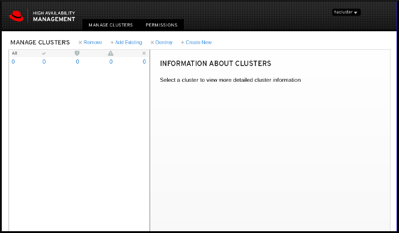

Configuring and managing high availability clusters
Configuring and managing the Red Hat High Availability Add-On
Abstract
Providing feedback on Red Hat documentation
We appreciate your input on our documentation. Please let us know how we could make it better. To do so:
For simple comments on specific passages:
- Make sure you are viewing the documentation in the Multi-page HTML format. In addition, ensure you see the Feedback button in the upper right corner of the document.
- Use your mouse cursor to highlight the part of text that you want to comment on.
- Click the Add Feedback pop-up that appears below the highlighted text.
- Follow the displayed instructions.
For submitting more complex feedback, create a Bugzilla ticket:
- Go to the Bugzilla website.
- As the Component, use Documentation.
- Fill in the Description field with your suggestion for improvement. Include a link to the relevant part(s) of documentation.
- Click Submit Bug.
Chapter 1. High Availability Add-On overview
The High Availability Add-On is a clustered system that provides reliability, scalability, and availability to critical production services.
A cluster is two or more computers (called nodes or members) that work together to perform a task. Clusters can be used to provide highly available services or resources. The redundancy of multiple machines is used to guard against failures of many types.
High availability clusters provide highly available services by eliminating single points of failure and by failing over services from one cluster node to another in case a node becomes inoperative. Typically, services in a high availability cluster read and write data (by means of read-write mounted file systems). Therefore, a high availability cluster must maintain data integrity as one cluster node takes over control of a service from another cluster node. Node failures in a high availability cluster are not visible from clients outside the cluster. (High availability clusters are sometimes referred to as failover clusters.) The High Availability Add-On provides high availability clustering through its high availability service management component, Pacemaker.
1.1. High Availability Add-On components
The High Availability Add-On consists of the following major components:
- Cluster infrastructure — Provides fundamental functions for nodes to work together as a cluster: configuration file management, membership management, lock management, and fencing.
- High availability service management — Provides failover of services from one cluster node to another in case a node becomes inoperative.
- Cluster administration tools — Configuration and management tools for setting up, configuring, and managing the High Availability Add-On. The tools are for use with the cluster infrastructure components, the high availability and service management components, and storage.
You can supplement the High Availability Add-On with the following components:
- Red Hat GFS2 (Global File System 2) — Part of the Resilient Storage Add-On, this provides a cluster file system for use with the High Availability Add-On. GFS2 allows multiple nodes to share storage at a block level as if the storage were connected locally to each cluster node. GFS2 cluster file system requires a cluster infrastructure.
-
LVM Locking Daemon (
lvmlockd) — Part of the Resilient Storage Add-On, this provides volume management of cluster storage.lvmlockdsupport also requires cluster infrastructure. - Load Balancer Add-On — Routing software that provides high availability load balancing and failover in layer 4 (TCP) and layer 7 (HTTP, HTTPS) services. The Load Balancer Add-On runs in a cluster of redundant virtual routers that uses load algorithms to distribute client requests to real servers, collectively acting as a virtual server. It is not necessary to use the Load Balancer Add-On in conjunction with Pacemaker.
1.2. Pacemaker overview
Pacemaker is a cluster resource manager. It achieves maximum availability for your cluster services and resources by making use of the cluster infrastructure’s messaging and membership capabilities to deter and recover from node and resource-level failure.
1.2.1. Pacemaker architecture components
A cluster configured with Pacemaker comprises separate component daemons that monitor cluster membership, scripts that manage the services, and resource management subsystems that monitor the disparate resources.
The following components form the Pacemaker architecture:
- Cluster Information Base (CIB)
- The Pacemaker information daemon, which uses XML internally to distribute and synchronize current configuration and status information from the Designated Coordinator (DC) — a node assigned by Pacemaker to store and distribute cluster state and actions by means of the CIB — to all other cluster nodes.
- Cluster Resource Management Daemon (CRMd)
Pacemaker cluster resource actions are routed through this daemon. Resources managed by CRMd can be queried by client systems, moved, instantiated, and changed when needed.
Each cluster node also includes a local resource manager daemon (LRMd) that acts as an interface between CRMd and resources. LRMd passes commands from CRMd to agents, such as starting and stopping and relaying status information.
- Shoot the Other Node in the Head (STONITH)
- STONITH is the Pacemaker fencing implementation. It acts as a cluster resource in Pacemaker that processes fence requests, forcefully powering down nodes and removing them from the cluster to ensure data integrity. STONITH is configured in the CIB and can be monitored as a normal cluster resource. For a general overview of fencing, see Section 1.3, “Fencing overview”.
- corosync
corosyncis the component - and a daemon of the same name - that serves the core membership and member-communication needs for high availability clusters. It is required for the High Availability Add-On to function.In addition to those membership and messaging functions,
corosyncalso:- Manages quorum rules and determination.
- Provides messaging capabilities for applications that coordinate or operate across multiple members of the cluster and thus must communicate stateful or other information between instances.
-
Uses the
kronosnetlibrary as its network transport to provide multiple redundant links and automatic failover.
1.2.2. Configuration and management tools
The High Availability Add-On features two configuration tools for cluster deployment, monitoring, and management.
pcsThe
pcscommand line interface controls and configures Pacemaker and thecorosyncheartbeat daemon. A command-line based program,pcscan perform the following cluster management tasks:- Create and configure a Pacemaker/Corosync cluster
- Modify configuration of the cluster while it is running
- Remotely configure both Pacemaker and Corosync as well as start, stop, and display status information of the cluster
pcsdWeb UI- A graphical user interface to create and configure Pacemaker/Corosync clusters.
1.2.3. The cluster and pacemaker configuration files
The configuration files for the Red Hat High Availability Add-On are corosync.conf and cib.xml.
The corosync.conf file provides the cluster parameters used by corosync, the cluster manager that Pacemaker is built on. In general, you should not edit the corosync.conf directly but, instead, use the pcs or pcsd interface.
The cib.xml file is an XML file that represents both the cluster’s configuration and the current state of all resources in the cluster. This file is used by Pacemaker’s Cluster Information Base (CIB). The contents of the CIB are automatically kept in sync across the entire cluster. Do not edit the cib.xml file directly; use the pcs or pcsd interface instead.
1.3. Fencing overview
If communication with a single node in the cluster fails, then other nodes in the cluster must be able to restrict or release access to resources that the failed cluster node may have access to. This cannot be accomplished by contacting the cluster node itself as the cluster node may not be responsive. Instead, you must provide an external method, which is called fencing with a fence agent. A fence device is an external device that can be used by the cluster to restrict access to shared resources by an errant node, or to issue a hard reboot on the cluster node.
Without a fence device configured you do not have a way to know that the resources previously used by the disconnected cluster node have been released, and this could prevent the services from running on any of the other cluster nodes. Conversely, the system may assume erroneously that the cluster node has released its resources and this can lead to data corruption and data loss. Without a fence device configured data integrity cannot be guaranteed and the cluster configuration will be unsupported.
When the fencing is in progress no other cluster operation is allowed to run. Normal operation of the cluster cannot resume until fencing has completed or the cluster node rejoins the cluster after the cluster node has been rebooted.
For more information about fencing, see Fencing in a Red Hat High Availability Cluster.
1.4. Quorum overview
In order to maintain cluster integrity and availability, cluster systems use a concept known as quorum to prevent data corruption and loss. A cluster has quorum when more than half of the cluster nodes are online. To mitigate the chance of data corruption due to failure, Pacemaker by default stops all resources if the cluster does not have quorum.
Quorum is established using a voting system. When a cluster node does not function as it should or loses communication with the rest of the cluster, the majority working nodes can vote to isolate and, if needed, fence the node for servicing.
For example, in a 6-node cluster, quorum is established when at least 4 cluster nodes are functioning. If the majority of nodes go offline or become unavailable, the cluster no longer has quorum and Pacemaker stops clustered services.
The quorum features in Pacemaker prevent what is also known as split-brain, a phenomenon where the cluster is separated from communication but each part continues working as separate clusters, potentially writing to the same data and possibly causing corruption or loss. For more information on what it means to be in a split-brain state, and on quorum concepts in general, see Exploring Concepts of RHEL High Availability Clusters - Quorum.
A Red Hat Enterprise Linux High Availability Add-On cluster uses the votequorum service, in conjunction with fencing, to avoid split brain situations. A number of votes is assigned to each system in the cluster, and cluster operations are allowed to proceed only when a majority of votes is present.
1.5. Resource overview
A cluster resource is an instance of program, data, or application to be managed by the cluster service. These resources are abstracted by agents that provide a standard interface for managing the resource in a cluster environment.
To ensure that resources remain healthy, you can add a monitoring operation to a resource’s definition. If you do not specify a monitoring operation for a resource, one is added by default.
You can determine the behavior of a resource in a cluster by configuring constraints. You can configure the following categories of constraints:
- location constraints — A location constraint determines which nodes a resource can run on.
- ordering constraints — An ordering constraint determines the order in which the resources run.
- colocation constraints — A colocation constraint determines where resources will be placed relative to other resources.
One of the most common elements of a cluster is a set of resources that need to be located together, start sequentially, and stop in the reverse order. To simplify this configuration, Pacemaker supports the concept of groups.
Chapter 2. Getting started with Pacemaker
The following procedures provide an introduction to the tools and processes you use to create a Pacemaker cluster. They are intended for users who are interested in seeing what the cluster software looks like and how it is administered, without needing to configure a working cluster.
These procedures do not create a supported Red Hat cluster, which requires at least two nodes and the configuration of a fencing device.
2.1. Learning to use Pacemaker
This example requires a single node running RHEL 8 and it requires a floating IP address that resides on the same network as one of the node’s statically assigned IP addresses.
-
The node used in this example is
z1.example.com. - The floating IP address used in this example is 192.168.122.120.
Ensure that the name of the node on which you are running is in your /etc/hosts file.
By working through this procedure, you will learn how to use Pacemaker to set up a cluster, how to display cluster status, and how to configure a cluster service. This example creates an Apache HTTP server as a cluster resource and shows how the cluster responds when the resource fails.
Install the Red Hat High Availability Add-On software packages from the High Availability channel, and start and enable the
pcsdservice.#
yum install pcs pacemaker fence-agents-all... #systemctl start pcsd.service#systemctl enable pcsd.serviceIf you are running the
firewallddaemon, enable the ports that are required by the Red Hat High Availability Add-On.#
firewall-cmd --permanent --add-service=high-availability#firewall-cmd --reloadSet a password for user
haclusteron each node in the cluster and authenticate userhaclusterfor each node in the cluster on the node from which you will be running thepcscommands. This example is using only a single node, the node from which you are running the commands, but this step is included here since it is a necessary step in configuring a supported Red Hat High Availability multi-node cluster.#
passwd hacluster... #pcs host auth z1.example.comCreate a cluster named
my_clusterwith one member and check the status of the cluster. This command creates and starts the cluster in one step.#
pcs cluster setup my_cluster --start z1.example.com... #pcs cluster statusCluster Status: Stack: corosync Current DC: z1.example.com (version 2.0.0-10.el8-b67d8d0de9) - partition with quorum Last updated: Thu Oct 11 16:11:18 2018 Last change: Thu Oct 11 16:11:00 2018 by hacluster via crmd on z1.example.com 1 node configured 0 resources configured PCSD Status: z1.example.com: OnlineA Red Hat High Availability cluster requires that you configure fencing for the cluster. The reasons for this requirement are described in Fencing in a Red Hat High Availability Cluster. For this introduction, however, which is intended to show only how to use the basic Pacemaker commands, disable fencing by setting the
stonith-enabledcluster option tofalse.WarningThe use of
stonith-enabled=falseis completely inappropriate for a production cluster. It tells the cluster to simply pretend that failed nodes are safely fenced.#
pcs property set stonith-enabled=falseConfigure a web browser on your system and create a web page to display a simple text message. If you are running the
firewallddaemon, enable the ports that are required byhttpd.NoteDo not use
systemctl enableto enable any services that will be managed by the cluster to start at system boot.#
yum install -y httpd wget... #firewall-cmd --permanent --add-service=http#firewall-cmd --reload#cat <<-END >/var/www/html/index.html<html><body>My Test Site - $(hostname)</body></html>ENDIn order for the Apache resource agent to get the status of Apache, create the following addition to the existing configuration to enable the status server URL.
#
cat <<-END > /etc/httpd/conf.d/status.conf<Location /server-status>SetHandler server-statusOrder deny,allowDeny from allAllow from 127.0.0.1Allow from ::1</Location>ENDCreate
IPaddr2andapacheresources for the cluster to manage. The 'IPaddr2' resource is a floating IP address that must not be one already associated with a physical node. If the 'IPaddr2' resource’s NIC device is not specified, the floating IP must reside on the same network as the statically assigned IP address used by the node.You can display a list of all available resource types with the
pcs resource listcommand. You can use thepcs resource describe resourcetypecommand to display the parameters you can set for the specified resource type. For example, the following command displays the parameters you can set for a resource of typeapache:#
pcs resource describe apache...In this example, the IP address resource and the apache resource are both configured as part of a group named
apachegroup, which ensures that the resources are kept together to run on the same node when you are configuring a working multi-node cluster.#
pcs resource create ClusterIP ocf:heartbeat:IPaddr2 ip=192.168.122.120 --group apachegroup#pcs resource create WebSite ocf:heartbeat:apache configfile=/etc/httpd/conf/httpd.conf statusurl="http://localhost/server-status" --group apachegroup#pcs statusCluster name: my_cluster Stack: corosync Current DC: z1.example.com (version 2.0.0-10.el8-b67d8d0de9) - partition with quorum Last updated: Fri Oct 12 09:54:33 2018 Last change: Fri Oct 12 09:54:30 2018 by root via cibadmin on z1.example.com 1 node configured 2 resources configured Online: [ z1.example.com ] Full list of resources: Resource Group: apachegroup ClusterIP (ocf::heartbeat:IPaddr2): Started z1.example.com WebSite (ocf::heartbeat:apache): Started z1.example.com PCSD Status: z1.example.com: Online ...After you have configured a cluster resource, you can use the
pcs resource configcommand to display the options that are configured for that resource.#
pcs resource config WebSiteResource: WebSite (class=ocf provider=heartbeat type=apache) Attributes: configfile=/etc/httpd/conf/httpd.conf statusurl=http://localhost/server-status Operations: start interval=0s timeout=40s (WebSite-start-interval-0s) stop interval=0s timeout=60s (WebSite-stop-interval-0s) monitor interval=1min (WebSite-monitor-interval-1min)- Point your browser to the website you created using the floating IP address you configured. This should display the text message you defined.
Stop the apache web service and check the cluster status. Using
killall -9simulates an application-level crash.#
killall -9 httpdCheck the cluster status. You should see that stopping the web service caused a failed action, but that the cluster software restarted the service and you should still be able to access the website.
#
pcs statusCluster name: my_cluster ... Current DC: z1.example.com (version 1.1.13-10.el7-44eb2dd) - partition with quorum 1 node and 2 resources configured Online: [ z1.example.com ] Full list of resources: Resource Group: apachegroup ClusterIP (ocf::heartbeat:IPaddr2): Started z1.example.com WebSite (ocf::heartbeat:apache): Started z1.example.com Failed Resource Actions: * WebSite_monitor_60000 on z1.example.com 'not running' (7): call=13, status=complete, exitreason='none', last-rc-change='Thu Oct 11 23:45:50 2016', queued=0ms, exec=0ms PCSD Status: z1.example.com: OnlineYou can clear the failure status on the resource that failed once the service is up and running again and the failed action notice will no longer appear when you view the cluster status.
#
pcs resource cleanup WebSiteWhen you are finished looking at the cluster and the cluster status, stop the cluster services on the node. Even though you have only started services on one node for this introduction, the
--allparameter is included since it would stop cluster services on all nodes on an actual multi-node cluster.#
pcs cluster stop --all
2.2. Learning to configure failover
This procedure provides an introduction to creating a Pacemaker cluster running a service that will fail over from one node to another when the node on which the service is running becomes unavailable. By working through this procedure, you can learn how to create a service in a two-node cluster and you can then observe what happens to that service when it fails on the node on which it running.
This example procedure configures a two-node Pacemaker cluster running an Apache HTTP server. You can then stop the Apache service on one node to see how the service remains available.
This procedure requires as a prerequisite that you have two nodes running Red Hat Enterprise Linux 8 that can communicate with each other, and it requires a floating IP address that resides on the same network as one of the node’s statically assigned IP addresses.
-
The nodes used in this example are
z1.example.comandz2.example.com. - The floating IP address used in this example is 192.168.122.120.
Ensure that the names of the nodes you are using are in the /etc/hosts file on each node.
On both nodes, install the Red Hat High Availability Add-On software packages from the High Availability channel, and start and enable the
pcsdservice.#
yum install pcs pacemaker fence-agents-all... #systemctl start pcsd.service#systemctl enable pcsd.serviceIf you are running the
firewallddaemon, on both nodes enable the ports that are required by the Red Hat High Availability Add-On.#
firewall-cmd --permanent --add-service=high-availability#firewall-cmd --reloadOn both nodes in the cluster, set a password for user
hacluster.#
passwd haclusterAuthenticate user
haclusterfor each node in the cluster on the node from which you will be running thepcscommands.#
pcs host auth z1.example.com z2.example.comCreate a cluster named
my_clusterwith both nodes as cluster members. This command creates and starts the cluster in one step. You only need to run this from one node in the cluster becausepcsconfiguration commands take effect for the entire cluster.On one node in cluster, run the following command.
#
pcs cluster setup my_cluster --start z1.example.com z2.example.comA Red Hat High Availability cluster requires that you configure fencing for the cluster. The reasons for this requirement are described in Fencing in a Red Hat High Availability Cluster. For this introduction, however, to show only how failover works in this configuration, disable fencing by setting the
stonith-enabledcluster option tofalseWarningThe use of
stonith-enabled=falseis completely inappropriate for a production cluster. It tells the cluster to simply pretend that failed nodes are safely fenced.#
pcs property set stonith-enabled=falseAfter creating a cluster and disabling fencing, check the status of the cluster.
NoteWhen you run the
pcs cluster statuscommand, it may show output that temporarily differs slightly from the examples as the system components start up.#
pcs cluster statusCluster Status: Stack: corosync Current DC: z1.example.com (version 2.0.0-10.el8-b67d8d0de9) - partition with quorum Last updated: Thu Oct 11 16:11:18 2018 Last change: Thu Oct 11 16:11:00 2018 by hacluster via crmd on z1.example.com 2 nodes configured 0 resources configured PCSD Status: z1.example.com: Online z2.example.com: OnlineOn both nodes, configure a web browser and create a web page to display a simple text message. If you are running the
firewallddaemon, enable the ports that are required byhttpd.NoteDo not use
systemctl enableto enable any services that will be managed by the cluster to start at system boot.#
yum install -y httpd wget... #firewall-cmd --permanent --add-service=http#firewall-cmd --reload#cat <<-END >/var/www/html/index.html<html><body>My Test Site - $(hostname)</body></html>ENDIn order for the Apache resource agent to get the status of Apache, on each node in the cluster create the following addition to the existing configuration to enable the status server URL.
#
cat <<-END > /etc/httpd/conf.d/status.conf<Location /server-status>SetHandler server-statusOrder deny,allowDeny from allAllow from 127.0.0.1Allow from ::1</Location>ENDCreate
IPaddr2andapacheresources for the cluster to manage. The 'IPaddr2' resource is a floating IP address that must not be one already associated with a physical node. If the 'IPaddr2' resource’s NIC device is not specified, the floating IP must reside on the same network as the statically assigned IP address used by the node.You can display a list of all available resource types with the
pcs resource listcommand. You can use thepcs resource describe resourcetypecommand to display the parameters you can set for the specified resource type. For example, the following command displays the parameters you can set for a resource of typeapache:#
pcs resource describe apache...In this example, the IP address resource and the apache resource are both configured as part of a group named
apachegroup, which ensures that the resources are kept together to run on the same node.Run the following commands from one node in the cluster:
#
pcs resource create ClusterIP ocf:heartbeat:IPaddr2 ip=192.168.122.120 --group apachegroup#pcs resource create WebSite ocf:heartbeat:apache configfile=/etc/httpd/conf/httpd.conf statusurl="http://localhost/server-status" --group apachegroup#pcs statusCluster name: my_cluster Stack: corosync Current DC: z1.example.com (version 2.0.0-10.el8-b67d8d0de9) - partition with quorum Last updated: Fri Oct 12 09:54:33 2018 Last change: Fri Oct 12 09:54:30 2018 by root via cibadmin on z1.example.com 2 nodes configured 2 resources configured Online: [ z1.example.com z2.example.com ] Full list of resources: Resource Group: apachegroup ClusterIP (ocf::heartbeat:IPaddr2): Started z1.example.com WebSite (ocf::heartbeat:apache): Started z1.example.com PCSD Status: z1.example.com: Online z2.example.com: Online ...Note that in this instance, the
apachegroupservice is running on node z1.example.com.Access the website you created, stop the service on the node on which it is running, and note how the service fails over to the second node.
- Point a browser to the website you created using the floating IP address you configured. This should display the text message you defined, displaying the name of the node on which the website is running.
Stop the apache web service. Using
killall -9simulates an application-level crash.#
killall -9 httpdCheck the cluster status. You should see that stopping the web service caused a failed action, but that the cluster software restarted the service on the node on which it had been running and you should still be able to access the web browser.
#
pcs statusCluster name: my_cluster Stack: corosync Current DC: z1.example.com (version 2.0.0-10.el8-b67d8d0de9) - partition with quorum Last updated: Fri Oct 12 09:54:33 2018 Last change: Fri Oct 12 09:54:30 2018 by root via cibadmin on z1.example.com 2 nodes configured 2 resources configured Online: [ z1.example.com z2.example.com ] Full list of resources: Resource Group: apachegroup ClusterIP (ocf::heartbeat:IPaddr2): Started z1.example.com WebSite (ocf::heartbeat:apache): Started z1.example.com Failed Resource Actions: * WebSite_monitor_60000 on z1.example.com 'not running' (7): call=31, status=complete, exitreason='none', last-rc-change='Fri Feb 5 21:01:41 2016', queued=0ms, exec=0msClear the failure status once the service is up and running again.
#
pcs resource cleanup WebSitePut the node on which the service is running into standby mode. Note that since we have disabled fencing we can not effectively simulate a node-level failure (such as pulling a power cable) because fencing is required for the cluster to recover from such situations.
#
pcs node standby z1.example.comCheck the status of the cluster and note where the service is now running.
#
pcs statusCluster name: my_cluster Stack: corosync Current DC: z1.example.com (version 2.0.0-10.el8-b67d8d0de9) - partition with quorum Last updated: Fri Oct 12 09:54:33 2018 Last change: Fri Oct 12 09:54:30 2018 by root via cibadmin on z1.example.com 2 nodes configured 2 resources configured Node z1.example.com: standby Online: [ z2.example.com ] Full list of resources: Resource Group: apachegroup ClusterIP (ocf::heartbeat:IPaddr2): Started z2.example.com WebSite (ocf::heartbeat:apache): Started z2.example.com- Access the website. There should be no loss of service, although the display message should indicate the node on which the service is now running.
To restore cluster services to the first node, take the node out of standby mode. This will not necessarily move the service back to that node.
#
pcs cluster unstandby z1.example.comFor final cleanup, stop the cluster services on both nodes.
#
pcs cluster stop --all
Chapter 3. The pcs command line interface
The pcs command line interface controls and configures cluster services such as corosync, pacemaker,booth, and sbd by providing an easier interface to their configuration files.
Note that you should not edit the cib.xml configuration file directly. In most cases, Pacemaker will reject a directly modified cib.xml file.
3.1. pcs help display
You can use the -h option of pcs to display the parameters of a pcs command and a description of those parameters. For example, the following command displays the parameters of the pcs resource command. Only a portion of the output is shown.
# pcs resource -h3.2. Viewing the raw cluster configuration
Although you should not edit the cluster configuration file directly, you can view the raw cluster configuration with the pcs cluster cib command.
You can save the raw cluster configuration to a specified file with the pcs cluster cib filename command. If you have previously configured a cluster and there is already an active CIB, you use the following command to save the raw xml file.
pcs cluster cib filename
For example, the following command saves the raw xml from the CIB into a file named testfile.
pcs cluster cib testfile
3.3. Saving a configuration change to a working file
When configuring a cluster, you can save configuration changes to a specified file without affecting the active CIB. This allows you to specify configuration updates without immediately updating the currently running cluster configuration with each individual update.
For information on saving the CIB to a file, see Viewing the raw cluster configuration. Once you have created that file, you can save configuration changes to that file rather than to the active CIB by using the -f option of the pcs command. When you have completed the changes and are ready to update the active CIB file, you can push those file updates with the pcs cluster cib-push command.
The following is the recommended procedure for pushing changes to the CIB file. This procedure creates a copy of the original saved CIB file and makes changes to that copy. When pushing those changes to the active CIB, this procedure specifies the diff-against option of the pcs cluster cib-push command so that only the changes between the original file and the updated file are pushed to the CIB. This allows users to make changes in parallel that do not overwrite each other, and it reduces the load on Pacemaker which does not need to parse the entire configuration file.
Save the active CIB to a file. This example saves the CIB to a file named
original.xml.#
pcs cluster cib original.xmlCopy the saved file to the working file you will be using for the configuration updates.
#
cp original.xml updated.xmlUpdate your configuration as needed. The following command creates a resource in the file
updated.xmlbut does not add that resource to the currently running cluster configuration.#
pcs -f updated.xml resource create VirtualIP ocf:heartbeat:IPaddr2 ip=192.168.0.120 op monitor interval=30sPush the updated file to the active CIB, specifying that you are pushing only the changes you have made to the original file.
#
pcs cluster cib-push updated.xml diff-against=original.xml
Alternately, you can push the entire current content of a CIB file with the following command.
pcs cluster cib-push filename
When pushing the entire CIB file, Pacemaker checks the version and does not allow you to push a CIB file which is older than the one already in a cluster. If you need to update the entire CIB file with a version that is older than the one currently in the cluster, you can use the --config option of the pcs cluster cib-push command.
pcs cluster cib-push --config filename3.4. Displaying cluster status
You can display the status of the cluster and the cluster resources with the following command.
pcs status
You can display the status of a particular cluster component with the commands parameter of the pcs status command, specifying resources, cluster, nodes, or pcsd.
pcs status commandsFor example, the following command displays the status of the cluster resources.
pcs status resources
The following command displays the status of the cluster, but not the cluster resources.
pcs cluster status
3.5. Displaying the full cluster configuration
Use the following command to display the full current cluster configuration.
pcs config
Chapter 4. Creating a Red Hat High-Availability cluster with Pacemaker
The following procedure creates a Red Hat High Availability two-node cluster using pcs.
Configuring the cluster in this example requires that your system include the following components:
-
2 nodes, which will be used to create the cluster. In this example, the nodes used are
z1.example.comandz2.example.com. - Network switches for the private network. We recommend but do not require a private network for communication among the cluster nodes and other cluster hardware such as network power switches and Fibre Channel switches.
-
A fencing device for each node of the cluster. This example uses two ports of the APC power switch with a host name of
zapc.example.com.
4.1. Installing cluster software
The following procedure installs the cluster software and configures your system for cluster creation.
On each node in the cluster, install the Red Hat High Availability Add-On software packages along with all available fence agents from the High Availability channel.
#
yum install pcs pacemaker fence-agents-allAlternatively, you can install the Red Hat High Availability Add-On software packages along with only the fence agent that you require with the following command.
#
yum install pcs pacemaker fence-agents-modelThe following command displays a list of the available fence agents.
#
rpm -q -a | grep fencefence-agents-rhevm-4.0.2-3.el7.x86_64 fence-agents-ilo-mp-4.0.2-3.el7.x86_64 fence-agents-ipmilan-4.0.2-3.el7.x86_64 ...WarningAfter you install the Red Hat High Availability Add-On packages, you should ensure that your software update preferences are set so that nothing is installed automatically. Installation on a running cluster can cause unexpected behaviors. For more information, see Recommended Practices for Applying Software Updates to a RHEL High Availability or Resilient Storage Cluster.
If you are running the
firewallddaemon, execute the following commands to enable the ports that are required by the Red Hat High Availability Add-On.NoteYou can determine whether the
firewallddaemon is installed on your system with therpm -q firewalldcommand. If it is installed, you can determine whether it is running with thefirewall-cmd --statecommand.#
firewall-cmd --permanent --add-service=high-availability#firewall-cmd --add-service=high-availabilityNoteThe ideal firewall configuration for cluster components depends on the local environment, where you may need to take into account such considerations as whether the nodes have multiple network interfaces or whether off-host firewalling is present. The example here, which opens the ports that are generally required by a Pacemaker cluster, should be modified to suit local conditions. Enabling ports for the High Availability Add-On shows the ports to enable for the Red Hat High Availability Add-On and provides an explanation for what each port is used for.
In order to use
pcsto configure the cluster and communicate among the nodes, you must set a password on each node for the user IDhacluster, which is thepcsadministration account. It is recommended that the password for userhaclusterbe the same on each node.#
passwd haclusterChanging password for user hacluster. New password: Retype new password: passwd: all authentication tokens updated successfully.Before the cluster can be configured, the
pcsddaemon must be started and enabled to start up on boot on each node. This daemon works with thepcscommand to manage configuration across the nodes in the cluster.On each node in the cluster, execute the following commands to start the
pcsdservice and to enablepcsdat system start.#
systemctl start pcsd.service#systemctl enable pcsd.service
4.2. Installing the pcp-zeroconf package (recommended)
When you set up your cluster, it is recommended that you install the pcp-zeroconf package for the Performance Co-Pilot (PCP) tool. PCP is Red Hat’s recommended resource-monitoring tool for RHEL systems. Installing the pcp-zeroconf package allows you to have PCP running and collecting performance-monitoring data for the benefit of investigations into fencing, resource failures, and other events that disrupt the cluster.
Cluster deployments where PCP is enabled will need sufficient space available for PCP’s captured data on the file system that contains /var/log/pcp/. Typical space usage by PCP varies across deployments, but 10Gb is usually sufficient when using the pcp-zeroconf default settings, and some environments may require less. Monitoring usage in this directory over a 14-day period of typical activity can provide a more accurate usage expectation.
To install the pcp-zeroconf package, run the following command.
# yum install pcp-zeroconf
This package enables pmcd and sets up data capture at a 10-second interval.
For information on reviewing PCP data, see Why did a RHEL High Availability cluster node reboot - and how can I prevent it from happening again? on the Red Hat Customer Portal.
4.3. Creating a high availability cluster
This procedure creates a Red Hat High Availability Add-On cluster that consists of the nodes z1.example.com and z2.example.com.
Authenticate the
pcsuserhaclusterfor each node in the cluster on the node from which you will be runningpcs.The following command authenticates user
haclusteronz1.example.comfor both of the nodes in a two-node cluster that will consist ofz1.example.comandz2.example.com.[root@z1 ~]#
pcs host auth z1.example.com z2.example.comUsername:haclusterPassword: z1.example.com: Authorized z2.example.com: AuthorizedExecute the following command from
z1.example.comto create the two-node clustermy_clusterthat consists of nodesz1.example.comandz2.example.com. This will propagate the cluster configuration files to both nodes in the cluster. This command includes the--startoption, which will start the cluster services on both nodes in the cluster.[root@z1 ~]#
pcs cluster setup my_cluster --startz1.example.com z2.example.comEnable the cluster services to run on each node in the cluster when the node is booted.
NoteFor your particular environment, you may choose to leave the cluster services disabled by skipping this step. This allows you to ensure that if a node goes down, any issues with your cluster or your resources are resolved before the node rejoins the cluster. If you leave the cluster services disabled, you will need to manually start the services when you reboot a node by executing the
pcs cluster startcommand on that node.[root@z1 ~]#
pcs cluster enable --all
You can display the current status of the cluster with the pcs cluster status command. Because there may be a slight delay before the cluster is up and running when you start the cluster services with the --start option of the pcs cluster setup command, you should ensure that the cluster is up and running before performing any subsequent actions on the cluster and its configuration.
[root@z1 ~]# pcs cluster status
Cluster Status:
Stack: corosync
Current DC: z2.example.com (version 2.0.0-10.el8-b67d8d0de9) - partition with quorum
Last updated: Thu Oct 11 16:11:18 2018
Last change: Thu Oct 11 16:11:00 2018 by hacluster via crmd on z2.example.com
2 Nodes configured
0 Resources configured
...4.4. Creating a high availability cluster with multiple links
You can use the pcs cluster setup command to create a Red Hat High Availability cluster with multiple links by specifying all of the links for each node.
The format for the command to create a two-node cluster with two links is as follows.
pcs cluster setup cluster_name node1_name addr=node1_link0_address addr=node1_link1_address node2_name addr=node2_link0_address addr=node2_link1_address
When creating a cluster with multiple links, you should take the following into account.
-
The order of the
addr=addressparameters is important. The first address specified after a node name is forlink0, the second one forlink1, and so forth. - It is possible to specify up to eight links using the knet transport protocol, which is the default transport protocol.
-
All nodes must have the same number of
addr=parameters. -
Currently, it is not possible to add, remove, or change links in an existing cluster using the
pcscommand. - As with single-link clusters, do not mix IPv4 and IPv6 addresses in one link, although you can have one link running IPv4 and the other running IPv6.
- As with single-link clusters, you can specify addresses as IP addresses or as names as long as the names resolve to IPv4 or IPv6 addresses for which IPv4 and IPv6 addresses are not mixed in one link.
The following example creates a two-node cluster named my_twolink_cluster with two nodes, rh80-node1 and rh80-node2. rh80-node1 has two interfaces, IP address 192.168.122.201 as link0 and 192.168.123.201 as link1. rh80-node2 has two interfaces, IP address 192.168.122.202 as link0 and 192.168.123.202 as link1.
# pcs cluster setup my_twolink_cluster rh80-node1 addr=192.168.122.201 addr=192.168.123.201 rh80-node2 addr=192.168.122.202 addr=192.168.123.202
When adding a node to a cluster with multiple links, you must specify addresses for all links. The following example adds the node rh80-node3 to a cluster, specifying IP address 192.168.122.203 as link0 and 192.168.123.203 as link1.
# pcs cluster node add rh80-node3 addr=192.168.122.203 addr=192.168.123.2034.5. Configuring fencing
You must configure a fencing device for each node in the cluster. For information about the fence configuration commands and options, see Configuring fencing in a Red Hat High Availability cluster.
For general information on fencing and its importance in a Red Hat High Availability cluster, see Fencing in a Red Hat High Availability Cluster.
When configuring a fencing device, attention should be given to whether that device shares power with any nodes or devices in the cluster. If a node and its fence device do share power, then the cluster may be at risk of being unable to fence that node if the power to it and its fence device should be lost. Such a cluster should either have redundant power supplies for fence devices and nodes, or redundant fence devices that do not share power. Alternative methods of fencing such as SBD or storage fencing may also bring redundancy in the event of isolated power losses.
This example uses the APC power switch with a host name of zapc.example.com to fence the nodes, and it uses the fence_apc_snmp fencing agent. Because both nodes will be fenced by the same fencing agent, you can configure both fencing devices as a single resource, using the pcmk_host_map option.
You create a fencing device by configuring the device as a stonith resource with the pcs stonith create command. The following command configures a stonith resource named myapc that uses the fence_apc_snmp fencing agent for nodes z1.example.com and z2.example.com. The pcmk_host_map option maps z1.example.com to port 1, and z2.example.com to port 2. The login value and password for the APC device are both apc. By default, this device will use a monitor interval of sixty seconds for each node.
Note that you can use an IP address when specifying the host name for the nodes.
[root@z1 ~]#pcs stonith create myapc fence_apc_snmp\ipaddr="zapc.example.com" pcmk_host_map="z1.example.com:1;z2.example.com:2"\login="apc" passwd="apc"
The following command displays the parameters of an existing STONITH device.
[root@rh7-1 ~]# pcs stonith config myapc
Resource: myapc (class=stonith type=fence_apc_snmp)
Attributes: ipaddr=zapc.example.com pcmk_host_map=z1.example.com:1;z2.example.com:2 login=apc passwd=apc
Operations: monitor interval=60s (myapc-monitor-interval-60s)After configuring your fence device, you should test the device. For information on testing a fence device, see Testing a fence device.
Do not test your fence device by disabling the network interface, as this will not properly test fencing.
Once fencing is configured and a cluster has been started, a network restart will trigger fencing for the node which restarts the network even when the timeout is not exceeded. For this reason, do not restart the network service while the cluster service is running because it will trigger unintentional fencing on the node.
4.6. Backing up and restoring a cluster configuration
You can back up the cluster configuration in a tarball with the following command. If you do not specify a file name, the standard output will be used.
pcs config backup filename
The pcs config backup command backs up only the cluster configuration itself as configured in the CIB; the configuration of resource daemons is out of the scope of this command. For example if you have configured an Apache resource in the cluster, the resource settings (which are in the CIB) will be backed up, while the Apache daemon settings (as set in`/etc/httpd`) and the files it serves will not be backed up. Similarly, if there is a database resource configured in the cluster, the database itself will not be backed up, while the database resource configuration (CIB) will be.
Use the following command to restore the cluster configuration files on all nodes from the backup. If you do not specify a file name, the standard input will be used. Specifying the --local option restores only the files on the current node.
pcs config restore [--local] [filename]4.7. Enabling ports for the High Availability Add-On
The ideal firewall configuration for cluster components depends on the local environment, where you may need to take into account such considerations as whether the nodes have multiple network interfaces or whether off-host firewalling is present.
If you are running the firewalld daemon, execute the following commands to enable the ports that are required by the Red Hat High Availability Add-On.
#firewall-cmd --permanent --add-service=high-availability#firewall-cmd --add-service=high-availability
You may need to modify which ports are open to suit local conditions.
You can determine whether the firewalld daemon is installed on your system with the rpm -q firewalld command. If the firewalld daemon is installed, you can determine whether it is running with the firewall-cmd --state command.
Table 4.1, “Ports to Enable for High Availability Add-On” shows the ports to enable for the Red Hat High Availability Add-On and provides an explanation for what the port is used for.
Table 4.1. Ports to Enable for High Availability Add-On
| Port | When Required |
|---|---|
| TCP 2224 |
Default
It is crucial to open port 2224 in such a way that |
| TCP 3121 | Required on all nodes if the cluster has any Pacemaker Remote nodes
Pacemaker’s |
| TCP 5403 |
Required on the quorum device host when using a quorum device with |
| UDP 5404-5412 |
Required on corosync nodes to facilitate communication between nodes. It is crucial to open ports 5404-5412 in such a way that |
| TCP 21064 |
Required on all nodes if the cluster contains any resources requiring DLM (such as |
| TCP 9929, UDP 9929 | Required to be open on all cluster nodes and booth arbitrator nodes to connections from any of those same nodes when the Booth ticket manager is used to establish a multi-site cluster. |
Chapter 5. Configuring an active/passive Apache HTTP server in a Red Hat High Availability cluster
The following procedure configures an active/passive Apache HTTP server in a two-node Red Hat Enterprise Linux High Availability Add-On cluster using pcs to configure cluster resources. In this use case, clients access the Apache HTTP server through a floating IP address. The web server runs on one of two nodes in the cluster. If the node on which the web server is running becomes inoperative, the web server starts up again on the second node of the cluster with minimal service interruption.
Figure 5.1, “Apache in a Red Hat High Availability Two-Node Cluster” shows a high-level overview of the cluster in which The cluster is a two-node Red Hat High Availability cluster which is configured with a network power switch and with shared storage. The cluster nodes are connected to a public network, for client access to the Apache HTTP server through a virtual IP. The Apache server runs on either Node 1 or Node 2, each of which has access to the storage on which the Apache data is kept. In this illustration, the web server is running on Node 1 while Node 2 is available to run the server if Node 1 becomes inoperative.
Figure 5.1. Apache in a Red Hat High Availability Two-Node Cluster
This use case requires that your system include the following components:
- A two-node Red Hat High Availability cluster with power fencing configured for each node. We recommend but do not require a private network. This procedure uses the cluster example provided in Creating a Red Hat High-Availability cluster with Pacemaker.
- A public virtual IP address, required for Apache.
- Shared storage for the nodes in the cluster, using iSCSI or Fibre Channel.
The cluster is configured with an Apache resource group, which contains the cluster components that the web server requires: an LVM resource, a file system resource, an IP address resource, and a web server resource. This resource group can fail over from one node of the cluster to the other, allowing either node to run the web server. Before creating the resource group for this cluster, you will be performing the following procedures:
-
Configure an
ext4file system on the logical volumemy_lv. - Configure a web server.
After performing these steps, you create the resource group and the resources it contains.
5.1. Configuring an LVM volume with an ext4 file system in a Pacemaker cluster
This use case requires that you create an LVM logical volume on storage that is shared between the nodes of the cluster.
LVM volumes and the corresponding partitions and devices used by cluster nodes must be connected to the cluster nodes only.
The following procedure creates an LVM logical volume and then creates an ext4 file system on that volume for use in a Pacemaker cluster. In this example, the shared partition /dev/sdb1 is used to store the LVM physical volume from which the LVM logical volume will be created.
On both nodes of the cluster, perform the following steps to set the value for the LVM system ID to the value of the
unameidentifier for the system. The LVM system ID will be used to ensure that only the cluster is capable of activating the volume group.Set the
system_id_sourceconfiguration option in the/etc/lvm/lvm.confconfiguration file touname.# Configuration option global/system_id_source. system_id_source = "uname"
Verify that the LVM system ID on the node matches the
unamefor the node.#
lvm systemidsystem ID: z1.example.com #uname -nz1.example.com
Create the LVM volume and create an ext4 file system on that volume. Since the
/dev/sdb1partition is storage that is shared, you perform this part of the procedure on one node only.Create an LVM physical volume on partition
/dev/sdb1.#
pvcreate /dev/sdb1Physical volume "/dev/sdb1" successfully createdCreate the volume group
my_vgthat consists of the physical volume/dev/sdb1.#
vgcreate my_vg /dev/sdb1Volume group "my_vg" successfully createdVerify that the new volume group has the system ID of the node on which you are running and from which you created the volume group.
#
vgs -o+systemidVG #PV #LV #SN Attr VSize VFree System ID my_vg 1 0 0 wz--n- <1.82t <1.82t z1.example.comCreate a logical volume using the volume group
my_vg.#
lvcreate -L450 -n my_lv my_vgRounding up size to full physical extent 452.00 MiB Logical volume "my_lv" createdYou can use the
lvscommand to display the logical volume.#
lvsLV VG Attr LSize Pool Origin Data% Move Log Copy% Convert my_lv my_vg -wi-a---- 452.00m ...Create an ext4 file system on the logical volume
my_lv.#
mkfs.ext4 /dev/my_vg/my_lvmke2fs 1.44.3 (10-July-2018) Creating filesystem with 462848 1k blocks and 115824 inodes ...
5.2. Configuring an Apache HTTP Server
The following procedure configures an Apache HTTP Server.
Ensure that the Apache HTTP Server is installed on each node in the cluster. You also need the
wgettool installed on the cluster to be able to check the status of the Apache HTTP Server.On each node, execute the following command.
#
yum install -y httpd wgetIf you are running the
firewallddaemon, on each node in the cluster enable the ports that are required by the Red Hat High Availability Add-On.#
firewall-cmd --permanent --add-service=high-availability#firewall-cmd --reloadIn order for the Apache resource agent to get the status of the Apache HTTP Server, ensure that the following text is present in the
/etc/httpd/conf/httpd.conffile on each node in the cluster, and ensure that it has not been commented out. If this text is not already present, add the text to the end of the file.<Location /server-status> SetHandler server-status Require local </Location>When you use the
apacheresource agent to manage Apache, it does not usesystemd. Because of this, you must edit thelogrotatescript supplied with Apache so that it does not usesystemctlto reload Apache.Remove the following line in the
/etc/logrotate.d/httpdfile on each node in the cluster./bin/systemctl reload httpd.service > /dev/null 2>/dev/null || true
Replace the line you removed with the following line.
/usr/sbin/httpd -f /etc/httpd/conf/httpd.conf -c "PidFile /var/run/httpd.pid" -k graceful > /dev/null 2>/dev/null || true
Create a web page for Apache to serve up. On one node in the cluster, mount the file system you created in Configuring an LVM volume with an ext4 file system, create the file
index.htmlon that file system, and then unmount the file system.#
mount /dev/my_vg/my_lv /var/www/#mkdir /var/www/html#mkdir /var/www/cgi-bin#mkdir /var/www/error#restorecon -R /var/www#cat <<-END >/var/www/html/index.html<html><body>Hello</body></html>END#umount /var/www
5.3. Creating the resources and resource groups
This use case requires that you create four cluster resources. To ensure these resources all run on the same node, they are configured as part of the resource group apachegroup. The resources to create are as follows, listed in the order in which they will start.
-
An
LVMresource namedmy_lvmthat uses the LVM volume group you created in Configuring an LVM volume with an ext4 file system. -
A
Filesystemresource namedmy_fs, that uses the file system device/dev/my_vg/my_lvyou created in Configuring an LVM volume with an ext4 file system. -
An
IPaddr2resource, which is a floating IP address for theapachegroupresource group. The IP address must not be one already associated with a physical node. If theIPaddr2resource’s NIC device is not specified, the floating IP must reside on the same network as one of the node’s statically assigned IP addresses, otherwise the NIC device to assign the floating IP address cannot be properly detected. -
An
apacheresource namedWebsitethat uses theindex.htmlfile and the Apache configuration you defined in Configuring an Apache HTTP server.
The following procedure creates the resource group apachegroup and the resources that the group contains. The resources will start in the order in which you add them to the group, and they will stop in the reverse order in which they are added to the group. Run this procedure from one node of the cluster only.
The following command creates the
LVM-activateresourcemy_lvm. Because the resource groupapachegroupdoes not yet exist, this command creates the resource group.NoteDo not configure more than one
LVM-activateresource that uses the same LVM volume group in an active/passive HA configuration, as this could cause data corruption. Additionally, do not configure anLVM-activateresource as a clone resource in an active/passive HA configuration.[root@z1 ~]#
pcs resource create my_lvm ocf:heartbeat:LVM-activatevgname=my_vgvg_access_mode=system_id --group apachegroupWhen you create a resource, the resource is started automatically. You can use the following command to confirm that the resource was created and has started.
#
pcs resource statusResource Group: apachegroup my_lvm (ocf::heartbeat:LVM-activate): StartedYou can manually stop and start an individual resource with the
pcs resource disableandpcs resource enablecommands.The following commands create the remaining resources for the configuration, adding them to the existing resource group
apachegroup.[root@z1 ~]#
pcs resource create my_fs Filesystem\device="/dev/my_vg/my_lv" directory="/var/www" fstype="ext4"\--group apachegroup[root@z1 ~]#pcs resource create VirtualIP IPaddr2 ip=198.51.100.3\cidr_netmask=24 --group apachegroup[root@z1 ~]#pcs resource create Website apache\configfile="/etc/httpd/conf/httpd.conf"\statusurl="http://127.0.0.1/server-status" --group apachegroupAfter creating the resources and the resource group that contains them, you can check the status of the cluster. Note that all four resources are running on the same node.
[root@z1 ~]#
pcs statusCluster name: my_cluster Last updated: Wed Jul 31 16:38:51 2013 Last change: Wed Jul 31 16:42:14 2013 via crm_attribute on z1.example.com Stack: corosync Current DC: z2.example.com (2) - partition with quorum Version: 1.1.10-5.el7-9abe687 2 Nodes configured 6 Resources configured Online: [ z1.example.com z2.example.com ] Full list of resources: myapc (stonith:fence_apc_snmp): Started z1.example.com Resource Group: apachegroup my_lvm (ocf::heartbeat:LVM): Started z1.example.com my_fs (ocf::heartbeat:Filesystem): Started z1.example.com VirtualIP (ocf::heartbeat:IPaddr2): Started z1.example.com Website (ocf::heartbeat:apache): Started z1.example.comNote that if you have not configured a fencing device for your cluster, by default the resources do not start.
Once the cluster is up and running, you can point a browser to the IP address you defined as the
IPaddr2resource to view the sample display, consisting of the simple word "Hello".Hello
If you find that the resources you configured are not running, you can run the
pcs resource debug-start resourcecommand to test the resource configuration.
5.4. Testing the resource configuration
In the cluster status display shown in Creating the resources and resource groups, all of the resources are running on node z1.example.com. You can test whether the resource group fails over to node z2.example.com by using the following procedure to put the first node in standby mode, after which the node will no longer be able to host resources.
The following command puts node
z1.example.cominstandbymode.[root@z1 ~]#
pcs node standby z1.example.comAfter putting node
z1instandbymode, check the cluster status. Note that the resources should now all be running onz2.[root@z1 ~]#
pcs statusCluster name: my_cluster Last updated: Wed Jul 31 17:16:17 2013 Last change: Wed Jul 31 17:18:34 2013 via crm_attribute on z1.example.com Stack: corosync Current DC: z2.example.com (2) - partition with quorum Version: 1.1.10-5.el7-9abe687 2 Nodes configured 6 Resources configured Node z1.example.com (1): standby Online: [ z2.example.com ] Full list of resources: myapc (stonith:fence_apc_snmp): Started z1.example.com Resource Group: apachegroup my_lvm (ocf::heartbeat:LVM): Started z2.example.com my_fs (ocf::heartbeat:Filesystem): Started z2.example.com VirtualIP (ocf::heartbeat:IPaddr2): Started z2.example.com Website (ocf::heartbeat:apache): Started z2.example.comThe web site at the defined IP address should still display, without interruption.
To remove
z1fromstandbymode, enter the following command.[root@z1 ~]#
pcs cluster unstandby z1.example.comNoteRemoving a node from
standbymode does not in itself cause the resources to fail back over to that node.
Chapter 6. Configuring an active/passive NFS server in a Red Hat High Availability cluster
The following procedure configures a highly available active/passive NFS server on a two-node Red Hat Enterprise Linux High Availability Add-On cluster using shared storage. The procedure uses pcs to configure Pacemaker cluster resources. In this use case, clients access the NFS file system through a floating IP address. The NFS server runs on one of two nodes in the cluster. If the node on which the NFS server is running becomes inoperative, the NFS server starts up again on the second node of the cluster with minimal service interruption.
6.1. Prerequisites
This use case requires that your system include the following components:
- A two-node Red Hat High Availability cluster with power fencing configured for each node. We recommend but do not require a private network. This procedure uses the cluster example provided in Creating a Red Hat High-Availability cluster with Pacemaker.
- A public virtual IP address, required for the NFS server.
- Shared storage for the nodes in the cluster, using iSCSI or Fibre Channel.
6.2. Procedural overview
Configuring a highly available active/passive NFS server on an existing two-node Red Hat Enterprise Linux High Availability cluster requires that you perform the following steps:
-
Configure an
ext4file system on the LVM logical volumemy_lvon the shared storage for the nodes in the cluster. - Configure an NFS share on the shared storage on the LVM logical volume.
- Create the cluster resources.
- Test the NFS server you have configured.
6.3. Configuring an LVM volume with an ext4 file system in a Pacemaker cluster
This use case requires that you create an LVM logical volume on storage that is shared between the nodes of the cluster.
LVM volumes and the corresponding partitions and devices used by cluster nodes must be connected to the cluster nodes only.
The following procedure creates an LVM logical volume and then creates an ext4 file system on that volume for use in a Pacemaker cluster. In this example, the shared partition /dev/sdb1 is used to store the LVM physical volume from which the LVM logical volume will be created.
On both nodes of the cluster, perform the following steps to set the value for the LVM system ID to the value of the
unameidentifier for the system. The LVM system ID will be used to ensure that only the cluster is capable of activating the volume group.Set the
system_id_sourceconfiguration option in the/etc/lvm/lvm.confconfiguration file touname.# Configuration option global/system_id_source. system_id_source = "uname"
Verify that the LVM system ID on the node matches the
unamefor the node.#
lvm systemidsystem ID: z1.example.com #uname -nz1.example.com
Create the LVM volume and create an ext4 file system on that volume. Since the
/dev/sdb1partition is storage that is shared, you perform this part of the procedure on one node only.Create an LVM physical volume on partition
/dev/sdb1.#
pvcreate /dev/sdb1Physical volume "/dev/sdb1" successfully createdCreate the volume group
my_vgthat consists of the physical volume/dev/sdb1.#
vgcreate my_vg /dev/sdb1Volume group "my_vg" successfully createdVerify that the new volume group has the system ID of the node on which you are running and from which you created the volume group.
#
vgs -o+systemidVG #PV #LV #SN Attr VSize VFree System ID my_vg 1 0 0 wz--n- <1.82t <1.82t z1.example.comCreate a logical volume using the volume group
my_vg.#
lvcreate -L450 -n my_lv my_vgRounding up size to full physical extent 452.00 MiB Logical volume "my_lv" createdYou can use the
lvscommand to display the logical volume.#
lvsLV VG Attr LSize Pool Origin Data% Move Log Copy% Convert my_lv my_vg -wi-a---- 452.00m ...Create an ext4 file system on the logical volume
my_lv.#
mkfs.ext4 /dev/my_vg/my_lvmke2fs 1.44.3 (10-July-2018) Creating filesystem with 462848 1k blocks and 115824 inodes ...
6.5. Configuring the resources and resource group for an NFS server in a cluster
This section provides the procedure for configuring the cluster resources for this use case.
If you have not configured a fencing device for your cluster, by default the resources do not start.
If you find that the resources you configured are not running, you can run the pcs resource debug-start resource command to test the resource configuration. This starts the service outside of the cluster’s control and knowledge. At the point the configured resources are running again, run pcs resource cleanup resource to make the cluster aware of the updates.
The following procedure configures the system resources. To ensure these resources all run on the same node, they are configured as part of the resource group nfsgroup. The resources will start in the order in which you add them to the group, and they will stop in the reverse order in which they are added to the group. Run this procedure from one node of the cluster only.
Create the LVM-activate resource named
my_lvm. Because the resource groupnfsgroupdoes not yet exist, this command creates the resource group.WarningDo not configure more than one
LVM-activateresource that uses the same LVM volume group in an active/passive HA configuration, as this risks data corruption. Additionally, do not configure anLVM-activateresource as a clone resource in an active/passive HA configuration.[root@z1 ~]#
pcs resource create my_lvm ocf:heartbeat:LVM-activatevgname=my_vgvg_access_mode=system_id --group nfsgroupCheck the status of the cluster to verify that the resource is running.
root@z1 ~]#
pcs statusCluster name: my_cluster Last updated: Thu Jan 8 11:13:17 2015 Last change: Thu Jan 8 11:13:08 2015 Stack: corosync Current DC: z2.example.com (2) - partition with quorum Version: 1.1.12-a14efad 2 Nodes configured 3 Resources configured Online: [ z1.example.com z2.example.com ] Full list of resources: myapc (stonith:fence_apc_snmp): Started z1.example.com Resource Group: nfsgroup my_lvm (ocf::heartbeat:LVM): Started z1.example.com PCSD Status: z1.example.com: Online z2.example.com: Online Daemon Status: corosync: active/enabled pacemaker: active/enabled pcsd: active/enabledConfigure a
Filesystemresource for the cluster.The following command configures an ext4
Filesystemresource namednfsshareas part of thenfsgroupresource group. This file system uses the LVM volume group and ext4 file system you created in Configuring an LVM volume with an ext4 file system and will be mounted on the/nfssharedirectory you created in Configuring an NFS share.[root@z1 ~]#
pcs resource create nfsshare Filesystem\device=/dev/my_vg/my_lv directory=/nfsshare\fstype=ext4 --group nfsgroupYou can specify mount options as part of the resource configuration for a
Filesystemresource with theoptions=optionsparameter. Run thepcs resource describe Filesystemcommand for full configuration options.Verify that the
my_lvmandnfsshareresources are running.[root@z1 ~]#
pcs status... Full list of resources: myapc (stonith:fence_apc_snmp): Started z1.example.com Resource Group: nfsgroup my_lvm (ocf::heartbeat:LVM): Started z1.example.com nfsshare (ocf::heartbeat:Filesystem): Started z1.example.com ...Create the
nfsserverresource namednfs-daemonas part of the resource groupnfsgroup.NoteThe
nfsserverresource allows you to specify annfs_shared_infodirparameter, which is a directory that NFS servers use to store NFS-related stateful information.It is recommended that this attribute be set to a subdirectory of one of the
Filesystemresources you created in this collection of exports. This ensures that the NFS servers are storing their stateful information on a device that will become available to another node if this resource group needs to relocate. In this example;-
/nfsshareis the shared-storage directory managed by theFilesystemresource -
/nfsshare/exports/export1and/nfsshare/exports/export2are the export directories -
/nfsshare/nfsinfois the shared-information directory for thenfsserverresource
[root@z1 ~]#
pcs resource create nfs-daemon nfsserver\nfs_shared_infodir=/nfsshare/nfsinfo nfs_no_notify=true\--group nfsgroup[root@z1 ~]#pcs status...-
Add the
exportfsresources to export the/nfsshare/exportsdirectory. These resources are part of the resource groupnfsgroup. This builds a virtual directory for NFSv4 clients. NFSv3 clients can access these exports as well.NoteThe
fsid=0option is required only if you want to create a virtual directory for NFSv4 clients. For more information, see How do I configure the fsid option in an NFS server’s /etc/exports file?.[root@z1 ~]#
pcs resource create nfs-root exportfs\clientspec=192.168.122.0/255.255.255.0\options=rw,sync,no_root_squash\directory=/nfsshare/exports\fsid=0 --group nfsgroup[root@z1 ~]# #pcs resource create nfs-export1 exportfs\clientspec=192.168.122.0/255.255.255.0\options=rw,sync,no_root_squash directory=/nfsshare/exports/export1\fsid=1 --group nfsgroup[root@z1 ~]# #pcs resource create nfs-export2 exportfs\clientspec=192.168.122.0/255.255.255.0\options=rw,sync,no_root_squash directory=/nfsshare/exports/export2\fsid=2 --group nfsgroupAdd the floating IP address resource that NFS clients will use to access the NFS share. This resource is part of the resource group
nfsgroup. For this example deployment, we are using 192.168.122.200 as the floating IP address.[root@z1 ~]#
pcs resource create nfs_ip IPaddr2\ip=192.168.122.200 cidr_netmask=24 --group nfsgroupAdd an
nfsnotifyresource for sending NFSv3 reboot notifications once the entire NFS deployment has initialized. This resource is part of the resource groupnfsgroup.NoteFor the NFS notification to be processed correctly, the floating IP address must have a host name associated with it that is consistent on both the NFS servers and the NFS client.
[root@z1 ~]#
pcs resource create nfs-notify nfsnotify\source_host=192.168.122.200 --group nfsgroupAfter creating the resources and the resource constraints, you can check the status of the cluster. Note that all resources are running on the same node.
[root@z1 ~]#
pcs status... Full list of resources: myapc (stonith:fence_apc_snmp): Started z1.example.com Resource Group: nfsgroup my_lvm (ocf::heartbeat:LVM): Started z1.example.com nfsshare (ocf::heartbeat:Filesystem): Started z1.example.com nfs-daemon (ocf::heartbeat:nfsserver): Started z1.example.com nfs-root (ocf::heartbeat:exportfs): Started z1.example.com nfs-export1 (ocf::heartbeat:exportfs): Started z1.example.com nfs-export2 (ocf::heartbeat:exportfs): Started z1.example.com nfs_ip (ocf::heartbeat:IPaddr2): Started z1.example.com nfs-notify (ocf::heartbeat:nfsnotify): Started z1.example.com ...
6.6. Testing the NFS resource configuration
You can validate your system configuration with the following procedures. You should be able to mount the exported file system with either NFSv3 or NFSv4.
6.6.1. Testing the NFS export
On a node outside of the cluster, residing in the same network as the deployment, verify that the NFS share can be seen by mounting the NFS share. For this example, we are using the 192.168.122.0/24 network.
#
showmount -e 192.168.122.200Export list for 192.168.122.200: /nfsshare/exports/export1 192.168.122.0/255.255.255.0 /nfsshare/exports 192.168.122.0/255.255.255.0 /nfsshare/exports/export2 192.168.122.0/255.255.255.0To verify that you can mount the NFS share with NFSv4, mount the NFS share to a directory on the client node. After mounting, verify that the contents of the export directories are visible. Unmount the share after testing.
#
mkdir nfsshare#mount -o "vers=4" 192.168.122.200:export1 nfsshare#ls nfsshareclientdatafile1 #umount nfsshareVerify that you can mount the NFS share with NFSv3. After mounting, verify that the test file
clientdatafile1is visible. Unlike NFSv4, since NFSv3 does not use the virtual file system, you must mount a specific export. Unmount the share after testing.#
mkdir nfsshare#mount -o "vers=3" 192.168.122.200:/nfsshare/exports/export2 nfsshare#ls nfsshareclientdatafile2 #umount nfsshare
6.6.2. Testing for failover
On a node outside of the cluster, mount the NFS share and verify access to the
clientdatafile1we created in Configuring an NFS share#
mkdir nfsshare#mount -o "vers=4" 192.168.122.200:export1 nfsshare#ls nfsshareclientdatafile1From a node within the cluster, determine which node in the cluster is running
nfsgroup. In this example,nfsgroupis running onz1.example.com.[root@z1 ~]#
pcs status... Full list of resources: myapc (stonith:fence_apc_snmp): Started z1.example.com Resource Group: nfsgroup my_lvm (ocf::heartbeat:LVM): Started z1.example.com nfsshare (ocf::heartbeat:Filesystem): Started z1.example.com nfs-daemon (ocf::heartbeat:nfsserver): Started z1.example.com nfs-root (ocf::heartbeat:exportfs): Started z1.example.com nfs-export1 (ocf::heartbeat:exportfs): Started z1.example.com nfs-export2 (ocf::heartbeat:exportfs): Started z1.example.com nfs_ip (ocf::heartbeat:IPaddr2): Started z1.example.com nfs-notify (ocf::heartbeat:nfsnotify): Started z1.example.com ...From a node within the cluster, put the node that is running
nfsgroupin standby mode.[root@z1 ~]#
pcs node standby z1.example.comVerify that
nfsgroupsuccessfully starts on the other cluster node.[root@z1 ~]#
pcs status... Full list of resources: Resource Group: nfsgroup my_lvm (ocf::heartbeat:LVM): Started z2.example.com nfsshare (ocf::heartbeat:Filesystem): Started z2.example.com nfs-daemon (ocf::heartbeat:nfsserver): Started z2.example.com nfs-root (ocf::heartbeat:exportfs): Started z2.example.com nfs-export1 (ocf::heartbeat:exportfs): Started z2.example.com nfs-export2 (ocf::heartbeat:exportfs): Started z2.example.com nfs_ip (ocf::heartbeat:IPaddr2): Started z2.example.com nfs-notify (ocf::heartbeat:nfsnotify): Started z2.example.com ...From the node outside the cluster on which you have mounted the NFS share, verify that this outside node still continues to have access to the test file within the NFS mount.
#
ls nfsshareclientdatafile1Service will be lost briefly for the client during the failover but the client should recover it with no user intervention. By default, clients using NFSv4 may take up to 90 seconds to recover the mount; this 90 seconds represents the NFSv4 file lease grace period observed by the server on startup. NFSv3 clients should recover access to the mount in a matter of a few seconds.
From a node within the cluster, remove the node that was initially running running
nfsgroupfrom standby mode. This will not in itself move the cluster resources back to this node.[root@z1 ~]#
pcs cluster unstandby z1.example.com
Chapter 7. GFS2 file systems in a cluster
This section provides:
- A procedure to set up a Pacemaker cluster that includes GFS2 file systems
- A procedure to migrate RHEL 7 logical volumes that contain GFS2 file systems to a RHEL 8 cluster
7.1. Configuring a GFS2 file system in a cluster
This procedure is an outline of the steps required to set up a Pacemaker cluster that includes GFS2 file systems. This example creates three GFS2 file systems on three logical volumes.
As a prerequisite for this procedure, you must install and start the cluster software on all nodes and create a basic two-node cluster. You must also configure fencing for the cluster. For information on creating a Pacemaker cluster and configuring fencing for the cluster, see Creating a Red Hat High-Availability cluster with Pacemaker.
On both nodes of the cluster, install the
lvm2-lockd,gfs2-utils, anddlmpackages. Thelvm2-lockdpackage is part of the AppStream channel and thegfs2-utilsanddlmpackages are part of the Resilient Storage channel.#
yum install lvm2-lockd gfs2-utils dlmSet up a
dlmresource. This is a required dependency for configuring a GFS2 file system in a cluster. This example creates thedlmresource as part of a resource group namedlocking.[root@z1 ~]#
pcs resource create dlm --group locking ocf:pacemaker:controld op monitor interval=30s on-fail=fenceClone the
lockingresource group so that the resource group can be active on both nodes of the cluster.[root@z1 ~]#
pcs resource clone locking interleave=trueSet up an
lvmlockdresource as part of the grouplocking.[root@z1 ~]#
pcs resource create lvmlockd --group locking ocf:heartbeat:lvmlockd op monitor interval=30s on-fail=fenceCheck the status of the cluster to ensure that the
lockingresource group has started on both nodes of the cluster.[root@z1 ~]#
pcs status --fullCluster name: my_cluster [...] Online: [ z1.example.com (1) z2.example.com (2) ] Full list of resources: smoke-apc (stonith:fence_apc): Started z1.example.com Clone Set: locking-clone [locking] Resource Group: locking:0 dlm (ocf::pacemaker:controld): Started z1.example.com lvmlockd (ocf::heartbeat:lvmlockd): Started z1.example.com Resource Group: locking:1 dlm (ocf::pacemaker:controld): Started z2.example.com lvmlockd (ocf::heartbeat:lvmlockd): Started z2.example.com Started: [ z1.example.com z2.example.com ]Verify that the
lvmlockddaemon is running on both nodes of the cluster.[root@z1 ~]#
ps -ef | grep lvmlockdroot 12257 1 0 17:45 ? 00:00:00 lvmlockd -p /run/lvmlockd.pid -A 1 -g dlm [root@z2 ~]#ps -ef | grep lvmlockdroot 12270 1 0 17:45 ? 00:00:00 lvmlockd -p /run/lvmlockd.pid -A 1 -g dlmOn one node of the cluster, create two shared volume groups. One volume group will contain two GFS2 file systems, and the other volume group will contain one GFS2 file system.
The following command creates the shared volume group
shared_vg1on/dev/vdb.[root@z1 ~]#
vgcreate --shared shared_vg1 /dev/vdbPhysical volume "/dev/vdb" successfully created. Volume group "shared_vg1" successfully created VG shared_vg1 starting dlm lockspace Starting locking. Waiting until locks are ready...The following command creates the shared volume group
shared_vg2on/dev/vdc.[root@z1 ~]#
vgcreate --shared shared_vg2 /dev/vdcPhysical volume "/dev/vdc" successfully created. Volume group "shared_vg2" successfully created VG shared_vg2 starting dlm lockspace Starting locking. Waiting until locks are ready...On the second node in the cluster, start the lock manager for each of the shared volume groups.
[root@z2 ~]#
vgchange --lock-start shared_vg1VG shared_vg1 starting dlm lockspace Starting locking. Waiting until locks are ready... [root@z2 ~]#vgchange --lock-start shared_vg2VG shared_vg2 starting dlm lockspace Starting locking. Waiting until locks are ready...On one node in the cluster, create the shared logical volumes and format the volumes with a GFS2 file system. One journal is required for each node that mounts the file system. Ensure that you create enough journals for each of the nodes in your cluster.
[root@z1 ~]#
lvcreate --activate sy -L5G -n shared_lv1 shared_vg1Logical volume "shared_lv1" created. [root@z1 ~]#lvcreate --activate sy -L5G -n shared_lv2 shared_vg1Logical volume "shared_lv2" created. [root@z1 ~]#lvcreate --activate sy -L5G -n shared_lv1 shared_vg2Logical volume "shared_lv1" created. [root@z1 ~]#mkfs.gfs2 -j2 -p lock_dlm -t my_cluster:gfs2-demo1 /dev/shared_vg1/shared_lv1[root@z1 ~]#mkfs.gfs2 -j2 -p lock_dlm -t my_cluster:gfs2-demo2 /dev/shared_vg1/shared_lv2[root@z1 ~]#mkfs.gfs2 -j2 -p lock_dlm -t my_cluster:gfs2-demo3 /dev/shared_vg2/shared_lv1Create an
LVM-activateresource for each logical volume to automatically activate that logical volume on all nodes.Create an
LVM-activateresource namedsharedlv1for the logical volumeshared_lv1in volume groupshared_vg1. This command also creates the resource groupshared_vg1that includes the resource. In this example, the resource group has the same name as the shared volume group that includes the logical volume.[root@z1 ~]#
pcs resource create sharedlv1 --group shared_vg1 ocf:heartbeat:LVM-activate lvname=shared_lv1 vgname=shared_vg1 activation_mode=shared vg_access_mode=lvmlockdCreate an
LVM-activateresource namedsharedlv2for the logical volumeshared_lv2in volume groupshared_vg1. This resource will also be part of the resource groupshared_vg1.[root@z1 ~]#
pcs resource create sharedlv2 --group shared_vg1 ocf:heartbeat:LVM-activate lvname=shared_lv2 vgname=shared_vg1 activation_mode=shared vg_access_mode=lvmlockdCreate an
LVM-activateresource namedsharedlv3for the logical volumeshared_lv1in volume groupshared_vg2. This command also creates the resource groupshared_vg2that includes the resource.[root@z1 ~]#
pcs resource create sharedlv3 --group shared_vg2 ocf:heartbeat:LVM-activate lvname=shared_lv1 vgname=shared_vg2 activation_mode=shared vg_access_mode=lvmlockd
Clone the two new resource groups.
[root@z1 ~]#
pcs resource clone shared_vg1 interleave=true[root@z1 ~]#pcs resource clone shared_vg2 interleave=trueConfigure ordering constraints to ensure that the
lockingresource group that includes thedlmandlvmlockdresources starts first.[root@z1 ~]#
pcs constraint order start locking-clone then shared_vg1-cloneAdding locking-clone shared_vg1-clone (kind: Mandatory) (Options: first-action=start then-action=start) [root@z1 ~]#pcs constraint order start locking-clone then shared_vg2-cloneAdding locking-clone shared_vg2-clone (kind: Mandatory) (Options: first-action=start then-action=start)Configure colocation constraints to ensure that the
vg1andvg2resource groups start on the same node as thelockingresource group.[root@z1 ~]#
pcs constraint colocation add shared_vg1-clone with locking-clone[root@z1 ~]#pcs constraint colocation add shared_vg2-clone with locking-cloneOn both nodes in the cluster, verify that the logical volumes are active. There may be a delay of a few seconds.
[root@z1 ~]#
lvsLV VG Attr LSize shared_lv1 shared_vg1 -wi-a----- 5.00g shared_lv2 shared_vg1 -wi-a----- 5.00g shared_lv1 shared_vg2 -wi-a----- 5.00g [root@z2 ~]#lvsLV VG Attr LSize shared_lv1 shared_vg1 -wi-a----- 5.00g shared_lv2 shared_vg1 -wi-a----- 5.00g shared_lv1 shared_vg2 -wi-a----- 5.00gCreate a file system resource to automatically mount each GFS2 file system on all nodes.
You should not add the file system to the
/etc/fstabfile because it will be managed as a Pacemaker cluster resource. Mount options can be specified as part of the resource configuration withoptions=options. Run thepcs resource describe Filesystemcommand for full configuration options.The following commands create the file system resources. These commands add each resource to the resource group that includes the logical volume resource for that file system.
[root@z1 ~]#
pcs resource create sharedfs1 --group shared_vg1 ocf:heartbeat:Filesystem device="/dev/shared_vg1/shared_lv1" directory="/mnt/gfs1" fstype="gfs2" options=noatime op monitor interval=10s on-fail=fence[root@z1 ~]#pcs resource create sharedfs2 --group shared_vg1 ocf:heartbeat:Filesystem device="/dev/shared_vg1/shared_lv2" directory="/mnt/gfs2" fstype="gfs2" options=noatime op monitor interval=10s on-fail=fence[root@z1 ~]#pcs resource create sharedfs3 --group shared_vg2 ocf:heartbeat:Filesystem device="/dev/shared_vg2/shared_lv1" directory="/mnt/gfs3" fstype="gfs2" options=noatime op monitor interval=10s on-fail=fenceVerify that the GFS2 file systems are mounted on both nodes of the cluster.
[root@z1 ~]#
mount | grep gfs2/dev/mapper/shared_vg1-shared_lv1 on /mnt/gfs1 type gfs2 (rw,noatime,seclabel) /dev/mapper/shared_vg1-shared_lv2 on /mnt/gfs2 type gfs2 (rw,noatime,seclabel) /dev/mapper/shared_vg2-shared_lv1 on /mnt/gfs3 type gfs2 (rw,noatime,seclabel) [root@z2 ~]#mount | grep gfs2/dev/mapper/shared_vg1-shared_lv1 on /mnt/gfs1 type gfs2 (rw,noatime,seclabel) /dev/mapper/shared_vg1-shared_lv2 on /mnt/gfs2 type gfs2 (rw,noatime,seclabel) /dev/mapper/shared_vg2-shared_lv1 on /mnt/gfs3 type gfs2 (rw,noatime,seclabel)Check the status of the cluster.
[root@z1 ~]#
pcs status --fullCluster name: my_cluster [...1 Full list of resources: smoke-apc (stonith:fence_apc): Started z1.example.com Clone Set: locking-clone [locking] Resource Group: locking:0 dlm (ocf::pacemaker:controld): Started z2.example.com lvmlockd (ocf::heartbeat:lvmlockd): Started z2.example.com Resource Group: locking:1 dlm (ocf::pacemaker:controld): Started z1.example.com lvmlockd (ocf::heartbeat:lvmlockd): Started z1.example.com Started: [ z1.example.com z2.example.com ] Clone Set: shared_vg1-clone [shared_vg1] Resource Group: shared_vg1:0 sharedlv1 (ocf::heartbeat:LVM-activate): Started z2.example.com sharedlv2 (ocf::heartbeat:LVM-activate): Started z2.example.com sharedfs1 (ocf::heartbeat:Filesystem): Started z2.example.com sharedfs2 (ocf::heartbeat:Filesystem): Started z2.example.com Resource Group: shared_vg1:1 sharedlv1 (ocf::heartbeat:LVM-activate): Started z1.example.com sharedlv2 (ocf::heartbeat:LVM-activate): Started z1.example.com sharedfs1 (ocf::heartbeat:Filesystem): Started z1.example.com sharedfs2 (ocf::heartbeat:Filesystem): Started example.co Started: [ z1.example.com z2.example.com ] Clone Set: shared_vg2-clone [shared_vg2] Resource Group: shared_vg2:0 sharedlv3 (ocf::heartbeat:LVM-activate): Started z2.example.com sharedfs3 (ocf::heartbeat:Filesystem): Started z2.example.com Resource Group: shared_vg2:1 sharedlv3 (ocf::heartbeat:LVM-activate): Started z1.example.com sharedfs3 (ocf::heartbeat:Filesystem): Started z1.example.com Started: [ z1.example.com z2.example.com ] ...
7.2. Migrating a GFS2 file system from RHEL7 to RHEL8
In Red Hat Enterprise Linux 8, LVM uses the LVM lock daemon lvmlockd instead of clvmd for managing shared storage devices in an active/active cluster. This requires that you configure the logical volumes that your active/active cluster will require as shared logical volumes. Additionally, this requires that you use the LVM-activate resource to manage an LVM volume and that you use the lvmlockd resource agent to manage the lvmlockd daemon. See Configuring a GFS2 file system in a cluster for a full procedure for configuring a Pacemaker cluster that includes GFS2 file systems using shared logical volumes.
To use your existing Red Hat Enterprise Linux 7 logical volumes when configuring a RHEL8 cluster that includes GFS2 file systems, perform the following procedure from the RHEL8 cluster. In this example, the clustered RHEL 7 logical volume is part of the volume group upgrade_gfs_vg.
The RHEL8 cluster must have the same name as the RHEL7 cluster that includes the GFS2 file system in order for the existing file system to be valid.
- Ensure that the logical volumes containing the GFS2 file systems are currently inactive. This procedure is safe only if all nodes have stopped using the volume group.
From one node in the cluster, forcibly change the volume group to be local.
[root@rhel8-01 ~]#
vgchange --lock-type none --lock-opt force upgrade_gfs_vgForcibly change VG lock type to none? [y/n]: y Volume group "upgrade_gfs_vg" successfully changedFrom one node in the cluster, change the local volume group to a shared volume group
[root@rhel8-01 ~]#
vgchange --lock-type dlm upgrade_gfs_vgVolume group "upgrade_gfs_vg" successfully changedOn each node in the cluster, start locking for the volume group.
[root@rhel8-01 ~]#
vgchange --lock-start upgrade_gfs_vgVG upgrade_gfs_vg starting dlm lockspace Starting locking. Waiting until locks are ready... [root@rhel8-02 ~]#vgchange --lock-start upgrade_gfs_vgVG upgrade_gfs_vg starting dlm lockspace Starting locking. Waiting until locks are ready...
After performing this procedure, you can create an LVM-activate resource for each logical volume.
Chapter 8. Getting started with the pcsd Web UI
The pcsd Web UI is a graphical user interface to create and configure Pacemaker/Corosync clusters.
8.1. Installing cluster software
The following procedure installs the cluster software and configures your system for cluster creation.
On each node in the cluster, install the Red Hat High Availability Add-On software packages along with all available fence agents from the High Availability channel.
#
yum install pcs pacemaker fence-agents-allAlternatively, you can install the Red Hat High Availability Add-On software packages along with only the fence agent that you require with the following command.
#
yum install pcs pacemaker fence-agents-modelThe following command displays a list of the available fence agents.
#
rpm -q -a | grep fencefence-agents-rhevm-4.0.2-3.el7.x86_64 fence-agents-ilo-mp-4.0.2-3.el7.x86_64 fence-agents-ipmilan-4.0.2-3.el7.x86_64 ...WarningAfter you install the Red Hat High Availability Add-On packages, you should ensure that your software update preferences are set so that nothing is installed automatically. Installation on a running cluster can cause unexpected behaviors. For more information, see Recommended Practices for Applying Software Updates to a RHEL High Availability or Resilient Storage Cluster.
If you are running the
firewallddaemon, execute the following commands to enable the ports that are required by the Red Hat High Availability Add-On.NoteYou can determine whether the
firewallddaemon is installed on your system with therpm -q firewalldcommand. If it is installed, you can determine whether it is running with thefirewall-cmd --statecommand.#
firewall-cmd --permanent --add-service=high-availability#firewall-cmd --add-service=high-availabilityNoteThe ideal firewall configuration for cluster components depends on the local environment, where you may need to take into account such considerations as whether the nodes have multiple network interfaces or whether off-host firewalling is present. The example here, which opens the ports that are generally required by a Pacemaker cluster, should be modified to suit local conditions. Enabling ports for the High Availability Add-On shows the ports to enable for the Red Hat High Availability Add-On and provides an explanation for what each port is used for.
In order to use
pcsto configure the cluster and communicate among the nodes, you must set a password on each node for the user IDhacluster, which is thepcsadministration account. It is recommended that the password for userhaclusterbe the same on each node.#
passwd haclusterChanging password for user hacluster. New password: Retype new password: passwd: all authentication tokens updated successfully.Before the cluster can be configured, the
pcsddaemon must be started and enabled to start up on boot on each node. This daemon works with thepcscommand to manage configuration across the nodes in the cluster.On each node in the cluster, execute the following commands to start the
pcsdservice and to enablepcsdat system start.#
systemctl start pcsd.service#systemctl enable pcsd.service
8.2. Setting up the pcsd Web UI
After you have installed the Pacemaker configuration tools and configured your system for cluster configuration, use the following procedure to set up your system to use the pcsd Web UI to configure a cluster.
On any system, open a browser to the following URL, specifying one of the nodes of the cluster (note that this uses the
httpsprotocol). This brings up thepcsdWeb UI login screen.https://nodename:2224
Log in as user
hacluster. This brings up theManage Clusterspage as shown in Figure 8.1, “Manage Clusters page”.Figure 8.1. Manage Clusters page

8.3. Creating a cluster with the pcsd Web UI
From the Manage Clusters page, you can create a new cluster, add an existing cluster to the Web UI, or remove a cluster from the Web UI.
-
To create a cluster, click on
Create New. Enter the name of the cluster to create and the nodes that constitute the cluster. If you have not previously authenticated the userhaclusterfor each node in the cluster, you will be asked to authenticate the cluster nodes. -
When creating the cluster, you can configure advanced cluster options by clicking
Go to advanced settingson this screen. The advanced cluster configurations you can configure are described in Configuring advanced cluster configuration options with the pcsd Web UI. -
To add an existing cluster to the Web UI, click on
Add Existingand enter the host name or IP address of a node in the cluster that you would like to manage with the Web UI.
Once you have created or added a cluster, the cluster name is displayed on the Manage Cluster page. Selecting the cluster displays information about the cluster.
When using the pcsd Web UI to configure a cluster, you can move your mouse over the text describing many of the options to see longer descriptions of those options as a tooltip display.
8.3.1. Configuring advanced cluster configuration options with the pcsd Web UI
When creating a cluster, you can configure additional cluster options by clicking on the Create cluster screen. This allows you to modify the configurable settings of the following cluster components:
- Transport settings: Values for the transport mechanism used for cluster communication
-
Quorum settings: Values for the quorum options of the
votequorumservice - Totem settings: Values for the Totem protocol used by Corosync
Selecting those options displays the settings you can configure. For information on each of the settings, place the mouse pointer over the particular option.
8.3.2. Setting cluster management permissions
There are two sets of cluster permissions that you can grant to users:
-
Permissions for managing the cluster with the Web UI, which also grants permissions to run
pcscommands that connect to nodes over a network. This section describes how to configure those permissions with the Web UI. - Permissions for local users to allow read-only or read-write access to the cluster configuration, using ACLs. Configuring ACLs with the Web UI is described in Configuring cluster components with the pcsd Web UI.
You can grant permission for specific users other than user hacluster to manage the cluster through the Web UI and to run pcs commands that connect to nodes over a network by adding them to the group haclient. You can then configure the permissions set for an individual member of the group haclient by clicking the Permissions tab on the Manage Clusters page and setting the permissions on the resulting screen. From this screen, you can also set permissions for groups.
You can grant the following permissions:
- Read permissions, to view the cluster settings
- Write permissions, to modify the cluster settings (except for permissions and ACLs)
- Grant permissions, to modify the cluster permissions and ACLs
- Full permissions, for unrestricted access to a cluster, including adding and removing nodes, with access to keys and certificates
8.4. Configuring cluster components with the pcsd Web UI
To configure the components and attributes of a cluster, click on the name of the cluster displayed on the Manage Clusters screen. This brings up the Nodes page, as described in Section 8.4.1, “Configuring cluster nodes with the pcsd Web UI”. This page displays a menu along the top of the page with the following entries:
- Nodes, as described in Section 8.4.1, “Configuring cluster nodes with the pcsd Web UI”
- Resources, as described in Section 8.4.2, “Configuring cluster resources with the pcsd Web UI”
- Fence Devices, as described in Section 8.4.3, “Configuring fence devices with the pcsd Web UI”
- ACLs, as described in Section 8.4.4, “Configuring ACLs with the pcsd Web UI”
- Cluster Properties, as described in Section 8.4.5, “Configuring cluster properties with the pcsd Web UI”
8.4.1. Configuring cluster nodes with the pcsd Web UI
Selecting the Nodes option from the menu along the top of the cluster management page displays the currently configured nodes and the status of the currently selected node, including which resources are running on the node and the resource location preferences. This is the default page that is displayed when you select a cluster from the Manage Clusters screen.
Form this page, You can add or remove nodes. You can also start, stop, restart, or put a node in standby or maintenance mode. For information on standby mode, see Putting a node into standby mode. For information on maintenance mode, see Putting a cluster in maintenance mode.
You can also configure fence devices directly from this page, as described in by selecting Configure Fencing. Configuring fence devices is described in Section 8.4.3, “Configuring fence devices with the pcsd Web UI”.
8.4.2. Configuring cluster resources with the pcsd Web UI
Selecting the Resources option from the menu along the top of the cluster management page displays the currently configured resources for the cluster, organized according to resource groups. Selecting a group or a resource displays the attributes of that group or resource.
From this screen, you can add or remove resources, you can edit the configuration of existing resources, and you can create a resource group.
To add a new resource to the cluster:
-
Click
Add. This brings up theAdd Resourcescreen. -
When you select a resource type from the dropdown
Typemenu, the arguments you must specify for that resource appear in the menu. -
You can click
Optional Argumentsto display additional arguments you can specify for the resource you are defining. -
After entering the parameters for the resource you are creating, click
Create Resource.
When configuring the arguments for a resource, a brief description of the argument appears in the menu. If you move the cursor to the field, a longer help description of that argument is displayed.
You can define a resource as a cloned resource, or as a promotable clone resource. For information on these resource types, see Creating cluster resources that are active on multiple nodes (cloned resources).
Once you have created at least one resource, you can create a resource group. For general information on resource groups, see Configuring resource groups.
To create a resource group:
-
Select the resources that will be part of the group from the
Resourcesscreen, then clickCreate Group. This displays theCreate Groupscreen. -
From the
Create Groupscreen, you can rearrange the order of the resources in a resource group by using drag-and-drop to move the list of the resources around. -
Enter a group name and click
Create Group. This returns you to theResourcesscreen, which now displays the group name and the resources within that group.
After you have created a resource group, you can indicate that group’s name as a resource parameter when you create or modify additional resources.
8.4.3. Configuring fence devices with the pcsd Web UI
Selecting the Fence Devices option from the menu along the top of the cluster management page displays Fence Devices screen, showing the currently configured fence devices.
To add a new fence device to the cluster:
-
Click
Add. This brings up theAdd Fence Devicescreen. -
When you select a fence device type from the drop-down
Typemenu, the arguments you must specify for that fence device appear in the menu. -
You can click on
Optional Argumentsto display additional arguments you can specify for the fence device you are defining. -
After entering the parameters for the new fence device, click
Create Fence Instance.
To configure an SBD fencing device, click on SBD on the Fence Devices screen. This calls up a screen that allows you to enable or disable SBD in the cluster.
For more information on fence devices, see Configuring fencing in a Red Hat High Availability cluster.
8.4.4. Configuring ACLs with the pcsd Web UI
Selecting the ACLS option from the menu along the top of the cluster management page displays a screen from which you can set permissions for local users, allowing read-only or read-write access to the cluster configuration by using access control lists (ACLs).
To assign ACL permissions, you create a role and define the access permissions for that role. Each role can have an unlimited number of permissions (read/write/deny) applied to either an XPath query or the ID of a specific element. After defining the role, you can assign it to an existing user or group.
For more information on assigning permission using ACLs, see Setting local permissions using ACLs.
8.4.5. Configuring cluster properties with the pcsd Web UI
Selecting the Cluster Properties option from the menu along the top of the cluster management page displays the cluster properties and allows you to modify these properties from their default values. For information on the Pacemaker cluster properties, see Pacemaker cluster properties.
8.5. Configuring a high availability pcsd Web UI
When you use the pcsd Web UI, you connect to one of the nodes of the cluster to display the cluster management pages. If the node to which you are connecting goes down or becomes unavailable, you can reconnect to the cluster by opening your browser to a URL that specifies a different node of the cluster.
It is possible, however, to configure the pcsd Web UI itself for high availability, in which case you can continue to manage the cluster without entering a new URL.
To configure the pcsd Web UI for high availability, perform the following steps.
-
Ensure that the
pcsdcertificates are synced across the nodes of the cluster by settingPCSD_SSL_CERT_SYNC_ENABLEDtotruein the/etc/sysconfig/pcsdconfiguration file. Enabling certificate syncing causespcsdto sync the certificates for the cluster setup and node add commands. In RHEL 8,PCSD_SSL_CERT_SYNC_ENABLEDis set tofalseby default. -
Create an
IPaddr2cluster resource, which is a floating IP address that you will use to connect to thepcsdWeb UI. The IP address must not be one already associated with a physical node. If theIPaddr2resource’s NIC device is not specified, the floating IP must reside on the same network as one of the node’s statically assigned IP addresses, otherwise the NIC device to assign the floating IP address cannot be properly detected. Create custom SSL certificates for use with
pcsdand ensure that they are valid for the addresses of the nodes used to connect to thepcsdWeb UI.- To create custom SSL certificates, you can use either wildcard certificates or you can use the Subject Alternative Name certificate extension. For information on the Red Hat Certificate System, see the Red Hat Certificate System Administration Guide.
-
Install the custom certificates for
pcsdwith thepcs pcsd certkeycommand. -
Sync the
pcsdcertificates to all nodes in the cluster with thepcs pcsd sync-certificatescommand.
-
Connect to the
pcsdWeb UI using the floating IP address you configured as a cluster resource.
Even when you configure the pcsd Web UI for high availability, you will be asked to log in again when the node to which you are connecting goes down.
Chapter 9. Configuring fencing in a Red Hat High Availability cluster
A node that is unresponsive may still be accessing data. The only way to be certain that your data is safe is to fence the node using STONITH. STONITH is an acronym for "Shoot The Other Node In The Head" and it protects your data from being corrupted by rogue nodes or concurrent access. Using STONITH, you can be certain that a node is truly offline before allowing the data to be accessed from another node.
STONITH also has a role to play in the event that a clustered service cannot be stopped. In this case, the cluster uses STONITH to force the whole node offline, thereby making it safe to start the service elsewhere.
For more complete general information on fencing and its importance in a Red Hat High Availability cluster, see Fencing in a Red Hat High Availability Cluster.
You implement STONITH in a Pacemaker cluster by configuring fence devices for the nodes of the cluster.
9.1. Displaying available fence agents and their options
Use the following command to view of list of all available STONITH agents. When you specify a filter, this command displays only the STONITH agents that match the filter.
pcs stonith list [filter]Use the following command to view the options for the specified STONITH agent.
pcs stonith describe stonith_agentFor example, the following command displays the options for the fence agent for APC over telnet/SSH.
# pcs stonith describe fence_apc
Stonith options for: fence_apc
ipaddr (required): IP Address or Hostname
login (required): Login Name
passwd: Login password or passphrase
passwd_script: Script to retrieve password
cmd_prompt: Force command prompt
secure: SSH connection
port (required): Physical plug number or name of virtual machine
identity_file: Identity file for ssh
switch: Physical switch number on device
inet4_only: Forces agent to use IPv4 addresses only
inet6_only: Forces agent to use IPv6 addresses only
ipport: TCP port to use for connection with device
action (required): Fencing Action
verbose: Verbose mode
debug: Write debug information to given file
version: Display version information and exit
help: Display help and exit
separator: Separator for CSV created by operation list
power_timeout: Test X seconds for status change after ON/OFF
shell_timeout: Wait X seconds for cmd prompt after issuing command
login_timeout: Wait X seconds for cmd prompt after login
power_wait: Wait X seconds after issuing ON/OFF
delay: Wait X seconds before fencing is started
retry_on: Count of attempts to retry power on
For fence agents that provide a method option, a value of cycle is unsupported and should not be specified, as it may cause data corruption.
9.2. Creating a fence device
The format for the command to create a stonith device is as follows. For a listing of the available stonith creation options, see the pcs stonith -h display.
pcs stonith create stonith_id stonith_device_type [stonith_device_options] [op operation_action operation_options]
The following command creates a single fencing device for a single node.
# pcs stonith create MyStonith fence_virt pcmk_host_list=f1 op monitor interval=30sSome fence devices can fence only a single node, while other devices can fence multiple nodes. The parameters you specify when you create a fencing device depend on what your fencing device supports and requires.
- Some fence devices can automatically determine what nodes they can fence.
-
You can use the
pcmk_host_listparameter when creating a fencing device to specify all of the machines that are controlled by that fencing device. -
Some fence devices require a mapping of host names to the specifications that the fence device understands. You can map host names with the
pcmk_host_mapparameter when creating a fencing device.
For information on the pcmk_host_list and pcmk_host_map parameters, see General Properties of Fencing Devices.
After configuring a fence device, it is imperative that you test the device to ensure that it is working correctly. For information on testing a fence device, see Testing a fence device.
9.3. General properties of fencing devices
Any cluster node can fence any other cluster node with any fence device, regardless of whether the fence resource is started or stopped. Whether the resource is started controls only the recurring monitor for the device, not whether it can be used, with the following exceptions:
-
You can disable a fencing device by running the
pcs stonith disable stonith_idcommand. This will prevent any node from using that device. -
To prevent a specific node from using a fencing device, you can configure location constraints for the fencing resource with the
pcs constraint location … avoidscommand. -
Configuring
stonith-enabled=falsewill disable fencing altogether. Note, however, that Red Hat does not support clusters when fencing is disabled, as it is not suitable for a production environment.
Table 9.1, “General Properties of Fencing Devices” describes the general properties you can set for fencing devices.
Table 9.1. General Properties of Fencing Devices
| Field | Type | Default | Description |
|---|---|---|---|
|
| string |
A mapping of host names to port numbers for devices that do not support host names. For example: | |
|
| string |
A list of machines controlled by this device (Optional unless | |
|
| string |
*
* Otherwise,
* Otherwise,
*Otherwise, |
How to determine which machines are controlled by the device. Allowed values: |
9.4. Advanced fencing configuration options
Table 9.2, “Advanced Properties of Fencing Devices” summarizes additional properties you can set for fencing devices. Note that these properties are for advanced use only.
Table 9.2. Advanced Properties of Fencing Devices
| Field | Type | Default | Description |
|---|---|---|---|
|
| string | port |
An alternate parameter to supply instead of port. Some devices do not support the standard port parameter or may provide additional ones. Use this to specify an alternate, device-specific parameter that should indicate the machine to be fenced. A value of |
|
| string | reboot |
An alternate command to run instead of |
|
| time | 60s |
Specify an alternate timeout to use for reboot actions instead of |
|
| integer | 2 |
The maximum number of times to retry the |
|
| string | off |
An alternate command to run instead of |
|
| time | 60s |
Specify an alternate timeout to use for off actions instead of |
|
| integer | 2 | The maximum number of times to retry the off command within the timeout period. Some devices do not support multiple connections. Operations may fail if the device is busy with another task so Pacemaker will automatically retry the operation, if there is time remaining. Use this option to alter the number of times Pacemaker retries off actions before giving up. |
|
| string | list |
An alternate command to run instead of |
|
| time | 60s | Specify an alternate timeout to use for list actions. Some devices need much more or much less time to complete than normal. Use this to specify an alternate, device-specific, timeout for list actions. |
|
| integer | 2 |
The maximum number of times to retry the |
|
| string | monitor |
An alternate command to run instead of |
|
| time | 60s |
Specify an alternate timeout to use for monitor actions instead of |
|
| integer | 2 |
The maximum number of times to retry the |
|
| string | status |
An alternate command to run instead of |
|
| time | 60s |
Specify an alternate timeout to use for status actions instead of |
|
| integer | 2 | The maximum number of times to retry the status command within the timeout period. Some devices do not support multiple connections. Operations may fail if the device is busy with another task so Pacemaker will automatically retry the operation, if there is time remaining. Use this option to alter the number of times Pacemaker retries status actions before giving up. |
|
| time | 0s |
Enable a base delay for stonith actions and specify a base delay value. In a cluster with an even number of nodes, configuring a delay can help avoid nodes fencing each other at the same time in an even split. A random delay can be useful when the same fence device is used for all nodes, and differing static delays can be useful on each fencing device when a separate device is used for each node. The overall delay is derived from a random delay value adding this static delay so that the sum is kept below the maximum delay. If you set
Some individual fence agents implement a "delay" parameter, which is independent of delays configured with a |
|
| time | 0s |
Enable a random delay for stonith actions and specify the maximum of random delay. In a cluster with an even number of nodes, configuring a delay can help avoid nodes fencing each other at the same time in an even split. A random delay can be useful when the same fence device is used for all nodes, and differing static delays can be useful on each fencing device when a separate device is used for each node. The overall delay is derived from this random delay value adding a static delay so that the sum is kept below the maximum delay. If you set
Some individual fence agents implement a "delay" parameter, which is independent of delays configured with a |
|
| integer | 1 |
The maximum number of actions that can be performed in parallel on this device. The cluster property |
|
| string | on |
For advanced use only: An alternate command to run instead of |
|
| time | 60s |
For advanced use only: Specify an alternate timeout to use for |
|
| integer | 2 |
For advanced use only: The maximum number of times to retry the |
In addition to the properties you can set for individual fence devices, there are also cluster properties you can set that determine fencing behavior, as described in Table 9.3, “Cluster properties that determine fencing behavior”.
Table 9.3. Cluster properties that determine fencing behavior
| Option | Default | Description |
|---|---|---|
|
| true |
Indicates that failed nodes and nodes with resources that cannot be stopped should be fenced. Protecting your data requires that you set this
If
Red Hat only supports clusters with this value set to |
|
| reboot |
Action to send to STONITH device. Allowed values: |
|
| 60s | How long to wait for a STONITH action to complete. |
|
| 10 | How many times fencing can fail for a target before the cluster will no longer immediately re-attempt it. |
|
| The maximum time to wait until a node can be assumed to have been killed by the hardware watchdog. It is recommended that this value be set to twice the value of the hardware watchdog timeout. This option is needed only if watchdog-based SBD is used for fencing. | |
|
| true (RHEL 8.1 and later) | Allow fencing operations to be performed in parallel. |
|
| stop |
(Red Hat Enterprise Linux 8.2 and later) Determines how a cluster node should react if notified of its own fencing. A cluster node may receive notification of its own fencing if fencing is misconfigured, or if fabric fencing is in use that does not cut cluster communication. Allowed values are
Although the default value for this property is |
For information on setting cluster properties, see Setting and removing cluster properties.
9.5. Testing a fence device
Fencing is a fundamental part of the Red Hat Cluster infrastructure and it is therefore important to validate or test that fencing is working properly.
Use the following procedure to test a fence device.
Use ssh, telnet, HTTP, or whatever remote protocol is used to connect to the device to manually log in and test the fence device or see what output is given. For example, if you will be configuring fencing for an IPMI-enabled device, then try to log in remotely with
ipmitool. Take note of the options used when logging in manually because those options might be needed when using the fencing agent.If you are unable to log in to the fence device, verify that the device is pingable, there is nothing such as a firewall configuration that is preventing access to the fence device, remote access is enabled on the fencing device, and the credentials are correct.
Run the fence agent manually, using the fence agent script. This does not require that the cluster services are running, so you can perform this step before the device is configured in the cluster. This can ensure that the fence device is responding properly before proceeding.
NoteThe examples in this section use the
fence_ipmilanfence agent script for an iLO device. The actual fence agent you will use and the command that calls that agent will depend on your server hardware. You should consult the man page for the fence agent you are using to determine which options to specify. You will usually need to know the login and password for the fence device and other information related to the fence device.The following example shows the format you would use to run the
fence_ipmilanfence agent script with-o statusparameter to check the status of the fence device interface on another node without actually fencing it. This allows you to test the device and get it working before attempting to reboot the node. When running this command, you specify the name and password of an iLO user that has power on and off permissions for the iLO device.#
fence_ipmilan -a ipaddress -l username -p password -o statusThe following example shows the format you would use to run the
fence_ipmilanfence agent script with the-o rebootparameter. Running this command on one node reboots the node managed by this iLO device.#
fence_ipmilan -a ipaddress -l username -p password -o rebootIf the fence agent failed to properly do a status, off, on, or reboot action, you should check the hardware, the configuration of the fence device, and the syntax of your commands. In addition, you can run the fence agent script with the debug output enabled. The debug output is useful for some fencing agents to see where in the sequence of events the fencing agent script is failing when logging into the fence device.
#
fence_ipmilan -a ipaddress -l username -p password -o status -D /tmp/$(hostname)-fence_agent.debugWhen diagnosing a failure that has occurred, you should ensure that the options you specified when manually logging in to the fence device are identical to what you passed on to the fence agent with the fence agent script.
For fence agents that support an encrypted connection, you may see an error due to certificate validation failing, requiring that you trust the host or that you use the fence agent’s
ssl-insecureparameter. Similarly, if SSL/TLS is disabled on the target device, you may need to account for this when setting the SSL parameters for the fence agent.NoteIf the fence agent that is being tested is a
fence_drac,fence_ilo, or some other fencing agent for a systems management device that continues to fail, then fall back to tryingfence_ipmilan. Most systems management cards support IPMI remote login and the only supported fencing agent isfence_ipmilan.Once the fence device has been configured in the cluster with the same options that worked manually and the cluster has been started, test fencing with the
pcs stonith fencecommand from any node (or even multiple times from different nodes), as in the following example. Thepcs stonith fencecommand reads the cluster configuration from the CIB and calls the fence agent as configured to execute the fence action. This verifies that the cluster configuration is correct.#
pcs stonith fence node_nameIf the
pcs stonith fencecommand works properly, that means the fencing configuration for the cluster should work when a fence event occurs. If the command fails, it means that cluster management cannot invoke the fence device through the configuration it has retrieved. Check for the following issues and update your cluster configuration as needed.- Check your fence configuration. For example, if you have used a host map you should ensure that the system can find the node using the host name you have provided.
- Check whether the password and user name for the device include any special characters that could be misinterpreted by the bash shell. Making sure that you enter passwords and user names surrounded by quotation marks could address this issue.
-
Check whether you can connect to the device using the exact IP address or host name you specified in the
pcs stonithcommand. For example, if you give the host name in the stonith command but test by using the IP address, that is not a valid test. If the protocol that your fence device uses is accessible to you, use that protocol to try to connect to the device. For example many agents use ssh or telnet. You should try to connect to the device with the credentials you provided when configuring the device, to see if you get a valid prompt and can log in to the device.
If you determine that all your parameters are appropriate but you still have trouble connecting to your fence device, you can check the logging on the fence device itself, if the device provides that, which will show if the user has connected and what command the user issued. You can also search through the
/var/log/messagesfile for instances of stonith and error, which could give some idea of what is transpiring, but some agents can provide additional information.
Once the fence device tests are working and the cluster is up and running, test an actual failure. To do this, take an action in the cluster that should initiate a token loss.
Take down a network. How you take a network depends on your specific configuration. In many cases, you can physically pull the network or power cables out of the host. For information on simulating a network failure, see What is the proper way to simulate a network failure on a RHEL Cluster?.
NoteDisabling the network interface on the local host rather than physically disconnecting the network or power cables is not recommended as a test of fencing because it does not accurately simulate a typical real-world failure.
Block corosync traffic both inbound and outbound using the local firewall.
The following example blocks corosync, assuming the default corosync port is used,
firewalldis used as the local firewall, and the network interface used by corosync is in the default firewall zone:#
firewall-cmd --direct --add-rule ipv4 filter OUTPUT 2 -p udp --dport=5405 -j DROP#firewall-cmd --add-rich-rule='rule family="ipv4" port port="5405" protocol="udp" drop'Simulate a crash and panic your machine with
sysrq-trigger. Note, however, that triggering a kernel panic can cause data loss; it is recommended that you disable your cluster resources first.#
echo c > /proc/sysrq-trigger
9.6. Configuring fencing levels
Pacemaker supports fencing nodes with multiple devices through a feature called fencing topologies. To implement topologies, create the individual devices as you normally would and then define one or more fencing levels in the fencing topology section in the configuration.
- Each level is attempted in ascending numeric order, starting at 1.
- If a device fails, processing terminates for the current level. No further devices in that level are exercised and the next level is attempted instead.
- If all devices are successfully fenced, then that level has succeeded and no other levels are tried.
- The operation is finished when a level has passed (success), or all levels have been attempted (failed).
Use the following command to add a fencing level to a node. The devices are given as a comma-separated list of stonith ids, which are attempted for the node at that level.
pcs stonith level add level node devices
The following command lists all of the fencing levels that are currently configured.
pcs stonith level
In the following example, there are two fence devices configured for node rh7-2: an ilo fence device called my_ilo and an apc fence device called my_apc. These commands set up fence levels so that if the device my_ilo fails and is unable to fence the node, then Pacemaker will attempt to use the device my_apc. This example also shows the output of the pcs stonith level command after the levels are configured.
#pcs stonith level add 1 rh7-2 my_ilo#pcs stonith level add 2 rh7-2 my_apc#pcs stonith levelNode: rh7-2 Level 1 - my_ilo Level 2 - my_apc
The following command removes the fence level for the specified node and devices. If no nodes or devices are specified then the fence level you specify is removed from all nodes.
pcs stonith level remove level [node_id] [stonith_id] ... [stonith_id]
The following command clears the fence levels on the specified node or stonith id. If you do not specify a node or stonith id, all fence levels are cleared.
pcs stonith level clear [node|stonith_id(s)]
If you specify more than one stonith id, they must be separated by a comma and no spaces, as in the following example.
# pcs stonith level clear dev_a,dev_bThe following command verifies that all fence devices and nodes specified in fence levels exist.
pcs stonith level verify
You can specify nodes in fencing topology by a regular expression applied on a node name and by a node attribute and its value. For example, the following commands configure nodes node1, node2, and `node3 to use fence devices apc1 and `apc2, and nodes `node4, node5, and `node6 to use fence devices apc3 and `apc4.
pcs stonith level add 1 "regexp%node[1-3]" apc1,apc2 pcs stonith level add 1 "regexp%node[4-6]" apc3,apc4
The following commands yield the same results by using node attribute matching.
pcs node attribute node1 rack=1 pcs node attribute node2 rack=1 pcs node attribute node3 rack=1 pcs node attribute node4 rack=2 pcs node attribute node5 rack=2 pcs node attribute node6 rack=2 pcs stonith level add 1 attrib%rack=1 apc1,apc2 pcs stonith level add 1 attrib%rack=2 apc3,apc4
9.7. Configuring fencing for redundant power supplies
When configuring fencing for redundant power supplies, the cluster must ensure that when attempting to reboot a host, both power supplies are turned off before either power supply is turned back on.
If the node never completely loses power, the node may not release its resources. This opens up the possibility of nodes accessing these resources simultaneously and corrupting them.
You need to define each device only once and to specify that both are required to fence the node, as in the following example.
#pcs stonith create apc1 fence_apc_snmp ipaddr=apc1.example.com login=user passwd='7a4D#1j!pz864' pcmk_host_map="node1.example.com:1;node2.example.com:2"#pcs stonith create apc2 fence_apc_snmp ipaddr=apc2.example.com login=user passwd='7a4D#1j!pz864' pcmk_host_map="node1.example.com:1;node2.example.com:2"#pcs stonith level add 1 node1.example.com apc1,apc2#pcs stonith level add 1 node2.example.com apc1,apc2
9.8. Displaying configured fence devices
The following command shows all currently configured fence devices. If a stonith_id is specified, the command shows the options for that configured stonith device only. If the --full option is specified, all configured stonith options are displayed.
pcs stonith config [stonith_id] [--full]9.9. Modifying and deleting fence devices
Use the following command to modify or add options to a currently configured fencing device.
pcs stonith update stonith_id [stonith_device_options]
Use the following command to remove a fencing device from the current configuration.
pcs stonith delete stonith_id9.10. Manually fencing a cluster node
You can fence a node manually with the following command. If you specify --off this will use the off API call to stonith which will turn the node off instead of rebooting it.
pcs stonith fence node [--off]In a situation where no stonith device is able to fence a node even if it is no longer active, the cluster may not be able to recover the resources on the node. If this occurs, after manually ensuring that the node is powered down you can enter the following command to confirm to the cluster that the node is powered down and free its resources for recovery.
If the node you specify is not actually off, but running the cluster software or services normally controlled by the cluster, data corruption/cluster failure will occur.
pcs stonith confirm node9.11. Disabling a fence device
To disable a fencing device/resource, you run the pcs stonith disable command.
The following command disables the fence device myapc.
# pcs stonith disable myapc9.12. Preventing a node from using a fence device
To prevent a specific node from using a fencing device, you can configure location constraints for the fencing resource.
The following example prevents fence device node1-ipmi from running on node1.
# pcs constraint location node1-ipmi avoids node19.13. Configuring ACPI for use with integrated fence devices
If your cluster uses integrated fence devices, you must configure ACPI (Advanced Configuration and Power Interface) to ensure immediate and complete fencing.
If a cluster node is configured to be fenced by an integrated fence device, disable ACPI Soft-Off for that node. Disabling ACPI Soft-Off allows an integrated fence device to turn off a node immediately and completely rather than attempting a clean shutdown (for example, shutdown -h now). Otherwise, if ACPI Soft-Off is enabled, an integrated fence device can take four or more seconds to turn off a node (see the note that follows). In addition, if ACPI Soft-Off is enabled and a node panics or freezes during shutdown, an integrated fence device may not be able to turn off the node. Under those circumstances, fencing is delayed or unsuccessful. Consequently, when a node is fenced with an integrated fence device and ACPI Soft-Off is enabled, a cluster recovers slowly or requires administrative intervention to recover.
The amount of time required to fence a node depends on the integrated fence device used. Some integrated fence devices perform the equivalent of pressing and holding the power button; therefore, the fence device turns off the node in four to five seconds. Other integrated fence devices perform the equivalent of pressing the power button momentarily, relying on the operating system to turn off the node; therefore, the fence device turns off the node in a time span much longer than four to five seconds.
- The preferred way to disable ACPI Soft-Off is to change the BIOS setting to "instant-off" or an equivalent setting that turns off the node without delay, as described in Section 9.13.1, “Disabling ACPI Soft-Off with the BIOS”.
Disabling ACPI Soft-Off with the BIOS may not be possible with some systems. If disabling ACPI Soft-Off with the BIOS is not satisfactory for your cluster, you can disable ACPI Soft-Off with one of the following alternate methods:
-
Setting
HandlePowerKey=ignorein the/etc/systemd/logind.conffile and verifying that the node node turns off immediately when fenced, as described in Section 9.13.2, “Disabling ACPI Soft-Off in the logind.conf file”. This is the first alternate method of disabling ACPI Soft-Off. Appending
acpi=offto the kernel boot command line, as described in Section 9.13.3, “Disabling ACPI completely in the GRUB 2 File”. This is the second alternate method of disabling ACPI Soft-Off, if the preferred or the first alternate method is not available.ImportantThis method completely disables ACPI; some computers do not boot correctly if ACPI is completely disabled. Use this method only if the other methods are not effective for your cluster.
9.13.1. Disabling ACPI Soft-Off with the BIOS
You can disable ACPI Soft-Off by configuring the BIOS of each cluster node with the following procedure.
The procedure for disabling ACPI Soft-Off with the BIOS may differ among server systems. You should verify this procedure with your hardware documentation.
-
Reboot the node and start the
BIOS CMOS Setup Utilityprogram. - Navigate to the Power menu (or equivalent power management menu).
At the Power menu, set the
Soft-Off by PWR-BTTNfunction (or equivalent) toInstant-Off(or the equivalent setting that turns off the node by means of the power button without delay).BIOS CMOS Setup Utility: shows a Power menu withACPI Functionset toEnabledandSoft-Off by PWR-BTTNset toInstant-Off.NoteThe equivalents to
ACPI Function,Soft-Off by PWR-BTTN, andInstant-Offmay vary among computers. However, the objective of this procedure is to configure the BIOS so that the computer is turned off by means of the power button without delay.-
Exit the
BIOS CMOS Setup Utilityprogram, saving the BIOS configuration. - Verify that the node turns off immediately when fenced. For information on testing a fence device, see Testing a fence device.
BIOS CMOS Setup Utility:
`Soft-Off by PWR-BTTN` set to `Instant-Off`
+---------------------------------------------|-------------------+ | ACPI Function [Enabled] | Item Help | | ACPI Suspend Type [S1(POS)] |-------------------| | x Run VGABIOS if S3 Resume Auto | Menu Level * | | Suspend Mode [Disabled] | | | HDD Power Down [Disabled] | | | Soft-Off by PWR-BTTN [Instant-Off | | | CPU THRM-Throttling [50.0%] | | | Wake-Up by PCI card [Enabled] | | | Power On by Ring [Enabled] | | | Wake Up On LAN [Enabled] | | | x USB KB Wake-Up From S3 Disabled | | | Resume by Alarm [Disabled] | | | x Date(of Month) Alarm 0 | | | x Time(hh:mm:ss) Alarm 0 : 0 : | | | POWER ON Function [BUTTON ONLY | | | x KB Power ON Password Enter | | | x Hot Key Power ON Ctrl-F1 | | | | | | | | +---------------------------------------------|-------------------+
This example shows ACPI Function set to Enabled, and Soft-Off by PWR-BTTN set to Instant-Off.
9.13.2. Disabling ACPI Soft-Off in the logind.conf file
To disable power-key handing in the /etc/systemd/logind.conf file, use the following procedure.
Define the following configuration in the
/etc/systemd/logind.conffile:HandlePowerKey=ignore
Reload the
systemdconfiguration:#
systemctl daemon-reload- Verify that the node turns off immediately when fenced. For information on testing a fence device, see Testing a fence device.
9.13.3. Disabling ACPI completely in the GRUB 2 File
You can disable ACPI Soft-Off by appending acpi=off to the GRUB menu entry for a kernel.
This method completely disables ACPI; some computers do not boot correctly if ACPI is completely disabled. Use this method only if the other methods are not effective for your cluster.
Use the following procedure to disable ACPI in the GRUB 2 file:
Use the
--argsoption in combination with the--update-kerneloption of thegrubbytool to change thegrub.cfgfile of each cluster node as follows:#
grubby --args=acpi=off --update-kernel=ALL- Reboot the node.
- Verify that the node turns off immediately when fenced. For information on testing a fence device, see Testing a fence device.
Chapter 10. Configuring cluster resources
The format for the command to create a cluster resource is as follows:
pcs resource create resource_id [standard:[provider:]]type [resource_options] [op operation_action operation_options [operation_action operation options]...] [meta meta_options...] [clone [clone_options] | master [master_options] | --group group_name [--before resource_id | --after resource_id] | [bundle bundle_id] [--disabled] [--wait[=n]]
Key cluster resource creation options include the following:
-
When you specify the
--groupoption, the resource is added to the resource group named. If the group does not exist, this creates the group and adds this resource to the group.
-
The
--beforeand--afteroptions specify the position of the added resource relative to a resource that already exists in a resource group. -
Specifying the
--disabledoption indicates that the resource is not started automatically.
You can determine the behavior of a resource in a cluster by configuring constraints for that resource.
Resource creation examples
The following command creates a resource with the name VirtualIP of standard ocf, provider heartbeat, and type IPaddr2. The floating address of this resource is 192.168.0.120, and the system will check whether the resource is running every 30 seconds.
# pcs resource create VirtualIP ocf:heartbeat:IPaddr2 ip=192.168.0.120 cidr_netmask=24 op monitor interval=30s
Alternately, you can omit the standard and provider fields and use the following command. This will default to a standard of ocf and a provider of heartbeat.
# pcs resource create VirtualIP IPaddr2 ip=192.168.0.120 cidr_netmask=24 op monitor interval=30sDeleting a configured resource
Use the following command to delete a configured resource.
pcs resource delete resource_id
For example, the following command deletes an existing resource with a resource ID of VirtualIP.
# pcs resource delete VirtualIP10.1. Resource agent identifiers
The identifiers that you define for a resource tell the cluster which agent to use for the resource, where to find that agent and what standards it conforms to. Table 10.1, “Resource Agent Identifiers”, describes these properties.
Table 10.1. Resource Agent Identifiers
| Field | Description |
|---|---|
| standard | The standard the agent conforms to. Allowed values and their meaning:
*
*
*
*
* |
| type |
The name of the resource agent you wish to use, for example |
| provider |
The OCF spec allows multiple vendors to supply the same resource agent. Most of the agents shipped by Red Hat use |
Table 10.2, “Commands to Display Resource Properties” summarizes the commands that display the available resource properties.
Table 10.2. Commands to Display Resource Properties
| pcs Display Command | Output |
|---|---|
|
| Displays a list of all available resources. |
|
| Displays a list of available resource agent standards. |
|
| Displays a list of available resource agent providers. |
|
| Displays a list of available resources filtered by the specified string. You can use this command to display resources filtered by the name of a standard, a provider, or a type. |
10.2. Displaying resource-specific parameters
For any individual resource, you can use the following command to display a description of the resource, the parameters you can set for that resource, and the default values that are set for the resource.
pcs resource describe [standard:[provider:]]type
For example, the following command displays information for a resource of type apache.
# pcs resource describe ocf:heartbeat:apache
This is the resource agent for the Apache Web server.
This resource agent operates both version 1.x and version 2.x Apache
servers.
...10.3. Configuring resource meta options
In addition to the resource-specific parameters, you can configure additional resource options for any resource. These options are used by the cluster to decide how your resource should behave.
Table 10.3, “Resource Meta Options” describes the resource meta options.
Table 10.3. Resource Meta Options
| Field | Default | Description |
|---|---|---|
|
|
| If not all resources can be active, the cluster will stop lower priority resources in order to keep higher priority ones active. |
|
|
| What state should the cluster attempt to keep this resource in? Allowed values: * Stopped - Force the resource to be stopped * Started - Allow the resource to be started (and in the case of promotable clones, promoted to master role if appropriate) * Master - Allow the resource to be started and, if appropriate, promoted * Slave - Allow the resource to be started, but only in Slave mode if the resource is promotable |
|
|
|
Is the cluster allowed to start and stop the resource? Allowed values: |
|
| 0 | Value to indicate how much the resource prefers to stay where it is. |
|
| Calculated | Indicates under what conditions the resource can be started.
Defaults to
*
*
*
* |
|
|
|
How many failures may occur for this resource on a node, before this node is marked ineligible to host this resource. A value of 0 indicates that this feature is disabled (the node will never be marked ineligible); by contrast, the cluster treats |
|
|
|
Used in conjunction with the |
|
|
| What should the cluster do if it ever finds the resource active on more than one node. Allowed values:
*
*
* |
10.3.1. Changing the default value of a resource option
To change the default value of a resource option, use the following command.
pcs resource defaults options
For example, the following command resets the default value of resource-stickiness to 100.
# pcs resource defaults resource-stickiness=10010.3.2. Displaying currently configured resource defaults
Omitting the options parameter from the pcs resource defaults displays a list of currently configured default values for resource options. The following example shows the output of this command after you have reset the default value of resource-stickiness to 100.
# pcs resource defaults
resource-stickiness: 10010.3.3. Setting meta options on resource creation
Whether you have reset the default value of a resource meta option or not, you can set a resource option for a particular resource to a value other than the default when you create the resource. The following shows the format of the pcs resource create command you use when specifying a value for a resource meta option.
pcs resource create resource_id [standard:[provider:]]type [resource options] [meta meta_options...]
For example, the following command creates a resource with a resource-stickiness value of 50.
# pcs resource create VirtualIP ocf:heartbeat:IPaddr2 ip=192.168.0.120 meta resource-stickiness=50You can also set the value of a resource meta option for an existing resource, group, cloned resource, or master resource with the following command.
pcs resource meta resource_id | group_id | clone_id meta_options
In the following example, there is an existing resource named dummy_resource. This command sets the failure-timeout meta option to 20 seconds, so that the resource can attempt to restart on the same node in 20 seconds.
# pcs resource meta dummy_resource failure-timeout=20s
After executing this command, you can display the values for the resource to verify that failure-timeout=20s is set.
# pcs resource config dummy_resource
Resource: dummy_resource (class=ocf provider=heartbeat type=Dummy)
Meta Attrs: failure-timeout=20s
...10.4. Configuring resource groups
One of the most common elements of a cluster is a set of resources that need to be located together, start sequentially, and stop in the reverse order. To simplify this configuration, Pacemaker supports the concept of resource groups.
10.4.1. Creating a resource group
You create a resource group with the following command, specifying the resources to include in the group. If the group does not exist, this command creates the group. If the group exists, this command adds additional resources to the group. The resources will start in the order you specify them with this command, and will stop in the reverse order of their starting order.
pcs resource group add group_name resource_id [resource_id] ... [resource_id] [--before resource_id | --after resource_id]
You can use the --before and --after options of this command to specify the position of the added resources relative to a resource that already exists in the group.
You can also add a new resource to an existing group when you create the resource, using the following command. The resource you create is added to the group named group_name. If the group group_name does not exist, it will be created.
pcs resource create resource_id [standard:[provider:]]type [resource_options] [op operation_action operation_options] --group group_name
There is no limit to the number of resources a group can contain. The fundamental properties of a group are as follows.
- Resources are colocated within a group.
- Resources are started in the order in which you specify them. If a resource in the group cannot run anywhere, then no resource specified after that resource is allowed to run.
- Resources are stopped in the reverse order in which you specify them.
The following example creates a resource group named shortcut that contains the existing resources IPaddr and Email.
# pcs resource group add shortcut IPaddr EmailIn this example:
-
The
IPaddris started first, thenEmail. -
The
Emailresource is stopped first, thenIPAddr. -
If
IPaddrcannot run anywhere, neither canEmail. -
If
Emailcannot run anywhere, however, this does not affectIPaddrin any way.
10.4.2. Removing a resource group
You remove a resource from a group with the following command. If there are no remaining resources in the group, this command removes the group itself.
pcs resource group remove group_name resource_id...
10.4.3. Displaying resource groups
The following command lists all currently configured resource groups.
pcs resource group list
10.4.4. Group options
You can set the following options for a resource group, and they maintain the same meaning as when they are set for a single resource: priority, target-role, is-managed. For information on resource meta options, see Configuring resource meta options.
10.4.5. Group stickiness
Stickiness, the measure of how much a resource wants to stay where it is, is additive in groups. Every active resource of the group will contribute its stickiness value to the group’s total. So if the default resource-stickiness is 100, and a group has seven members, five of which are active, then the group as a whole will prefer its current location with a score of 500.
10.5. Determining resource behavior
You can determine the behavior of a resource in a cluster by configuring constraints for that resource. You can configure the following categories of constraints:
-
locationconstraints — A location constraint determines which nodes a resource can run on. For information on configuring location constraints, see Determining which nodes a resource can run on. -
orderconstraints — An ordering constraint determines the order in which the resources run. For information on configuring ordering constraints, see Determining the order in which cluster resources are run. -
colocationconstraints — A colocation constraint determines where resources will be placed relative to other resources. For information on colocation constraints, see Colocating cluster resources.
As a shorthand for configuring a set of constraints that will locate a set of resources together and ensure that the resources start sequentially and stop in reverse order, Pacemaker supports the concept of resource groups. After you have created a resource group, you can configure constraints on the group itself just as you configure constraints for individual resources. For information on resource groups, see Configuring resource groups.
Chapter 11. Determining which nodes a resource can run on
Location constraints determine which nodes a resource can run on. You can configure location constraints to determine whether a resource will prefer or avoid a specified node.
11.1. Configuring location constraints
You can configure a basic location constraint to specify whether a resource prefers or avoids a node, with an optional score value to indicate the relative degree of preference for the constraint.
The following command creates a location constraint for a resource to prefer the specified node or nodes. Note that it is possible to create constraints on a particular resource for more than one node with a single command.
pcs constraint location rsc prefers node[=score] [node[=score]] ...
The following command creates a location constraint for a resource to avoid the specified node or nodes.
pcs constraint location rsc avoids node[=score] [node[=score]] ...
Table 11.1, “Location Constraint Options” summarizes the meanings of the basic options for configuring location constraints.
Table 11.1. Location Constraint Options
| Field | Description |
|---|---|
|
| A resource name |
|
| A node’s name |
|
|
Positive integer value to indicate the degree of preference for whether the given resource should prefer or avoid the given node.
A value of
A numeric score (that is, not |
The following command creates a location constraint to specify that the resource Webserver prefers node node1.
pcs constraint location Webserver prefers node1
pcs supports regular expressions in location constraints on the command line. These constraints apply to multiple resources based on the regular expression matching resource name. This allows you to configure multiple location contraints with a single command line.
The following command creates a location constraint to specify that resources dummy0 to dummy9 prefer node1.
pcs constraint location 'regexp%dummy[0-9]' prefers node1
Since Pacemaker uses POSIX extended regular expressions as documented at http://pubs.opengroup.org/onlinepubs/9699919799/basedefs/V1_chap09.html#tag_09_04, you can specify the same constraint with the following command.
pcs constraint location 'regexp%dummy[[:digit:]]' prefers node1
11.2. Limiting resource discovery to a subset of nodes
Before Pacemaker starts a resource anywhere, it first runs a one-time monitor operation (often referred to as a "probe") on every node, to learn whether the resource is already running. This process of resource discovery can result in errors on nodes that are unable to execute the monitor.
When configuring a location constraint on a node, you can use the resource-discovery option of the pcs constraint location command to indicate a preference for whether Pacemaker should perform resource discovery on this node for the specified resource. Limiting resource discovery to a subset of nodes the resource is physically capable of running on can significantly boost performance when a large set of nodes is present. When pacemaker_remote is in use to expand the node count into the hundreds of nodes range, this option should be considered.
The following command shows the format for specifying the resource-discovery option of the pcs constraint location command. In this command, a positive value for score corresponds to a basic location constraint that configures a resource to prefer a node, while a negative value for score corresponds to a basic location`constraint that configures a resource to avoid a node. As with basic location constraints, you can use regular expressions for resources with these constraints as well.
pcs constraint location add id rsc node score [resource-discovery=option]
Table 11.2, “Resource Discovery Constraint Parameters” summarizes the meanings of the basic parameters for configuring constraints for resource discovery.
Table 11.2. Resource Discovery Constraint Parameters
| Field | Description |
|
| A user-chosen name for the constraint itself. |
|
| A resource name |
|
| A node’s name |
|
| Integer value to indicate the degree of preference for whether the given resource should prefer or avoid the given node. A positive value for score corresponds to a basic location constraint that configures a resource to prefer a node, while a negative value for score corresponds to a basic location constraint that configures a resource to avoid a node.
A value of
A numeric score (that is, not |
|
|
*
*
* |
Setting resource-discovery to never or exclusive removes Pacemaker’s ability to detect and stop unwanted instances of a service running where it is not supposed to be. It is up to the system administrator to make sure that the service can never be active on nodes without resource discovery (such as by leaving the relevant software uninstalled).
11.3. Configuring a location constraint strategy
When using location constraints, you can configure a general strategy for specifying which nodes a resource can run on:
- Opt-In Clusters — Configure a cluster in which, by default, no resource can run anywhere and then selectively enable allowed nodes for specific resources.
- Opt-Out Clusters — Configure a cluster in which, by default, all resources can run anywhere and then create location constraints for resources that are not allowed to run on specific nodes.
Whether you should choose to configure your cluster as an opt-in or opt-out cluster depends on both your personal preference and the make-up of your cluster. If most of your resources can run on most of the nodes, then an opt-out arrangement is likely to result in a simpler configuration. On the other hand, if most resources can only run on a small subset of nodes an opt-in configuration might be simpler.
11.3.1. Configuring an "Opt-In" Cluster
To create an opt-in cluster, set the symmetric-cluster cluster property to false to prevent resources from running anywhere by default.
# pcs property set symmetric-cluster=false
Enable nodes for individual resources. The following commands configure location constraints so that the resource Webserver prefers node example-1, the resource Database prefers node example-2, and both resources can fail over to node example-3 if their preferred node fails. When configuring location constraints for an opt-in cluster, setting a score of zero allows a resource to run on a node without indicating any preference to prefer or avoid the node.
#pcs constraint location Webserver prefers example-1=200#pcs constraint location Webserver prefers example-3=0#pcs constraint location Database prefers example-2=200#pcs constraint location Database prefers example-3=0
11.3.2. Configuring an "Opt-Out" Cluster
To create an opt-out cluster, set the symmetric-cluster cluster property to true to allow resources to run everywhere by default. This is the default configuration if symmetric-cluster is not set explicitly.
# pcs property set symmetric-cluster=true
The following commands will then yield a configuration that is equivalent to the example in Section 11.3.1, “Configuring an "Opt-In" Cluster”. Both resources can fail over to node example-3 if their preferred node fails, since every node has an implicit score of 0.
#pcs constraint location Webserver prefers example-1=200#pcs constraint location Webserver avoids example-2=INFINITY#pcs constraint location Database avoids example-1=INFINITY#pcs constraint location Database prefers example-2=200
Note that it is not necessary to specify a score of INFINITY in these commands, since that is the default value for the score.
Chapter 12. Determining the order in which cluster resources are run
To determine the order in which the resources run, you configure an ordering constraint.
The following shows the format for the command to configure an ordering constraint.
pcs constraint order [action] resource_id then [action] resource_id [options]
Table 12.1, “Properties of an Order Constraint”, summarizes the properties and options for configuring ordering constraints.
Table 12.1. Properties of an Order Constraint
| Field | Description |
|---|---|
| resource_id | The name of a resource on which an action is performed. |
| action | The action to perform on a resource. Possible values of the action property are as follows:
*
*
*
*
If no action is specified, the default action is |
|
|
How to enforce the constraint. The possible values of the
*
*
* |
|
|
If true, the reverse of the constraint applies for the opposite action (for example, if B starts after A starts, then B stops before Ordering constraints for which |
Use the following command to remove resources from any ordering constraint.
pcs constraint order remove resource1 [resourceN]...
12.1. Configuring mandatory ordering
A mandatory ordering constraint indicates that the second action should not be initiated for the second resource unless and until the first action successfully completes for the first resource. Actions that may be ordered are stop, start, and additionally for promotable clones, demote and promote. For example, "A then B" (which is equivalent to "start A then start B") means that B will not be started unless and until A successfully starts. An ordering constraint is mandatory if the kind option for the constraint is set to Mandatory or left as default.
If the symmetrical option is set to true or left to default, the opposite actions will be ordered in reverse. The start and stop actions are opposites, and demote and promote are opposites. For example, a symmetrical "promote A then start B" ordering implies "stop B then demote A", which means that A cannot be demoted until and unless B successfully stops. A symmetrical ordering means that changes in A’s state can cause actions to be scheduled for B. For example, given "A then B", if A restarts due to failure, B will be stopped first, then A will be stopped, then A will be started, then B will be started.
Note that the cluster reacts to each state change. If the first resource is restarted and is in a started state again before the second resource initiated a stop operation, the second resource will not need to be restarted.
12.2. Configuring advisory ordering
When the kind=Optional option is specified for an ordering constraint, the constraint is considered optional and only applies if both resources are executing the specified actions. Any change in state by the first resource you specify will have no effect on the second resource you specify.
The following command configures an advisory ordering constraint for the resources named VirtualIP and dummy_resource.
# pcs constraint order VirtualIP then dummy_resource kind=Optional12.3. Configuring ordered resource sets
A common situation is for an administrator to create a chain of ordered resources, where, for example, resource A starts before resource B which starts before resource C. If your configuration requires that you create a set of resources that is colocated and started in order, you can configure a resource group that contains those resources, as described in Configuring resource groups.
There are some situations, however, where configuring the resources that need to start in a specified order as a resource group is not appropriate:
- You may need to configure resources to start in order and the resources are not necessarily colocated.
- You may have a resource C that must start after either resource A or B has started but there is no relationship between A and B.
- You may have resources C and D that must start after both resources A and B have started, but there is no relationship between A and B or between C and D.
In these situations, you can create an ordering constraint on a set or sets of resources with the pcs constraint order set command.
You can set the following options for a set of resources with the pcs constraint order set command.
sequential, which can be set totrueorfalseto indicate whether the set of resources must be ordered relative to each other. The default value istrue.Setting
sequentialtofalseallows a set to be ordered relative to other sets in the ordering constraint, without its members being ordered relative to each other. Therefore, this option makes sense only if multiple sets are listed in the constraint; otherwise, the constraint has no effect.-
require-all, which can be set totrueorfalseto indicate whether all of the resources in the set must be active before continuing. Settingrequire-alltofalsemeans that only one resource in the set needs to be started before continuing on to the next set. Settingrequire-alltofalsehas no effect unless used in conjunction with unordered sets, which are sets for whichsequentialis set tofalse. The default value istrue. -
action, which can be set tostart,promote,demoteorstop, as described in Properties of an Order Constraint. -
role, which can be set toStopped,Started,Master, orSlave.
You can set the following constraint options for a set of resources following the setoptions parameter of the pcs constraint order set command.
-
id, to provide a name for the constraint you are defining. -
kind, which indicates how to enforce the constraint, as described in Properties of an Order Constraint. -
symmetrical, to set whether the reverse of the constraint applies for the opposite action, as described in Properties of an Order Constraint.
pcs constraint order set resource1 resource2 [resourceN]... [options] [set resourceX resourceY ... [options]] [setoptions [constraint_options]]
If you have three resources named D1, D2, and D3, the following command configures them as an ordered resource set.
# pcs constraint order set D1 D2 D3
If you have six resources named A, B, C, D, E, and F, this example configures an ordering constraint for the set of resources that will start as follows:
-
AandBstart independently of each other -
Cstarts once eitherAorBhas started -
Dstarts onceChas started -
EandFstart independently of each other onceDhas started
Stopping the resources is not influenced by this constraint since symmetrical=false is set.
# pcs constraint order set A B sequential=false require-all=false set C D set E F sequential=false setoptions symmetrical=false12.4. Configuring startup order for resource dependencies not managed by Pacemaker
It is possible for a cluster to include resources with dependencies that are not themselves managed by the cluster. In this case, you must ensure that those dependencies are started before Pacemaker is started and stopped after Pacemaker is stopped.
You can configure your startup order to account for this situation by means of the systemd resource-agents-deps target. You can create a systemd drop-in unit for this target and Pacemaker will order itself appropriately relative to this target.
For example, if a cluster includes a resource that depends on the external service foo that is not managed by the cluster, perform the following procedure.
Create the drop-in unit
/etc/systemd/system/resource-agents-deps.target.d/foo.confthat contains the following:[Unit] Requires=foo.service After=foo.service
-
Run the
systemctl daemon-reloadcommand.
A cluster dependency specified in this way can be something other than a service. For example, you may have a dependency on mounting a file system at /srv, in which case you would perform the following procedure:
-
Ensure that
/srvis listed in the/etc/fstabfile. This will be converted automatically to thesystemdfilesrv.mountat boot when the configuration of the system manager is reloaded. For more information, see thesystemd.mount(5) and thesystemd-fstab-generator(8) man pages. To make sure that Pacemaker starts after the disk is mounted, create the drop-in unit
/etc/systemd/system/resource-agents-deps.target.d/srv.confthat contains the following.[Unit] Requires=srv.mount After=srv.mount
-
Run the
systemctl daemon-reloadcommand.
Chapter 13. Colocating cluster resources
To specify that the location of one resource depends on the location of another resource, you configure a colocation constraint.
There is an important side effect of creating a colocation constraint between two resources: it affects the order in which resources are assigned to a node. This is because you cannot place resource A relative to resource B unless you know where resource B is. So when you are creating colocation constraints, it is important to consider whether you should colocate resource A with resource B or resource B with resource A.
Another thing to keep in mind when creating colocation constraints is that, assuming resource A is colocated with resource B, the cluster will also take into account resource A’s preferences when deciding which node to choose for resource B.
The following command creates a colocation constraint.
pcs constraint colocation add [master|slave] source_resource with [master|slave] target_resource [score] [options]
Table 13.1, “Properties of a Colocation Constraint”, summarizes the properties and options for configuring colocation constraints.
Table 13.1. Properties of a Colocation Constraint
| Field | Description |
|---|---|
| source_resource | The colocation source. If the constraint cannot be satisfied, the cluster may decide not to allow the resource to run at all. |
| target_resource | The colocation target. The cluster will decide where to put this resource first and then decide where to put the source resource. |
| score |
Positive values indicate the resource should run on the same node. Negative values indicate the resources should not run on the same node. A value of + |
13.1. Specifying mandatory placement of resources
Mandatory placement occurs any time the constraint’s score is +INFINITY or -INFINITY. In such cases, if the constraint cannot be satisfied, then the source_resource is not permitted to run. For score=INFINITY, this includes cases where the target_resource is not active.
If you need myresource1 to always run on the same machine as myresource2, you would add the following constraint:
# pcs constraint colocation add myresource1 with myresource2 score=INFINITY
Because INFINITY was used, if myresource2 cannot run on any of the cluster nodes (for whatever reason) then myresource1 will not be allowed to run.
Alternatively, you may want to configure the opposite, a cluster in which myresource1 cannot run on the same machine as myresource2. In this case use score=-INFINITY
# pcs constraint colocation add myresource1 with myresource2 score=-INFINITY
Again, by specifying -INFINITY, the constraint is binding. So if the only place left to run is where myresource2 already is, then myresource1 may not run anywhere.
13.2. Specifying advisory placement of resources
If mandatory placement is about "must" and "must not", then advisory placement is the "I would prefer if" alternative. For constraints with scores greater than -INFINITY and less than INFINITY, the cluster will try to accommodate your wishes but may ignore them if the alternative is to stop some of the cluster resources.
13.3. Colocating sets of resources
If your configuration requires that you create a set of resources that are colocated and started in order, you can configure a resource group that contains those resources, as described in Configuring resource groups. There are some situations, however, where configuring the resources that need to be colocated as a resource group is not appropriate:
- You may need to colocate a set of resources but the resources do not necessarily need to start in order.
- You may have a resource C that must be colocated with either resource A or B, but there is no relationship between A and B.
- You may have resources C and D that must be colocated with both resources A and B, but there is no relationship between A and B or between C and D.
In these situations, you can create a colocation constraint on a set or sets of resources with the pcs constraint colocation set command.
You can set the following options for a set of resources with the pcs constraint colocation set command.
sequential, which can be set totrueorfalseto indicate whether the members of the set must be colocated with each other.Setting
sequentialtofalseallows the members of this set to be colocated with another set listed later in the constraint, regardless of which members of this set are active. Therefore, this option makes sense only if another set is listed after this one in the constraint; otherwise, the constraint has no effect.-
role, which can be set toStopped,Started,Master, orSlave.
You can set the following constraint option for a set of resources following the setoptions parameter of the pcs constraint colocation set command.
-
id, to provide a name for the constraint you are defining. -
score, to indicate the degree of preference for this constraint. For information on this option, see Location Constraint Options.
When listing members of a set, each member is colocated with the one before it. For example, "set A B" means "B is colocated with A". However, when listing multiple sets, each set is colocated with the one after it. For example, "set C D sequential=false set A B" means "set C D (where C and D have no relation between each other) is colocated with set A B (where B is colocated with A)".
The following command creates a colocation constraint on a set or sets of resources.
pcs constraint colocation set resource1 resource2 [resourceN]... [options] [set resourceX resourceY ... [options]] [setoptions [constraint_options]]
13.4. Removing Colocation Constraints
Use the following command to remove colocation constraints with source_resource.
pcs constraint colocation remove source_resource target_resource
Chapter 14. Displaying resource constraints
There are a several commands you can use to display constraints that have been configured.
14.1. Displaying all configured constraints
The following command lists all current location, order, and colocation constraints. If the --full option is specified, show the internal constraint IDs.
pcs constraint [list|show] [--full]
As of RHEL 8.2, listing resource constraints no longer by default displays expired constraints. To include expired constaints, use the --all option of the pcs constraint command. This will list expired constraints, noting the constraints and their associated rules as (expired) in the display.
14.2. Displaying location constraints
The following command lists all current location constraints.
-
If
resourcesis specified, location constraints are displayed per resource. This is the default behavior. -
If
nodesis specified, location constraints are displayed per node. - If specific resources or nodes are specified, then only information about those resources or nodes is displayed.
pcs constraint location [show [resources [resource...]] | [nodes [node...]]] [--full]
14.3. Displaying ordering constraints
The following command lists all current ordering constraints.
pcs constraint order [show]
14.4. Displaying colocation constraints
The following command lists all current colocation constraints.
pcs constraint colocation [show]
14.5. Displaying resource-specific constraints
The following command lists the constraints that reference specific resources.
pcs constraint ref resource ...14.6. Displaying resource dependencies (Red Hat Enterprise Linux 8.2 and later)
The following command displays the relations between cluster resources in a tree structure.
pcs resource relations resource [--full]
If the --full option is used, the command displays additional information, including the constraint IDs and the resource types.
In the following example, there are 3 configured resources: C, D, and E.
#pcs constraint order start C then start DAdding C D (kind: Mandatory) (Options: first-action=start then-action=start) #pcs constraint order start D then start EAdding D E (kind: Mandatory) (Options: first-action=start then-action=start) #pcs resource relations CC `- order | start C then start D `- D `- order | start D then start E `- E #pcs resource relations DD |- order | | start C then start D | `- C `- order | start D then start E `- E # pcsresource relations EE `- order | start D then start E `- D `- order | start C then start D `- C
In the following example, there are 2 configured resources: A and B. Resources A and B are part of resource group G.
#pcs resource relations AA `- outer resource `- G `- inner resource(s) | members: A B `- B #pcs resource relations BB `- outer resource `- G `- inner resource(s) | members: A B `- A #pcs resource relations GG `- inner resource(s) | members: A B |- A `- B
Chapter 15. Determining resource location with rules
For more complicated location constraints, you can use Pacemaker rules to determine a resource’s location.
15.1. Pacemaker rules
Rules can be used to make your configuration more dynamic. One use of rules might be to assign machines to different processing groups (using a node attribute) based on time and to then use that attribute when creating location constraints.
Each rule can contain a number of expressions, date-expressions and even other rules. The results of the expressions are combined based on the rule’s boolean-op field to determine if the rule ultimately evaluates to true or false. What happens next depends on the context in which the rule is being used.
Table 15.1. Properties of a Rule
| Field | Description |
|---|---|
|
|
Limits the rule to apply only when the resource is in that role. Allowed values: |
|
|
The score to apply if the rule evaluates to |
|
|
The node attribute to look up and use as a score if the rule evaluates to |
|
|
How to combine the result of multiple expression objects. Allowed values: |
15.1.1. Node attribute expressions
Node attribute expressions are used to control a resource based on the attributes defined by a node or nodes.
Table 15.2. Properties of an Expression
| Field | Description |
|---|---|
|
| The node attribute to test |
|
|
Determines how the value(s) should be tested. Allowed values: |
|
| The comparison to perform. Allowed values:
*
*
*
*
*
*
*
* |
|
|
User supplied value for comparison (required unless |
In addition to any attributes added by the administrator, the cluster defines special, built-in node attributes for each node that can also be used, as described in Table 15.3, “Built-in Node Attributes”.
Table 15.3. Built-in Node Attributes
| Name | Description |
|---|---|
|
| Node name |
|
| Node ID |
|
|
Node type. Possible values are |
|
|
|
|
|
The value of the |
|
|
The value of the |
|
| The role the relevant promotable clone has on this node. Valid only within a rule for a location constraint for a promotable clone. |
15.1.2. Time/date based expressions
Date expressions are used to control a resource or cluster option based on the current date/time. They can contain an optional date specification.
Table 15.4. Properties of a Date Expression
| Field | Description |
|---|---|
|
| A date/time conforming to the ISO8601 specification. |
|
| A date/time conforming to the ISO8601 specification. |
|
| Compares the current date/time with the start or the end date or both the start and end date, depending on the context. Allowed values:
*
*
*
* |
15.1.3. Date specifications
Date specifications are used to create cron-like expressions relating to time. Each field can contain a single number or a single range. Instead of defaulting to zero, any field not supplied is ignored.
For example, monthdays="1" matches the first day of every month and hours="09-17" matches the hours between 9 am and 5 pm (inclusive). However, you cannot specify weekdays="1,2" or weekdays="1-2,5-6" since they contain multiple ranges.
Table 15.5. Properties of a Date Specification
| Field | Description |
|---|---|
|
| A unique name for the date |
|
| Allowed values: 0-23 |
|
| Allowed values: 0-31 (depending on month and year) |
|
| Allowed values: 1-7 (1=Monday, 7=Sunday) |
|
| Allowed values: 1-366 (depending on the year) |
|
| Allowed values: 1-12 |
|
|
Allowed values: 1-53 (depending on |
|
| Year according the Gregorian calendar |
|
|
May differ from Gregorian years; for example, |
|
| Allowed values: 0-7 (0 is new, 4 is full moon). |
15.2. Configuring a pacemaker location constraint using rules
Use the following command to configure a Pacemaker constraint that uses rules. If score is omitted, it defaults to INFINITY. If resource-discovery is omitted, it defaults to always.
For information on the resource-discovery option, see Limiting resource discovery to a subset of nodes.
As with basic location constraints, you can use regular expressions for resources with these constraints as well.
When using rules to configure location constraints, the value of score can be positive or negative, with a positive value indicating "prefers" and a negative value indicating "avoids".
pcs constraint location rsc rule [resource-discovery=option] [role=master|slave] [score=score | score-attribute=attribute] expression
The expression option can be one of the following where duration_options and date_spec_options are: hours, monthdays, weekdays, yeardays, months, weeks, years, weekyears, moon as described in Properties of a Date Specification.
-
defined|not_defined attribute -
attribute lt|gt|lte|gte|eq|ne [string|integer|version] value -
date gt|lt date -
date in_range date to date -
date in_range date to duration duration_options … -
date-spec date_spec_options -
expression and|or expression -
(expression)
Note that durations are an alternative way to specify an end for in_range operations by means of calculations. For example, you can specify a duration of 19 months.
The following location constraint configures an expression that is true if now is any time in the year 2018.
# pcs constraint location Webserver rule score=INFINITY date-spec years=2018The following command configures an expression that is true from 9 am to 5 pm, Monday through Friday. Note that the hours value of 16 matches up to 16:59:59, as the numeric value (hour) still matches.
# pcs constraint location Webserver rule score=INFINITY date-spec hours="9-16" weekdays="1-5"The following command configures an expression that is true when there is a full moon on Friday the thirteenth.
# pcs constraint location Webserver rule date-spec weekdays=5 monthdays=13 moon=4To remove a rule, use the following command. If the rule that you are removing is the last rule in its constraint, the constraint will be removed.
pcs constraint rule remove rule_idChapter 16. Managing cluster resources
This section describes various commands you can use to manage cluster resources.
16.1. Displaying configured resources
To display a list of all configured resources, use the following command.
pcs resource status
For example, if your system is configured with a resource named VirtualIP and a resource named WebSite, the pcs resource show command yields the following output.
# pcs resource status
VirtualIP (ocf::heartbeat:IPaddr2): Started
WebSite (ocf::heartbeat:apache): Started
To display a list of all configured resources and the parameters configured for those resources, use the --full option of the pcs resource config command, as in the following example.
# pcs resource config
Resource: VirtualIP (type=IPaddr2 class=ocf provider=heartbeat)
Attributes: ip=192.168.0.120 cidr_netmask=24
Operations: monitor interval=30s
Resource: WebSite (type=apache class=ocf provider=heartbeat)
Attributes: statusurl=http://localhost/server-status configfile=/etc/httpd/conf/httpd.conf
Operations: monitor interval=1minTo display the configured parameters for a resource, use the following command.
pcs resource config resource_id
For example, the following command displays the currently configured parameters for resource VirtualIP.
# pcs resource config VirtualIP
Resource: VirtualIP (type=IPaddr2 class=ocf provider=heartbeat)
Attributes: ip=192.168.0.120 cidr_netmask=24
Operations: monitor interval=30s16.2. Modifying resource parameters
To modify the parameters of a configured resource, use the following command.
pcs resource update resource_id [resource_options]
The following sequence of commands show the initial values of the configured parameters for resource VirtualIP, the command to change the value of the ip parameter, and the values following the update command.
#pcs resource config VirtualIPResource: VirtualIP (type=IPaddr2 class=ocf provider=heartbeat) Attributes: ip=192.168.0.120 cidr_netmask=24 Operations: monitor interval=30s #pcs resource update VirtualIP ip=192.169.0.120#pcs resource config VirtualIPResource: VirtualIP (type=IPaddr2 class=ocf provider=heartbeat) Attributes: ip=192.169.0.120 cidr_netmask=24 Operations: monitor interval=30s
When you update a resource’s operation with the pcs resource update command, any options you do not specifically call out are reset to their default values.
16.3. Clearing failure status of cluster resources
If a resource has failed, a failure message appears when you display the cluster status. If you resolve that resource, you can clear that failure status with the pcs resource cleanup command. This command resets the resource status and failcount, telling the cluster to forget the operation history of a resource and re-detect its current state.
The following command cleans up the resource specified by resource_id.
pcs resource cleanup resource_id
If you do not specify a resource_id, this command resets the resource status and failcountfor all resources.
The pcs resource cleanup command probes only the resources that display as a failed action. To probe all resources on all nodes you can enter the following command:
pcs resource refresh
By default, the pcs resource refresh command probes only the nodes where a resource’s state is known. To probe all resources even if the state is not known, enter the following command:
pcs resource refresh --full
16.4. Moving resources in a cluster
Pacemaker provides a variety of mechanisms for configuring a resource to move from one node to another and to manually move a resource when needed.
You can manually move resources in a cluster with the pcs resource move and pcs resource relocate commands, as described in Manually moving cluster resources.
In addition to these commands, you can also control the behavior of cluster resources by enabling, disabling, and banning resources, as described in Enabling, disabling, and banning cluster resources.
You can configure a resource so that it will move to a new node after a defined number of failures, and you can configure a cluster to move resources when external connectivity is lost.
16.4.1. Moving resources due to failure
When you create a resource, you can configure the resource so that it will move to a new node after a defined number of failures by setting the migration-threshold option for that resource. Once the threshold has been reached, this node will no longer be allowed to run the failed resource until:
-
The administrator manually resets the resource’s
failcountusing thepcs resource cleanupcommand. -
The resource’s
failure-timeoutvalue is reached.
The value of migration-threshold is set to INFINITY by default. INFINITY is defined internally as a very large but finite number. A value of 0 disables the migration-threshold feature.
Setting a migration-threshold for a resource is not the same as configuring a resource for migration, in which the resource moves to another location without loss of state.
The following example adds a migration threshold of 10 to the resource named dummy_resource, which indicates that the resource will move to a new node after 10 failures.
# pcs resource meta dummy_resource migration-threshold=10You can add a migration threshold to the defaults for the whole cluster with the following command.
# pcs resource defaults migration-threshold=10
To determine the resource’s current failure status and limits, use the pcs resource failcount show command.
There are two exceptions to the migration threshold concept; they occur when a resource either fails to start or fails to stop. If the cluster property start-failure-is-fatal is set to true (which is the default), start failures cause the failcount to be set to INFINITY and thus always cause the resource to move immediately.
Stop failures are slightly different and crucial. If a resource fails to stop and STONITH is enabled, then the cluster will fence the node in order to be able to start the resource elsewhere. If STONITH is not enabled, then the cluster has no way to continue and will not try to start the resource elsewhere, but will try to stop it again after the failure timeout.
16.4.2. Moving resources due to connectivity changes
Setting up the cluster to move resources when external connectivity is lost is a two step process.
-
Add a
pingresource to the cluster. Thepingresource uses the system utility of the same name to test if a list of machines (specified by DNS host name or IPv4/IPv6 address) are reachable and uses the results to maintain a node attribute calledpingd. - Configure a location constraint for the resource that will move the resource to a different node when connectivity is lost.
Table 10.1, “Resource Agent Identifiers” describes the properties you can set for a ping resource.
Table 16.1. Properties of a ping resources
| Field | Description |
|---|---|
|
| The time to wait (dampening) for further changes to occur. This prevents a resource from bouncing around the cluster when cluster nodes notice the loss of connectivity at slightly different times. |
|
| The number of connected ping nodes gets multiplied by this value to get a score. Useful when there are multiple ping nodes configured. |
|
| The machines to contact in order to determine the current connectivity status. Allowed values include resolvable DNS host names, IPv4 and IPv6 addresses. The entries in the host list are space separated. |
The following example command creates a ping resource that verifies connectivity to gateway.example.com. In practice, you would verify connectivity to your network gateway/router. You configure the ping resource as a clone so that the resource will run on all cluster nodes.
# pcs resource create ping ocf:pacemaker:ping dampen=5s multiplier=1000 host_list=gateway.example.com clone
The following example configures a location constraint rule for the existing resource named Webserver. This will cause the Webserver resource to move to a host that is able to ping gateway.example.com if the host that it is currently running on cannot ping gateway.example.com.
# pcs constraint location Webserver rule score=-INFINITY pingd lt 1 or not_defined pingdModule included in the following assemblies: // // <List assemblies here, each on a new line> // rhel-8-docs/enterprise/assemblies/assembly_managing-cluster-resources.adoc
16.5. Disabling a monitor operation
The easiest way to stop a recurring monitor is to delete it. However, there can be times when you only want to disable it temporarily. In such cases, add enabled="false" to the operation’s definition. When you want to reinstate the monitoring operation, set enabled="true" to the operation’s definition.
When you update a resource’s operation with the pcs resource update command, any options you do not specifically call out are reset to their default values. For example, if you have configured a monitoring operation with a custom timeout value of 600, running the following commands will reset the timeout value to the default value of 20 (or whatever you have set the default value to with the pcs resource ops default command).
#pcs resource update resourceXZY op monitor enabled=false#pcs resource update resourceXZY op monitor enabled=true
In order to maintain the original value of 600 for this option, when you reinstate the monitoring operation you must specify that value, as in the following example.
# pcs resource update resourceXZY op monitor timeout=600 enabled=trueChapter 17. Creating cluster resources that are active on multiple nodes (cloned resources)
You can clone a cluster resource so that the resource can be active on multiple nodes. For example, you can use cloned resources to configure multiple instances of an IP resource to distribute throughout a cluster for node balancing. You can clone any resource provided the resource agent supports it. A clone consists of one resource or one resource group.
Only resources that can be active on multiple nodes at the same time are suitable for cloning. For example, a Filesystem resource mounting a non-clustered file system such as ext4 from a shared memory device should not be cloned. Since the ext4 partition is not cluster aware, this file system is not suitable for read/write operations occurring from multiple nodes at the same time.
17.1. Creating and removing a cloned resource
You can create a resource and a clone of that resource at the same time with the following command.
pcs resource create resource_id [standard:[provider:]]type [resource options] [meta resource meta options] clone [clone options]
The name of the clone will be resource_id-clone.
You cannot create a resource group and a clone of that resource group in a single command.
Alternately, you can create a clone of a previously-created resource or resource group with the following command.
pcs resource clone resource_id | group_name [clone options]...
The name of the clone will be resource_id-clone or group_name-clone.
You need to configure resource configuration changes on one node only.
When configuring constraints, always use the name of the group or clone.
When you create a clone of a resource, the clone takes on the name of the resource with -clone appended to the name. The following commands creates a resource of type apache named webfarm and a clone of that resource named webfarm-clone.
# pcs resource create webfarm apache clone
When you create a resource or resource group clone that will be ordered after another clone, you should almost always set the interleave=true option. This ensures that copies of the dependent clone can stop or start when the clone it depends on has stopped or started on the same node. If you do not set this option, if a cloned resource B depends on a cloned resource A and a node leaves the cluster, when the node returns to the cluster and resource A starts on that node, then all of the copies of resource B on all of the nodes will restart. This is because when a dependent cloned resource does not have the interleave option set, all instances of that resource depend on any running instance of the resource it depends on.
Use the following command to remove a clone of a resource or a resource group. This does not remove the resource or resource group itself.
pcs resource unclone resource_id | group_name
Table 17.1, “Resource Clone Options” describes the options you can specify for a cloned resource.
Table 17.1. Resource Clone Options
| Field | Description |
|---|---|
|
| Options inherited from resource that is being cloned, as described in Table 10.3, “Resource Meta Options”. |
|
| How many copies of the resource to start. Defaults to the number of nodes in the cluster. |
|
|
How many copies of the resource can be started on a single node; the default value is |
|
|
When stopping or starting a copy of the clone, tell all the other copies beforehand and when the action was successful. Allowed values: |
|
|
Does each copy of the clone perform a different function? Allowed values:
If the value of this option is
If the value of this option is |
|
|
Should the copies be started in series (instead of in parallel). Allowed values: |
|
|
Changes the behavior of ordering constraints (between clones) so that copies of the first clone can start or stop as soon as the copy on the same node of the second clone has started or stopped (rather than waiting until every instance of the second clone has started or stopped). Allowed values: |
|
|
If a value is specified, any clones which are ordered after this clone will not be able to start until the specified number of instances of the original clone are running, even if the |
To achieve a stable allocation pattern, clones are slightly sticky by default, which indicates that they have a slight preference for staying on the node where they are running. If no value for resource-stickiness is provided, the clone will use a value of 1. Being a small value, it causes minimal disturbance to the score calculations of other resources but is enough to prevent Pacemaker from needlessly moving copies around the cluster. For information on setting the resource-stickiness resource meta-option, see Configuring resource meta options.
17.2. Configuring clone resource constraints
In most cases, a clone will have a single copy on each active cluster node. You can, however, set clone-max for the resource clone to a value that is less than the total number of nodes in the cluster. If this is the case, you can indicate which nodes the cluster should preferentially assign copies to with resource location constraints. These constraints are written no differently to those for regular resources except that the clone’s id must be used.
The following command creates a location constraint for the cluster to preferentially assign resource clone webfarm-clone to node1.
# pcs constraint location webfarm-clone prefers node1
Ordering constraints behave slightly differently for clones. In the example below, because the interleave clone option is left to default as false, no instance of webfarm-stats will start until all instances of webfarm-clone that need to be started have done so. Only if no copies of webfarm-clone can be started then webfarm-stats will be prevented from being active. Additionally, webfarm-clone will wait for webfarm-stats to be stopped before stopping itself.
# pcs constraint order start webfarm-clone then webfarm-statsColocation of a regular (or group) resource with a clone means that the resource can run on any machine with an active copy of the clone. The cluster will choose a copy based on where the clone is running and the resource’s own location preferences.
Colocation between clones is also possible. In such cases, the set of allowed locations for the clone is limited to nodes on which the clone is (or will be) active. Allocation is then performed as normally.
The following command creates a colocation constraint to ensure that the resource webfarm-stats runs on the same node as an active copy of webfarm-clone.
# pcs constraint colocation add webfarm-stats with webfarm-clone17.3. Creating promotable clone resources
Promotable clone resources are clone resources with the promotable meta attribute set to true. They allow the instances to be in one of two operating modes; these are called Master and Slave. The names of the modes do not have specific meanings, except for the limitation that when an instance is started, it must come up in the Slave state.
17.3.1. Creating a promotable resource
You can create a resource as a promotable clone with the following single command.
pcs resource create resource_id [standard:[provider:]]type [resource options] promotable [clone options]
The name of the promotable clone will be resource_id-clone.
Alternately, you can create a promotable resource from a previously-created resource or resource group with the following command. The name of the promotable clone will be resource_id-clone or group_name-clone.
pcs resource promotable resource_id [clone options]
Table 17.2, “Extra Clone Options Available for Promotable Clones” describes the extra clone options you can specify for a promotable resource.
Table 17.2. Extra Clone Options Available for Promotable Clones
| Field | Description |
|---|---|
|
| How many copies of the resource can be promoted; default 1. |
|
| How many copies of the resource can be promoted on a single node; default 1. |
17.3.2. Configuring promotable resource constraints
In most cases, a promotable resources will have a single copy on each active cluster node. If this is not the case, you can indicate which nodes the cluster should preferentially assign copies to with resource location constraints. These constraints are written no differently than those for regular resources.
You can create a colocation constraint which specifies whether the resources are operating in a master or slave role. The following command creates a resource colocation constraint.
pcs constraint colocation add [master|slave] source_resource with [master|slave] target_resource [score] [options]
For information on colocation constraints, see Colocating cluster resources.
When configuring an ordering constraint that includes promotable resources, one of the actions that you can specify for the resources is promote, indicating that the resource be promoted from slave role to master role. Additionally, you can specify an action of demote, indicated that the resource be demoted from master role to slave role.
The command for configuring an order constraint is as follows.
pcs constraint order [action] resource_id then [action] resource_id [options]
For information on resource order constraints, see ifdef:: Determining the order in which cluster resources are run.
Chapter 18. Managing cluster nodes
The following sections describe the commands you use to manage cluster nodes, including commands to start and stop cluster services and to add and remove cluster nodes.
18.1. Stopping cluster services
The following command stops cluster services on the specified node or nodes. As with the pcs cluster start, the --all option stops cluster services on all nodes and if you do not specify any nodes, cluster services are stopped on the local node only.
pcs cluster stop [--all | node] [...]
You can force a stop of cluster services on the local node with the following command, which performs a kill -9 command.
pcs cluster kill
18.2. Enabling and disabling cluster services
Use the following command to enables the cluster services, which configures the cluster services to run on startup on the specified node or nodes. Enabling allows nodes to automatically rejoin the cluster after they have been fenced, minimizing the time the cluster is at less than full strength. If the cluster services are not enabled, an administrator can manually investigate what went wrong before starting the cluster services manually, so that, for example, a node with hardware issues in not allowed back into the cluster when it is likely to fail again.
-
If you specify the
--alloption, the command enables cluster services on all nodes. - If you do not specify any nodes, cluster services are enabled on the local node only.
pcs cluster enable [--all | node] [...]Use the following command to configure the cluster services not to run on startup on the specified node or nodes.
-
If you specify the
--alloption, the command disables cluster services on all nodes. - If you do not specify any nodes, cluster services are disabled on the local node only.
pcs cluster disable [--all | node] [...]18.3. Adding cluster nodes
It is highly recommended that you add nodes to existing clusters only during a production maintenance window. This allows you to perform appropriate resource and deployment testing for the new node and its fencing configuration.
Use the following procedure to add a new node to an existing cluster. This procedure adds standard clusters nodes running corosync. For information on integrating non-corosync nodes into a cluster, see Integrating non-corosync nodes into a cluster: the pacemaker_remote service.
In this example, the existing cluster nodes are clusternode-01.example.com, clusternode-02.example.com, and clusternode-03.example.com. The new node is newnode.example.com.
On the new node to add to the cluster, perform the following tasks.
Install the cluster packages. If the cluster uses SBD, the Booth ticket manager, or a quorum device, you must manually install the respective packages (
sbd,booth-site,corosync-qdevice) on the new node as well.[root@newnode ~]#
yum install -y pcs fence-agents-allIn addition to the cluster packages, you will also need to install and configure all of the services that you are running in the cluster, which you have installed on the existing cluster nodes. For example, if you are running an Apache HTTP server in a Red Hat high availability cluster, you will need to install the server on the node you are adding, as well as the
wgettool that checks the status of the server.If you are running the
firewallddaemon, execute the following commands to enable the ports that are required by the Red Hat High Availability Add-On.#
firewall-cmd --permanent --add-service=high-availability#firewall-cmd --add-service=high-availabilitySet a password for the user ID
hacluster. It is recommended that you use the same password for each node in the cluster.[root@newnode ~]#
passwd haclusterChanging password for user hacluster. New password: Retype new password: passwd: all authentication tokens updated successfully.Execute the following commands to start the
pcsdservice and to enablepcsdat system start.#
systemctl start pcsd.service#systemctl enable pcsd.service
On a node in the existing cluster, perform the following tasks.
Authenticate user
haclusteron the new cluster node.[root@clusternode-01 ~]#
pcs host auth newnode.example.comUsername: hacluster Password: newnode.example.com: AuthorizedAdd the new node to the existing cluster. This command also syncs the cluster configuration file
corosync.confto all nodes in the cluster, including the new node you are adding.[root@clusternode-01 ~]#
pcs cluster node add newnode.example.com
On the new node to add to the cluster, perform the following tasks.
Start and enable cluster services on the new node.
[root@newnode ~]#
pcs cluster startStarting Cluster... [root@newnode ~]#pcs cluster enable- Ensure that you configure and test a fencing device for the new cluster node.
18.4. Removing cluster nodes
The following command shuts down the specified node and removes it from the cluster configuration file, corosync.conf, on all of the other nodes in the cluster.
pcs cluster node remove nodeChapter 19. Setting user permissions for a Pacemaker cluster
You can grant permission for specific users other than user hacluster to manage a Pacemaker cluster. There are two sets of permissions that you can grant to individual users:
-
Permissions that allow individual users to manage the cluster through the Web UI and to run
pcscommands that connect to nodes over a network. Commands that connect to nodes over a network include commands to set up a cluster, or to add or remove nodes from a cluster. - Permissions for local users to allow read-only or read-write access to the cluster configuration. Commands that do not require connecting over a network include commands that edit the cluster configuration, such as those that create resources and configure constraints.
In situations where both sets of permissions have been assigned, the permissions for commands that connect over a network are applied first, and then permissions for editing the cluster configuration on the local node are applied. Most pcs commands do not require network access and in those cases the network permissions will not apply.
19.1. Setting permissions for node access over a network
To grant permission for specific users to manage the cluster through the Web UI and to run pcs commands that connect to nodes over a network, add those users to the group haclient. This must be done on every node in the cluster.
19.2. Setting local permissions using ACLs
You can use the pcs acl command to set permissions for local users to allow read-only or read-write access to the cluster configuration by using access control lists (ACLs).
By default, ACLs are not enabled. When ACLs are not enabled, the root user and any user who is a member of the group haclient on all nodes has full local read/write access to the cluster configuration while users who are not members of haclient have no access. When ACLs are enabled, however, even users who are members of the haclient group have access only to what has been granted to that user by the ACLs.
Setting permissions for local users is a two step process:
-
Execute the
pcs acl role create…command to create a role which defines the permissions for that role. -
Assign the role you created to a user with the
pcs acl user createcommand. If you assign multiple roles to the same user, anydenypermission takes precedence, thenwrite, thenread.
The following example procedure provides read-only access for a cluster configuration to a local user named rouser. Note that it is also possible to restrict access to certain portions of the configuration only.
It is important to perform this procedure as root or to save all of the configuration updates to a working file which you can then push to the active CIB when you are finished. Otherwise, you can lock yourself out of making any further changes. For information on saving configuration updates to a working file, see Saving a configuration change to a working file.
This procedure requires that the user
rouserexists on the local system and that the userrouseris a member of the grouphaclient.#
adduser rouser#usermod -a -G haclient rouserEnable Pacemaker ACLs with the
pcs acl enablecommand.#
pcs acl enableCreate a role named
read-onlywith read-only permissions for the cib.#
pcs acl role create read-only description="Read access to cluster" read xpath /cibCreate the user
rouserin the pcs ACL system and assign that user theread-onlyrole.#
pcs acl user create rouser read-onlyView the current ACLs.
#
pcs aclUser: rouser Roles: read-only Role: read-only Description: Read access to cluster Permission: read xpath /cib (read-only-read)
Chapter 20. Resource monitoring operations
To ensure that resources remain healthy, you can add a monitoring operation to a resource’s definition. If you do not specify a monitoring operation for a resource, by default the pcs command will create a monitoring operation, with an interval that is determined by the resource agent. If the resource agent does not provide a default monitoring interval, the pcs command will create a monitoring operation with an interval of 60 seconds.
Table 20.1, “Properties of an Operation” summarizes the properties of a resource monitoring operation.
Table 20.1. Properties of an Operation
| Field | Description |
|---|---|
|
| Unique name for the action. The system assigns this when you configure an operation. |
|
|
The action to perform. Common values: |
|
|
If set to a nonzero value, a recurring operation is created that repeats at this frequency, in seconds. A nonzero value makes sense only when the action
If set to zero, which is the default value, this parameter allows you to provide values to be used for operations created by the cluster. For example, if the |
|
|
If the operation does not complete in the amount of time set by this parameter, abort the operation and consider it failed. The default value is the value of
The |
|
| The action to take if this action ever fails. Allowed values:
*
*
*
*
*
*
The default for the |
|
|
If |
20.1. Configuring resource monitoring operations
You can configure monitoring operations when you create a resource, using the following command.
pcs resource create resource_id standard:provider:type|type [resource_options] [op operation_action operation_options [operation_type operation_options]...]
For example, the following command creates an IPaddr2 resource with a monitoring operation. The new resource is called VirtualIP with an IP address of 192.168.0.99 and a netmask of 24 on eth2. A monitoring operation will be performed every 30 seconds.
# pcs resource create VirtualIP ocf:heartbeat:IPaddr2 ip=192.168.0.99 cidr_netmask=24 nic=eth2 op monitor interval=30sAlternately, you can add a monitoring operation to an existing resource with the following command.
pcs resource op add resource_id operation_action [operation_properties]
Use the following command to delete a configured resource operation.
pcs resource op remove resource_id operation_name operation_properties
You must specify the exact operation properties to properly remove an existing operation.
To change the values of a monitoring option, you can update the resource. For example, you can create a VirtualIP with the following command.
# pcs resource create VirtualIP ocf:heartbeat:IPaddr2 ip=192.168.0.99 cidr_netmask=24 nic=eth2By default, this command creates these operations.
Operations: start interval=0s timeout=20s (VirtualIP-start-timeout-20s)
stop interval=0s timeout=20s (VirtualIP-stop-timeout-20s)
monitor interval=10s timeout=20s (VirtualIP-monitor-interval-10s)To change the stop timeout operation, execute the following command.
#pcs resource update VirtualIP op stop interval=0s timeout=40s#pcs resource show VirtualIPResource: VirtualIP (class=ocf provider=heartbeat type=IPaddr2) Attributes: ip=192.168.0.99 cidr_netmask=24 nic=eth2 Operations: start interval=0s timeout=20s (VirtualIP-start-timeout-20s) monitor interval=10s timeout=20s (VirtualIP-monitor-interval-10s) stop interval=0s timeout=40s (VirtualIP-name-stop-interval-0s-timeout-40s)
20.2. Configuring global resource operation defaults
You can use the following command to set global default values for monitoring operations.
pcs resource op defaults [options]
For example, the following command sets a global default of a timeout value of 240 seconds for all monitoring operations.
# pcs resource op defaults timeout=240s
To display the currently configured default values for monitoring operations, do not specify any options when you execute the pcs resource op defaults command.
For example, following command displays the default monitoring operation values for a cluster which has been configured with a timeout value of 240 seconds.
# pcs resource op defaults
timeout: 240s
Note that a cluster resource will use the global default only when the option is not specified in the cluster resource definition. By default, resource agents define the timeout option for all operations. For the global operation timeout value to be honored, you must create the cluster resource without the timeout option explicitly or you must remove the timeout option by updating the cluster resource, as in the following command.
# pcs resource update VirtualIP op monitor interval=10s
For example, after setting a global default of a timeout value of 240 seconds for all monitoring operations and updating the cluster resource VirtualIP to remove the timeout value for the monitor operation, the resource VirtualIP will then have timeout values for start, stop, and monitor operations of 20s, 40s and 240s, respectively. The global default value for timeout operations is applied here only on the monitor operation, where the default timeout option was removed by the previous command.
# pcs resource show VirtualIP
Resource: VirtualIP (class=ocf provider=heartbeat type=IPaddr2)
Attributes: ip=192.168.0.99 cidr_netmask=24 nic=eth2
Operations: start interval=0s timeout=20s (VirtualIP-start-timeout-20s)
monitor interval=10s (VirtualIP-monitor-interval-10s)
stop interval=0s timeout=40s (VirtualIP-name-stop-interval-0s-timeout-40s)20.3. Configuring multiple monitoring operations
You can configure a single resource with as many monitor operations as a resource agent supports. In this way you can do a superficial health check every minute and progressively more intense ones at higher intervals.
When configuring multiple monitor operations, you must ensure that no two operations are performed at the same interval.
To configure additional monitoring operations for a resource that supports more in-depth checks at different levels, you add an OCF_CHECK_LEVEL=n option.
For example, if you configure the following IPaddr2 resource, by default this creates a monitoring operation with an interval of 10 seconds and a timeout value of 20 seconds.
# pcs resource create VirtualIP ocf:heartbeat:IPaddr2 ip=192.168.0.99 cidr_netmask=24 nic=eth2If the Virtual IP supports a different check with a depth of 10, the following command causes Pacemaker to perform the more advanced monitoring check every 60 seconds in addition to the normal Virtual IP check every 10 seconds. (As noted, you should not configure the additional monitoring operation with a 10-second interval as well.)
# pcs resource op add VirtualIP monitor interval=60s OCF_CHECK_LEVEL=10Chapter 21. Pacemaker cluster properties
Cluster properties control how the cluster behaves when confronted with situations that may occur during cluster operation.
21.1. Summary of cluster properties and options
Table 21.1, “Cluster Properties” summaries the Pacemaker cluster properties, showing the default values of the properties and the possible values you can set for those properties.
There are additional cluster properties that determine fencing behavior. For information on these properties, see Advanced fencing configuration options.
In addition to the properties described in this table, there are additional cluster properties that are exposed by the cluster software. For these properties, it is recommended that you not change their values from their defaults.
Table 21.1. Cluster Properties
| Option | Default | Description |
|---|---|---|
|
| 0 | The number of resource actions that the cluster is allowed to execute in parallel. The "correct" value will depend on the speed and load of your network and cluster nodes. The default value of 0 means that the cluster will dynamically impose a limit when any node has a high CPU load. |
|
| -1 (unlimited) | The number of migration jobs that the cluster is allowed to execute in parallel on a node. |
|
| stop | What to do when the cluster does not have quorum. Allowed values: * ignore - continue all resource management * freeze - continue resource management, but do not recover resources from nodes not in the affected partition * stop - stop all resources in the affected cluster partition * suicide - fence all nodes in the affected cluster partition |
|
| true | Indicates whether resources can run on any node by default. |
|
| 60s | Round trip delay over the network (excluding action execution). The "correct" value will depend on the speed and load of your network and cluster nodes. |
|
| true | Indicates whether deleted resources should be stopped. |
|
| true | Indicates whether deleted actions should be canceled. |
|
| true |
Indicates whether a failure to start a resource on a particular node prevents further start attempts on that node. When set to
Setting |
|
| -1 (all) | The number of scheduler inputs resulting in ERRORs to save. Used when reporting problems. |
|
| -1 (all) | The number of scheduler inputs resulting in WARNINGs to save. Used when reporting problems. |
|
| -1 (all) | The number of "normal" scheduler inputs to save. Used when reporting problems. |
|
| The messaging stack on which Pacemaker is currently running. Used for informational and diagnostic purposes; not user-configurable. | |
|
| Version of Pacemaker on the cluster’s Designated Controller (DC). Used for diagnostic purposes; not user-configurable. | |
|
| 15 minutes | Polling interval for time-based changes to options, resource parameters and constraints. Allowed values: Zero disables polling, positive values are an interval in seconds (unless other SI units are specified, such as 5min). Note that this value is the maximum time between checks; if a cluster event occurs sooner than the time specified by this value, the check will be done sooner. |
|
| false | Maintenance Mode tells the cluster to go to a "hands off" mode, and not start or stop any services until told otherwise. When maintenance mode is completed, the cluster does a sanity check of the current state of any services, and then stops or starts any that need it. |
|
| 20min | The time after which to give up trying to shut down gracefully and just exit. Advanced use only. |
|
| false | Should the cluster stop all resources. |
|
| false |
Indicates whether the cluster can use access control lists, as set with the |
|
|
| Indicates whether and how the cluster will take utilization attributes into account when determining resource placement on cluster nodes. |
21.2. Setting and removing cluster properties
To set the value of a cluster property, use the following pcs command.
pcs property set property=value
For example, to set the value of symmetric-cluster to false, use the following command.
# pcs property set symmetric-cluster=falseYou can remove a cluster property from the configuration with the following command.
pcs property unset property
Alternately, you can remove a cluster property from a configuration by leaving the value field of the pcs property set command blank. This restores that property to its default value. For example, if you have previously set the symmetric-cluster property to false, the following command removes the value you have set from the configuration and restores the value of symmetric-cluster to true, which is its default value.
# pcs property set symmetic-cluster=21.3. Querying cluster property settings
In most cases, when you use the pcs command to display values of the various cluster components, you can use pcs list or pcs show interchangeably. In the following examples, pcs list is the format used to display an entire list of all settings for more than one property, while pcs show is the format used to display the values of a specific property.
To display the values of the property settings that have been set for the cluster, use the following pcs command.
pcs property list
To display all of the values of the property settings for the cluster, including the default values of the property settings that have not been explicitly set, use the following command.
pcs property list --all
To display the current value of a specific cluster property, use the following command.
pcs property show property
For example, to display the current value of the cluster-infrastructure property, execute the following command:
# pcs property show cluster-infrastructure
Cluster Properties:
cluster-infrastructure: cmanFor informational purposes, you can display a list of all of the default values for the properties, whether they have been set to a value other than the default or not, by using the following command.
pcs property [list|show] --defaults
Chapter 22. Configuring resources to remain stopped on clean node shutdown (RHEL 8.2 and later)
When a cluster node shuts down, Pacemaker’s default response is to stop all resources running on that node and recover them elsewhere, even if the shutdown is a clean shutdown. As of RHEL 8.2, you can configure Pacemaker so that when a node shuts down cleanly, the resources attached to the node will be locked to the node and unable to start elsewhere until they start again when the node that has shut down rejoins the cluster. This allows you to power down nodes during maintenance windows when service outages are acceptable without causing that node’s resources to fail over to other nodes in the cluster.
22.1. Cluster properties to configure resources to remain stopped on clean node shutdown
The ability to prevent resources from failing over on a clean node shutdown is implemented by means of the following cluster properties.
shutdown-lockWhen this cluster property is set to the default value of
false, the cluster will recover resources that are active on nodes being cleanly shut down. When this property is set totrue, resources that are active on the nodes being cleanly shut down are unable to start elsewhere until they start on the node again after it rejoins the cluster.The
shutdown-lockproperty will work for either cluster nodes or remote nodes, but not guest nodes.If
shutdown-lockis set totrue, you can remove the lock on the cluster resources when a node is down so that the resource can start elsewhere by performing a manual refresh on the node with the following command.pcs resource refresh resource --node nodeNote that once the resources are unlocked, the cluster is free to move the resources elsewhere. You can control the likelihood of this occurring by using stickiness values or location preferences for the resource.
NoteA manual refresh will work with remote nodes only if you first run the following commands:
-
Run the
systemctl stop pacemaker_remotecommand on the remote node to stop the node. -
Run the
pcs resource disable remote-connection-resourcecommand.
You can then perform a manual refresh on the remote node.
-
Run the
shutdown-lock-limitWhen this cluster property is set to a time other than the default value of 0, resources will be available for recovery on other nodes if the node does not rejoin within the specified time since the shutdown was initiated.
NoteThe
shutdown-lock-limitproperty will work with remote nodes only if you first run the following commands:-
Run the
systemctl stop pacemaker_remotecommand on the remote node to stop the node. -
Run the
pcs resource disable remote-connection-resourcecommand.
After you run these commands, the resources that had been running on the remote node will be available for recovery on other nodes when the amount of time specified as the
shutdown-lock-limithas passed.-
Run the
22.2. Setting the shutdown-lock cluster property
The following example sets the shutdown-lock cluster property to true in an example cluster and shows the effect this has when the node is shut down and started again. This example cluster consists of three nodes: z1.example.com, z2.example.com, and z3.example.com.
Set the
shutdown-lockproperty to totrueand verify its value. In this example theshutdown-lock-limitproperty maintains its default value of 0.[root@z3.example.com ~]#
pcs property set shutdown-lock=true[root@z3.example.com ~]#pcs property list --all | grep shutdown-lockshutdown-lock: true shutdown-lock-limit: 0Check the status of the cluster. In this example, resources
thirdandfifthare running onz1.example.com.[root@z3.example.com ~]#
pcs status... Full List of Resources: ... * first (ocf::pacemaker:Dummy): Started z3.example.com * second (ocf::pacemaker:Dummy): Started z2.example.com * third (ocf::pacemaker:Dummy): Started z1.example.com * fourth (ocf::pacemaker:Dummy): Started z2.example.com * fifth (ocf::pacemaker:Dummy): Started z1.example.com ...Shut down
z1.example.com, which will stop the resources that are running on that node.[root@z3.example.com ~]
# pcs cluster stop z1.example.comStopping Cluster (pacemaker)... Stopping Cluster (corosync)...Running the
pcs statuscommand shows that nodez1.example.comis offline and that the resources that had been running onz1.example.comareLOCKEDwhile the node is down.[root@z3.example.com ~]#
pcs status... Node List: * Online: [ z2.example.com z3.example.com ] * OFFLINE: [ z1.example.com ] Full List of Resources: ... * first (ocf::pacemaker:Dummy): Started z3.example.com * second (ocf::pacemaker:Dummy): Started z2.example.com * third (ocf::pacemaker:Dummy): Stopped z1.example.com (LOCKED) * fourth (ocf::pacemaker:Dummy): Started z3.example.com * fifth (ocf::pacemaker:Dummy): Stopped z1.example.com (LOCKED) ...Start cluster services again on
z1.example.comso that it rejoins the cluster. Locked resources should get started on that node, although once they start they will not not necessarily remain on the same node.[root@z3.example.com ~]#
pcs cluster start z1.example.comStarting Cluster...In this example, resouces
thirdandfifthare recovered on nodez1.example.com.[root@z3.example.com ~]#
pcs status... Node List: * Online: [ z1.example.com z2.example.com z3.example.com ] Full List of Resources: .. * first (ocf::pacemaker:Dummy): Started z3.example.com * second (ocf::pacemaker:Dummy): Started z2.example.com * third (ocf::pacemaker:Dummy): Started z1.example.com * fourth (ocf::pacemaker:Dummy): Started z3.example.com * fifth (ocf::pacemaker:Dummy): Started z1.example.com ...
Chapter 23. Configuring a node placement strategy
Pacemaker decides where to place a resource according to the resource allocation scores on every node. The resource will be allocated to the node where the resource has the highest score. This allocation score is derived from a combination of factors, including resource constraints, resource-stickiness settings, prior failure history of a resource on each node, and utilization of each node.
If the resource allocation scores on all the nodes are equal, by the default placement strategy Pacemaker will choose a node with the least number of allocated resources for balancing the load. If the number of resources on each node is equal, the first eligible node listed in the CIB will be chosen to run the resource.
Often, however, different resources use significantly different proportions of a node’s capacities (such as memory or I/O). You cannot always balance the load ideally by taking into account only the number of resources allocated to a node. In addition, if resources are placed such that their combined requirements exceed the provided capacity, they may fail to start completely or they may run run with degraded performance. To take these factors into account, Pacemaker allows you to configure the following components:
- the capacity a particular node provides
- the capacity a particular resource requires
- an overall strategy for placement of resources
23.1. Utilization attributes and placement strategy
To configure the capacity that a node provides or a resource requires, you can use utilization attributes for nodes and resources. You do this by setting a utilization variable for a resource and assigning a value to that variable to indicate what the resource requires, and then setting that same utilization variable for a node and assigning a value to that variable to indicate what that node provides.
You can name utilization attributes according to your preferences and define as many name and value pairs as your configuration needs. The values of utilization attributes must be integers.
23.1.1. Configuring node and resource capacity
The following example configures a utilization attribute of CPU capacity for two nodes, setting this attribute as the variable cpu. It also configures a utilization attribute of RAM capacity, setting this attribute as the variable memory. In this example:
- Node 1 is defined as providing a CPU capacity of two and a RAM capacity of 2048
- Node 2 is defined as providing a CPU capacity of four and a RAM capacity of 2048
#pcs node utilization node1 cpu=2 memory=2048#pcs node utilization node2 cpu=4 memory=2048
The following example specifies the same utilization attributes that three different resources require. In this example:
-
resource
dummy-smallrequires a CPU capacity of 1 and a RAM capacity of 1024 -
resource
dummy-mediumrequires a CPU capacity of 2 and a RAM capacity of 2048 -
resource
dummy-largerequires a CPU capacity of 1 and a RAM capacity of 3072
#pcs resource utilization dummy-small cpu=1 memory=1024#pcs resource utilization dummy-medium cpu=2 memory=2048#pcs resource utilization dummy-large cpu=3 memory=3072
A node is considered eligible for a resource if it has sufficient free capacity to satisfy the resource’s requirements, as defined by the utilization attributes.
23.1.2. Configuring placement strategy
After you have configured the capacities your nodes provide and the capacities your resources require, you need to set the placement-strategy cluster property, otherwise the capacity configurations have no effect.
Four values are available for the placement-strategy cluster property:
-
default— Utilization values are not taken into account at all. Resources are allocated according to allocation scores. If scores are equal, resources are evenly distributed across nodes. -
utilization— Utilization values are taken into account only when deciding whether a node is considered eligible (that is, whether it has sufficient free capacity to satisfy the resource’s requirements). Load-balancing is still done based on the number of resources allocated to a node. -
balanced— Utilization values are taken into account when deciding whether a node is eligible to serve a resource and when load-balancing, so an attempt is made to spread the resources in a way that optimizes resource performance. -
minimal— Utilization values are taken into account only when deciding whether a node is eligible to serve a resource. For load-balancing, an attempt is made to concentrate the resources on as few nodes as possible, thereby enabling possible power savings on the remaining nodes.
The following example command sets the value of placement-strategy to balanced. After running this command, Pacemaker will ensure the load from your resources will be distributed evenly throughout the cluster, without the need for complicated sets of colocation constraints.
# pcs property set placement-strategy=balanced23.2. Pacemaker resource allocation
The following subsections summarize how Pacemaker allocates resources.
23.2.1. Node Preference
Pacemaker determines which node is preferred when allocating resources according to the following strategy.
- The node with the highest node weight gets consumed first. Node weight is a score maintained by the cluster to represent node health.
If multiple nodes have the same node weight:
If the
placement-strategycluster property isdefaultorutilization:- The node that has the least number of allocated resources gets consumed first.
- If the numbers of allocated resources are equal, the first eligible node listed in the CIB gets consumed first.
If the
placement-strategycluster property isbalanced:- The node that has the most free capacity gets consumed first.
- If the free capacities of the nodes are equal, the node that has the least number of allocated resources gets consumed first.
- If the free capacities of the nodes are equal and the number of allocated resources is equal, the first eligible node listed in the CIB gets consumed first.
-
If the
placement-strategycluster property isminimal, the first eligible node listed in the CIB gets consumed first.
23.2.2. Node Capacity
Pacemaker determines which node has the most free capacity according to the following strategy.
- If only one type of utilization attribute has been defined, free capacity is a simple numeric comparison.
If multiple types of utilization attributes have been defined, then the node that is numerically highest in the most attribute types has the most free capacity. For example:
- If NodeA has more free CPUs, and NodeB has more free memory, then their free capacities are equal.
- If NodeA has more free CPUs, while NodeB has more free memory and storage, then NodeB has more free capacity.
23.2.3. Resource Allocation Preference
Pacemaker determines which resource is allocated first according to the following strategy.
- The resource that has the highest priority gets allocated first. You can set a resource’s priority when you create the resource.
- If the priorities of the resources are equal, the resource that has the highest score on the node where it is running gets allocated first, to prevent resource shuffling.
- If the resource scores on the nodes where the resources are running are equal or the resources are not running, the resource that has the highest score on the preferred node gets allocated first. If the resource scores on the preferred node are equal in this case, the first runnable resource listed in the CIB gets allocated first.
23.3. Resource placement strategy guidelines
To ensure that Pacemaker’s placement strategy for resources works most effectively, you should take the following considerations into account when configuring your system.
Make sure that you have sufficient physical capacity.
If the physical capacity of your nodes is being used to near maximum under normal conditions, then problems could occur during failover. Even without the utilization feature, you may start to experience timeouts and secondary failures.
Build some buffer into the capabilities you configure for the nodes.
Advertise slightly more node resources than you physically have, on the assumption the that a Pacemaker resource will not use 100% of the configured amount of CPU, memory, and so forth all the time. This practice is sometimes called overcommit.
Specify resource priorities.
If the cluster is going to sacrifice services, it should be the ones you care about least. Ensure that resource priorities are properly set so that your most important resources are scheduled first.
23.4. The NodeUtilization resource agent
The NodeUtilization agent can detect the system parameters of available CPU, host memory availability, and hypervisor memory availability and add these parameters into the CIB. You can run the agent as a clone resource to have it automatically populate these parameters on each node.
For information on the NodeUtilization resource agent and the resource options for this agent, run the pcs resource describe NodeUtilization command.
Chapter 24. Configuring a virtual domain as a resource
You can configure a virtual domain that is managed by the libvirt virtualization framework as a cluster resource with the pcs resource create command, specifying VirtualDomain as the resource type.
When configuring a virtual domain as a resource, take the following considerations into account:
- A virtual domain should be stopped before you configure it as a cluster resource.
- Once a virtual domain is a cluster resource, it should not be started, stopped, or migrated except through the cluster tools.
- Do not configure a virtual domain that you have configured as a cluster resource to start when its host boots.
- All nodes allowed to run a virtual domain must have access to the necessary configuration files and storage devices for that virtual domain.
If you want the cluster to manage services within the virtual domain itself, you can configure the virtual domain as a guest node.
24.1. Virtual domain resource options
Table 24.1, “Resource Options for Virtual Domain Resources” describes the resource options you can configure for a VirtualDomain resource.
Table 24.1. Resource Options for Virtual Domain Resources
| Field | Default | Description |
|---|---|---|
|
|
(required) Absolute path to the | |
|
| System dependent |
Hypervisor URI to connect to. You can determine the system’s default URI by running the |
|
|
|
Always forcefully shut down ("destroy") the domain on stop. The default behavior is to resort to a forceful shutdown only after a graceful shutdown attempt has failed. You should set this to |
|
| System dependent |
Transport used to connect to the remote hypervisor while migrating. If this parameter is omitted, the resource will use |
|
| Use a dedicated migration network. The migration URI is composed by adding this parameter’s value to the end of the node name. If the node name is a fully qualified domain name (FQDN), insert the suffix immediately prior to the first period (.) in the FQDN. Ensure that this composed host name is locally resolvable and the associated IP address is reachable through the favored network. | |
|
|
To additionally monitor services within the virtual domain, add this parameter with a list of scripts to monitor. Note: When monitor scripts are used, the | |
|
|
|
If set to |
|
|
|
If set it true, the agent will detect the number of |
|
| random highport |
This port will be used in the |
|
|
Path to the snapshot directory where the virtual machine image will be stored. When this parameter is set, the virtual machine’s RAM state will be saved to a file in the snapshot directory when stopped. If on start a state file is present for the domain, the domain will be restored to the same state it was in right before it stopped last. This option is incompatible with the |
In addition to the VirtualDomain resource options, you can configure the allow-migrate metadata option to allow live migration of the resource to another node. When this option is set to true, the resource can be migrated without loss of state. When this option is set to false, which is the default state, the virtual domain will be shut down on the first node and then restarted on the second node when it is moved from one node to the other.
24.2. Creating the virtual domain resource
Use the following procedure to create a VirtualDomain resource in a cluster for a virtual machine you have previously created:
To create the
VirtualDomainresource agent for the management of the virtual machine, Pacemaker requires the virtual machine’sxmlconfiguration file to be dumped to a file on disk. For example, if you created a virtual machine namedguest1, dump thexmlfile to a file somewhere on one of the cluster nodes that will be allowed to run the guest. You can use a file name of your choosing; this example uses/etc/pacemaker/guest1.xml.#
virsh dumpxml guest1 > /etc/pacemaker/guest1.xml-
Copy the virtual machine’s
xmlconfiguration file to all of the other cluster nodes that will be allowed to run the guest, in the same location on each node. - Ensure that all of the nodes allowed to run the virtual domain have access to the necessary storage devices for that virtual domain.
- Separately test that the virtual domain can start and stop on each node that will run the virtual domain.
- If it is running, shut down the guest node. Pacemaker will start the node when it is configured in the cluster. The virtual machine should not be configured to start automatically when the host boots.
Configure the
VirtualDomainresource with thepcs resource createcommand. For example, the following command configures aVirtualDomainresource namedVM. Since theallow-migrateoption is set totrueapcs move VM nodeXcommand would be done as a live migration.In this example
migration_transportis set tossh. Note that for SSH migration to work properly, keyless logging must work between nodes.#
pcs resource create VM VirtualDomain config=/etc/pacemaker/guest1.xml migration_transport=ssh meta allow-migrate=true
Chapter 25. Cluster quorum
A Red Hat Enterprise Linux High Availability Add-On cluster uses the votequorum service, in conjunction with fencing, to avoid split brain situations. A number of votes is assigned to each system in the cluster, and cluster operations are allowed to proceed only when a majority of votes is present. The service must be loaded into all nodes or none; if it is loaded into a subset of cluster nodes, the results will be unpredictable. For information on the configuration and operation of the votequorum service, see the votequorum(5) man page.
25.1. Configuring quorum options
There are some special features of quorum configuration that you can set when you create a cluster with the pcs cluster setup command. Table 25.1, “Quorum Options” summarizes these options.
Table 25.1. Quorum Options
| Option | Description |
|---|---|
|
|
When enabled, the cluster can suffer up to 50% of the nodes failing at the same time, in a deterministic fashion. The cluster partition, or the set of nodes that are still in contact with the
The
The |
|
| When enabled, the cluster will be quorate for the first time only after all nodes have been visible at least once at the same time.
The
The |
|
|
When enabled, the cluster can dynamically recalculate |
|
|
The time, in milliseconds, to wait before recalculating |
For further information about configuring and using these options, see the votequorum(5) man page.
25.2. Modifying quorum options
You can modify general quorum options for your cluster with the pcs quorum update command. Executing this command requires that the cluster be stopped. For information on the quorum options, see the votequorum(5) man page.
The format of the pcs quorum update command is as follows.
pcs quorum update [auto_tie_breaker=[0|1]] [last_man_standing=[0|1]] [last_man_standing_window=[time-in-ms] [wait_for_all=[0|1]]
The following series of commands modifies the wait_for_all quorum option and displays the updated status of the option. Note that the system does not allow you to execute this command while the cluster is running.
[root@node1:~]#pcs quorum update wait_for_all=1Checking corosync is not running on nodes... Error: node1: corosync is running Error: node2: corosync is running [root@node1:~]#pcs cluster stop --allnode2: Stopping Cluster (pacemaker)... node1: Stopping Cluster (pacemaker)... node1: Stopping Cluster (corosync)... node2: Stopping Cluster (corosync)... [root@node1:~]#pcs quorum update wait_for_all=1Checking corosync is not running on nodes... node2: corosync is not running node1: corosync is not running Sending updated corosync.conf to nodes... node1: Succeeded node2: Succeeded [root@node1:~]#pcs quorum configOptions: wait_for_all: 1
25.3. Displaying quorum configuration and status
Once a cluster is running, you can enter the following cluster quorum commands.
The following command shows the quorum configuration.
pcs quorum [config]
The following command shows the quorum runtime status.
pcs quorum status
25.4. Running inquorate clusters
If you take nodes out of a cluster for a long period of time and the loss of those nodes would cause quorum loss, you can change the value of the expected_votes parameter for the live cluster with the pcs quorum expected-votes command. This allows the cluster to continue operation when it does not have quorum.
Changing the expected votes in a live cluster should be done with extreme caution. If less than 50% of the cluster is running because you have manually changed the expected votes, then the other nodes in the cluster could be started separately and run cluster services, causing data corruption and other unexpected results. If you change this value, you should ensure that the wait_for_all parameter is enabled.
The following command sets the expected votes in the live cluster to the specified value. This affects the live cluster only and does not change the configuration file; the value of expected_votes is reset to the value in the configuration file in the event of a reload.
pcs quorum expected-votes votes
In a situation in which you know that the cluster is inquorate but you want the cluster to proceed with resource management, you can use the pcs quorum unblock command to prevent the cluster from waiting for all nodes when establishing quorum.
This command should be used with extreme caution. Before issuing this command, it is imperative that you ensure that nodes that are not currently in the cluster are switched off and have no access to shared resources.
# pcs quorum unblock25.5. Quorum devices
You can allow a cluster to sustain more node failures than standard quorum rules allows by configuring a separate quorum device which acts as a third-party arbitration device for the cluster. A quorum device is recommended for clusters with an even number of nodes and highly recommended for two-node clusters.
You must take the following into account when configuring a quorum device.
- It is recommended that a quorum device be run on a different physical network at the same site as the cluster that uses the quorum device. Ideally, the quorum device host should be in a separate rack than the main cluster, or at least on a separate PSU and not on the same network segment as the corosync ring or rings.
- You cannot use more than one quorum device in a cluster at the same time.
-
Although you cannot use more than one quorum device in a cluster at the same time, a single quorum device may be used by several clusters at the same time. Each cluster using that quorum device can use different algorithms and quorum options, as those are stored on the cluster nodes themselves. For example, a single quorum device can be used by one cluster with an
ffsplit(fifty/fifty split) algorithm and by a second cluster with anlms(last man standing) algorithm. - A quorum device should not be run on an existing cluster node.
25.5.1. Installing quorum device packages
Configuring a quorum device for a cluster requires that you install the following packages:
Install
corosync-qdeviceon the nodes of an existing cluster.[root@node1:~]#
yum install corosync-qdevice[root@node2:~]#yum install corosync-qdeviceInstall
pcsandcorosync-qnetdon the quorum device host.[root@qdevice:~]#
yum install pcs corosync-qnetdStart the
pcsdservice and enablepcsdat system start on the quorum device host.[root@qdevice:~]#
systemctl start pcsd.service[root@qdevice:~]#systemctl enable pcsd.service
25.5.2. Configuring a quorum device
The following procedure configures a quorum device and adds it to the cluster. In this example:
-
The node used for a quorum device is
qdevice. The quorum device model is
net, which is currently the only supported model. Thenetmodel supports the following algorithms:-
ffsplit: fifty-fifty split. This provides exactly one vote to the partition with the highest number of active nodes. lms: last-man-standing. If the node is the only one left in the cluster that can see theqnetdserver, then it returns a vote.WarningThe LMS algorithm allows the cluster to remain quorate even with only one remaining node, but it also means that the voting power of the quorum device is great since it is the same as number_of_nodes - 1. Losing connection with the quorum device means losing number_of_nodes - 1 votes, which means that only a cluster with all nodes active can remain quorate (by overvoting the quorum device); any other cluster becomes inquorate.
For more detailed information on the implementation of these algorithms, see the
corosync-qdevice(8) man page.
-
-
The cluster nodes are
node1andnode2.
The following procedure configures a quorum device and adds that quorum device to a cluster.
On the node that you will use to host your quorum device, configure the quorum device with the following command. This command configures and starts the quorum device model
netand configures the device to start on boot.[root@qdevice:~]#
pcs qdevice setup model net --enable --startQuorum device 'net' initialized quorum device enabled Starting quorum device... quorum device startedAfter configuring the quorum device, you can check its status. This should show that the
corosync-qnetddaemon is running and, at this point, there are no clients connected to it. The--fullcommand option provides detailed output.[root@qdevice:~]#
pcs qdevice status net --fullQNetd address: *:5403 TLS: Supported (client certificate required) Connected clients: 0 Connected clusters: 0 Maximum send/receive size: 32768/32768 bytesEnable the ports on the firewall needed by the
pcsddaemon and thenetquorum device by enabling thehigh-availabilityservice onfirewalldwith following commands.[root@qdevice:~]#
firewall-cmd --permanent --add-service=high-availability[root@qdevice:~]#firewall-cmd --add-service=high-availabilityFrom one of the nodes in the existing cluster, authenticate user
haclusteron the node that is hosting the quorum device. This allowspcson the cluster to connect topcson theqdevicehost, but does not allowpcson theqdevicehost to connect topcson the cluster.[root@node1:~] #
pcs host auth qdeviceUsername: hacluster Password: qdevice: AuthorizedAdd the quorum device to the cluster.
Before adding the quorum device, you can check the current configuration and status for the quorum device for later comparison. The output for these commands indicates that the cluster is not yet using a quorum device.
[root@node1:~]#
pcs quorum configOptions:[root@node1:~]#
pcs quorum statusQuorum information ------------------ Date: Wed Jun 29 13:15:36 2016 Quorum provider: corosync_votequorum Nodes: 2 Node ID: 1 Ring ID: 1/8272 Quorate: Yes Votequorum information ---------------------- Expected votes: 2 Highest expected: 2 Total votes: 2 Quorum: 1 Flags: 2Node Quorate Membership information ---------------------- Nodeid Votes Qdevice Name 1 1 NR node1 (local) 2 1 NR node2The following command adds the quorum device that you have previously created to the cluster. You cannot use more than one quorum device in a cluster at the same time. However, one quorum device can be used by several clusters at the same time. This example command configures the quorum device to use the
ffsplitalgorithm. For information on the configuration options for the quorum device, see thecorosync-qdevice(8) man page.[root@node1:~]#
pcs quorum device add model net host=qdevice algorithm=ffsplitSetting up qdevice certificates on nodes... node2: Succeeded node1: Succeeded Enabling corosync-qdevice... node1: corosync-qdevice enabled node2: corosync-qdevice enabled Sending updated corosync.conf to nodes... node1: Succeeded node2: Succeeded Corosync configuration reloaded Starting corosync-qdevice... node1: corosync-qdevice started node2: corosync-qdevice startedCheck the configuration status of the quorum device.
From the cluster side, you can execute the following commands to see how the configuration has changed.
The
pcs quorum configshows the quorum device that has been configured.[root@node1:~]#
pcs quorum configOptions: Device: Model: net algorithm: ffsplit host: qdeviceThe
pcs quorum statuscommand shows the quorum runtime status, indicating that the quorum device is in use.[root@node1:~]#
pcs quorum statusQuorum information ------------------ Date: Wed Jun 29 13:17:02 2016 Quorum provider: corosync_votequorum Nodes: 2 Node ID: 1 Ring ID: 1/8272 Quorate: Yes Votequorum information ---------------------- Expected votes: 3 Highest expected: 3 Total votes: 3 Quorum: 2 Flags: Quorate Qdevice Membership information ---------------------- Nodeid Votes Qdevice Name 1 1 A,V,NMW node1 (local) 2 1 A,V,NMW node2 0 1 QdeviceThe
pcs quorum device statusshows the quorum device runtime status.[root@node1:~]#
pcs quorum device statusQdevice information ------------------- Model: Net Node ID: 1 Configured node list: 0 Node ID = 1 1 Node ID = 2 Membership node list: 1, 2 Qdevice-net information ---------------------- Cluster name: mycluster QNetd host: qdevice:5403 Algorithm: ffsplit Tie-breaker: Node with lowest node ID State: ConnectedFrom the quorum device side, you can execute the following status command, which shows the status of the
corosync-qnetddaemon.[root@qdevice:~]#
pcs qdevice status net --fullQNetd address: *:5403 TLS: Supported (client certificate required) Connected clients: 2 Connected clusters: 1 Maximum send/receive size: 32768/32768 bytes Cluster "mycluster": Algorithm: ffsplit Tie-breaker: Node with lowest node ID Node ID 2: Client address: ::ffff:192.168.122.122:50028 HB interval: 8000ms Configured node list: 1, 2 Ring ID: 1.2050 Membership node list: 1, 2 TLS active: Yes (client certificate verified) Vote: ACK (ACK) Node ID 1: Client address: ::ffff:192.168.122.121:48786 HB interval: 8000ms Configured node list: 1, 2 Ring ID: 1.2050 Membership node list: 1, 2 TLS active: Yes (client certificate verified) Vote: ACK (ACK)
25.5.3. Managing the Quorum Device Service
PCS provides the ability to manage the quorum device service on the local host (corosync-qnetd), as shown in the following example commands. Note that these commands affect only the corosync-qnetd service.
[root@qdevice:~]#pcs qdevice start net[root@qdevice:~]#pcs qdevice stop net[root@qdevice:~]#pcs qdevice enable net[root@qdevice:~]#pcs qdevice disable net[root@qdevice:~]#pcs qdevice kill net
25.5.4. Managing the quorum device settings in a cluster
The following sections describe the PCS commands that you can use to manage the quorum device settings in a cluster.
25.5.4.1. Changing quorum device settings
You can change the setting of a quorum device with the pcs quorum device update command.
To change the host option of quorum device model net, use the pcs quorum device remove and the pcs quorum device add commands to set up the configuration properly, unless the old and the new host are the same machine.
The following command changes the quorum device algorithm to lms.
[root@node1:~]# pcs quorum device update model algorithm=lms
Sending updated corosync.conf to nodes...
node1: Succeeded
node2: Succeeded
Corosync configuration reloaded
Reloading qdevice configuration on nodes...
node1: corosync-qdevice stopped
node2: corosync-qdevice stopped
node1: corosync-qdevice started
node2: corosync-qdevice started25.5.4.2. Removing a quorum device
Use the following command to remove a quorum device configured on a cluster node.
[root@node1:~]# pcs quorum device remove
Sending updated corosync.conf to nodes...
node1: Succeeded
node2: Succeeded
Corosync configuration reloaded
Disabling corosync-qdevice...
node1: corosync-qdevice disabled
node2: corosync-qdevice disabled
Stopping corosync-qdevice...
node1: corosync-qdevice stopped
node2: corosync-qdevice stopped
Removing qdevice certificates from nodes...
node1: Succeeded
node2: SucceededAfter you have removed a quorum device, you should see the following error message when displaying the quorum device status.
[root@node1:~]# pcs quorum device status
Error: Unable to get quorum status: corosync-qdevice-tool: Can't connect to QDevice socket (is QDevice running?): No such file or directory25.5.4.3. Destroying a quorum device
To disable and stop a quorum device on the quorum device host and delete all of its configuration files, use the following command.
[root@qdevice:~]# pcs qdevice destroy net
Stopping quorum device...
quorum device stopped
quorum device disabled
Quorum device 'net' configuration files removedChapter 26. Triggering scripts for cluster events
A Pacemaker cluster is an event-driven system, where an event might be a resource or node failure, a configuration change, or a resource starting or stopping. You can configure Pacemaker cluster alerts to take some external action when a cluster event occurs by means of alert agents, which are external programs that the cluster calls in the same manner as the cluster calls resource agents to handle resource configuration and operation.
The cluster passes information about the event to the agent by means of environment variables. Agents can do anything with this information, such as send an email message or log to a file or update a monitoring system.
-
Pacemaker provides several sample alert agents, which are installed in
/usr/share/pacemaker/alertsby default. These sample scripts may be copied and used as is, or they may be used as templates to be edited to suit your purposes. Refer to the source code of the sample agents for the full set of attributes they support. - If the sample alert agents do not meet your needs, you can write your own alert agents for a Pacemaker alert to call.
26.1. Installing and configuring sample alert agents
When you use one of the sample alert agents, you should review the script to ensure that it suits your needs. These sample agents are provided as a starting point for custom scripts for specific cluster environments. Note that while Red Hat supports the interfaces that the alert agents scripts use to communicate with Pacemaker, Red Hat does not provide support for the custom agents themselves.
To use one of the sample alert agents, you must install the agent on each node in the cluster. For example, the following command installs the alert_file.sh.sample script as alert_file.sh.
# install --mode=0755 /usr/share/pacemaker/alerts/alert_file.sh.sample /var/lib/pacemaker/alert_file.shAfter you have installed the script, you can create an alert that uses the script.
The following example configures an alert that uses the installed alert_file.sh alert agent to log events to a file. Alert agents run as the user hacluster, which has a minimal set of permissions.
This example creates the log file pcmk_alert_file.log that will be used to record the events. It then creates the alert agent and adds the path to the log file as its recipient.
#touch /var/log/pcmk_alert_file.log#chown hacluster:haclient /var/log/pcmk_alert_file.log#chmod 600 /var/log/pcmk_alert_file.log#pcs alert create id=alert_file description="Log events to a file." path=/var/lib/pacemaker/alert_file.sh#pcs alert recipient add alert_file id=my-alert_logfile value=/var/log/pcmk_alert_file.log
The following example installs the alert_snmp.sh.sample script as alert_snmp.sh and configures an alert that uses the installed alert_snmp.sh alert agent to send cluster events as SNMP traps. By default, the script will send all events except successful monitor calls to the SNMP server. This example configures the timestamp format as a meta option. After configuring the alert, this example configures a recipient for the alert and displays the alert configuration.
#install --mode=0755 /usr/share/pacemaker/alerts/alert_snmp.sh.sample /var/lib/pacemaker/alert_snmp.sh#pcs alert create id=snmp_alert path=/var/lib/pacemaker/alert_snmp.sh meta timestamp-format="%Y-%m-%d,%H:%M:%S.%01N"#pcs alert recipient add snmp_alert value=192.168.1.2#pcs alertAlerts: Alert: snmp_alert (path=/var/lib/pacemaker/alert_snmp.sh) Meta options: timestamp-format=%Y-%m-%d,%H:%M:%S.%01N. Recipients: Recipient: snmp_alert-recipient (value=192.168.1.2)
The following example installs the alert_smtp.sh agent and then configures an alert that uses the installed alert agent to send cluster events as email messages. After configuring the alert, this example configures a recipient and displays the alert configuration.
#install --mode=0755 /usr/share/pacemaker/alerts/alert_smtp.sh.sample /var/lib/pacemaker/alert_smtp.sh#pcs alert create id=smtp_alert path=/var/lib/pacemaker/alert_smtp.sh options email_sender=donotreply@example.com#pcs alert recipient add smtp_alert value=admin@example.com#pcs alertAlerts: Alert: smtp_alert (path=/var/lib/pacemaker/alert_smtp.sh) Options: email_sender=donotreply@example.com Recipients: Recipient: smtp_alert-recipient (value=admin@example.com)
26.2. Creating a cluster alert
The following command creates a cluster alert. The options that you configure are agent-specific configuration values that are passed to the alert agent script at the path you specify as additional environment variables. If you do not specify a value for id, one will be generated.
pcs alert create path=path [id=alert-id] [description=description] [options [option=value]...] [meta [meta-option=value]...]
Multiple alert agents may be configured; the cluster will call all of them for each event. Alert agents will be called only on cluster nodes. They will be called for events involving Pacemaker Remote nodes, but they will never be called on those nodes.
The following example creates a simple alert that will call myscript.sh for each event.
# pcs alert create id=my_alert path=/path/to/myscript.sh26.3. Displaying, modifying, and removing cluster alerts
The following command shows all configured alerts along with the values of the configured options.
pcs alert [config|show]
The following command updates an existing alert with the specified alert-id value.
pcs alert update alert-id [path=path] [description=description] [options [option=value]...] [meta [meta-option=value]...]
The following command removes an alert with the specified alert-id value.
pcs alert remove alert-id
Alternately, you can run the pcs alert delete command, which is identical to the pcs alert remove command. Both the pcs alert delete and the pcs alert remove commands allow you to specify more than one alert to be deleted.
26.4. Configuring alert recipients
Usually alerts are directed towards a recipient. Thus each alert may be additionally configured with one or more recipients. The cluster will call the agent separately for each recipient.
The recipient may be anything the alert agent can recognize: an IP address, an email address, a file name, or whatever the particular agent supports.
The following command adds a new recipient to the specified alert.
pcs alert recipient add alert-id value=recipient-value [id=recipient-id] [description=description] [options [option=value]...] [meta [meta-option=value]...]
The following command updates an existing alert recipient.
pcs alert recipient update recipient-id [value=recipient-value] [description=description] [options [option=value]...] [meta [meta-option=value]...]
The following command removes the specified alert recipient.
pcs alert recipient remove recipient-id
Alternately, you can run the pcs alert recipient delete command, which is identical to the pcs alert recipient remove command. Both the pcs alert recipient remove and the pcs alert recipient delete commands allow you to remove more than one alert recipient.
The following example command adds the alert recipient my-alert-recipient with a recipient ID of my-recipient-id to the alert my-alert. This will configure the cluster to call the alert script that has been configured for my-alert for each event, passing the recipient some-address as an environment variable.
# pcs alert recipient add my-alert value=my-alert-recipient id=my-recipient-id options value=some-address26.5. Alert meta options
As with resource agents, meta options can be configured for alert agents to affect how Pacemaker calls them. Table 26.1, “Alert Meta Options” describes the alert meta options. Meta options can be configured per alert agent as well as per recipient.
Table 26.1. Alert Meta Options
| Meta-Attribute | Default | Description |
|---|---|---|
|
| %H:%M:%S.%06N |
Format the cluster will use when sending the event’s timestamp to the agent. This is a string as used with the |
|
| 30s | If the alert agent does not complete within this amount of time, it will be terminated. |
The following example configures an alert that calls the script myscript.sh and then adds two recipients to the alert. The first recipient has an ID of my-alert-recipient1 and the second recipient has an ID of my-alert-recipient2. The script will get called twice for each event, with each call using a 15-second timeout. One call will be passed to the recipient someuser@example.com with a timestamp in the format %D %H:%M, while the other call will be passed to the recipient otheruser@example.com with a timestamp in the format %c.
#pcs alert create id=my-alert path=/path/to/myscript.sh meta timeout=15s#pcs alert recipient add my-alert value=someuser@example.com id=my-alert-recipient1 meta timestamp-format="%D %H:%M"#pcs alert recipient add my-alert value=otheruser@example.com id=my-alert-recipient2 meta timestamp-format="%c"
26.6. Alert configuration command examples
The following sequential examples show some basic alert configuration commands to show the format to use to create alerts, add recipients, and display the configured alerts.
Note that while you must install the alert agents themselves on each node in a cluster, you need to run the pcs commands only once.
The following commands create a simple alert, add two recipients to the alert, and display the configured values.
-
Since no alert ID value is specified, the system creates an alert ID value of
alert. -
The first recipient creation command specifies a recipient of
rec_value. Since this command does not specify a recipient ID, the value ofalert-recipientis used as the recipient ID. -
The second recipient creation command specifies a recipient of
rec_value2. This command specifies a recipient ID ofmy-recipientfor the recipient.
#pcs alert create path=/my/path#pcs alert recipient add alert value=rec_value#pcs alert recipient add alert value=rec_value2 id=my-recipient#pcs alert configAlerts: Alert: alert (path=/my/path) Recipients: Recipient: alert-recipient (value=rec_value) Recipient: my-recipient (value=rec_value2)
This following commands add a second alert and a recipient for that alert. The alert ID for the second alert is my-alert and the recipient value is my-other-recipient. Since no recipient ID is specified, the system provides a recipient id of my-alert-recipient.
#pcs alert create id=my-alert path=/path/to/script description=alert_description options option1=value1 opt=val meta timeout=50s timestamp-format="%H%B%S"#pcs alert recipient add my-alert value=my-other-recipient#pcs alertAlerts: Alert: alert (path=/my/path) Recipients: Recipient: alert-recipient (value=rec_value) Recipient: my-recipient (value=rec_value2) Alert: my-alert (path=/path/to/script) Description: alert_description Options: opt=val option1=value1 Meta options: timestamp-format=%H%B%S timeout=50s Recipients: Recipient: my-alert-recipient (value=my-other-recipient)
The following commands modify the alert values for the alert my-alert and for the recipient my-alert-recipient.
#pcs alert update my-alert options option1=newvalue1 meta timestamp-format="%H%M%S"#pcs alert recipient update my-alert-recipient options option1=new meta timeout=60s#pcs alertAlerts: Alert: alert (path=/my/path) Recipients: Recipient: alert-recipient (value=rec_value) Recipient: my-recipient (value=rec_value2) Alert: my-alert (path=/path/to/script) Description: alert_description Options: opt=val option1=newvalue1 Meta options: timestamp-format=%H%M%S timeout=50s Recipients: Recipient: my-alert-recipient (value=my-other-recipient) Options: option1=new Meta options: timeout=60s
The following command removes the recipient my-alert-recipient from alert.
#pcs alert recipient remove my-recipient#pcs alertAlerts: Alert: alert (path=/my/path) Recipients: Recipient: alert-recipient (value=rec_value) Alert: my-alert (path=/path/to/script) Description: alert_description Options: opt=val option1=newvalue1 Meta options: timestamp-format="%M%B%S" timeout=50s Recipients: Recipient: my-alert-recipient (value=my-other-recipient) Options: option1=new Meta options: timeout=60s
The following command removes myalert from the configuration.
#pcs alert remove myalert#pcs alertAlerts: Alert: alert (path=/my/path) Recipients: Recipient: alert-recipient (value=rec_value)
26.7. Writing an alert agent
There are three types of Pacemaker alerts: node alerts, fencing alerts, and resource alerts. The environment variables that are passed to the alert agents can differ, depending on the type of alert. Table 26.2, “Environment Variables Passed to Alert Agents” describes the environment variables that are passed to alert agents and specifies when the environment variable is associated with a specific alert type.
Table 26.2. Environment Variables Passed to Alert Agents
| Environment Variable | Description |
|---|---|
|
| The type of alert (node, fencing, or resource) |
|
| The version of Pacemaker sending the alert |
|
| The configured recipient |
|
| A sequence number increased whenever an alert is being issued on the local node, which can be used to reference the order in which alerts have been issued by Pacemaker. An alert for an event that happened later in time reliably has a higher sequence number than alerts for earlier events. Be aware that this number has no cluster-wide meaning. |
|
|
A timestamp created prior to executing the agent, in the format specified by the |
|
| Name of affected node |
|
|
Detail about event. For node alerts, this is the node’s current state (member or lost). For fencing alerts, this is a summary of the requested fencing operation, including origin, target, and fencing operation error code, if any. For resource alerts, this is a readable string equivalent of |
|
| ID of node whose status changed (provided with node alerts only) |
|
| The requested fencing or resource operation (provided with fencing and resource alerts only) |
|
| The numerical return code of the fencing or resource operation (provided with fencing and resource alerts only) |
|
| The name of the affected resource (resource alerts only) |
|
| The interval of the resource operation (resource alerts only) |
|
| The expected numerical return code of the operation (resource alerts only) |
|
| A numerical code used by Pacemaker to represent the operation result (resource alerts only) |
When writing an alert agent, you must take the following concerns into account.
- Alert agents may be called with no recipient (if none is configured), so the agent must be able to handle this situation, even if it only exits in that case. Users may modify the configuration in stages, and add a recipient later.
- If more than one recipient is configured for an alert, the alert agent will be called once per recipient. If an agent is not able to run concurrently, it should be configured with only a single recipient. The agent is free, however, to interpret the recipient as a list.
- When a cluster event occurs, all alerts are fired off at the same time as separate processes. Depending on how many alerts and recipients are configured and on what is done within the alert agents, a significant load burst may occur. The agent could be written to take this into consideration, for example by queueing resource-intensive actions into some other instance, instead of directly executing them.
-
Alert agents are run as the
haclusteruser, which has a minimal set of permissions. If an agent requires additional privileges, it is recommended to configuresudoto allow the agent to run the necessary commands as another user with the appropriate privileges. -
Take care to validate and sanitize user-configured parameters, such as
CRM_alert_timestamp(whose content is specified by the user-configuredtimestamp-format),CRM_alert_recipient, and all alert options. This is necessary to protect against configuration errors. In addition, if some user can modify the CIB without havinghacluster-level access to the cluster nodes, this is a potential security concern as well, and you should avoid the possibility of code injection. -
If a cluster contains resources with operations for which the
on-failparameter is set tofence, there will be multiple fence notifications on failure, one for each resource for which this parameter is set plus one additional notification. Both thepacemaker-fencedandpacemaker-controldwill send notifications. Pacemaker performs only one actual fence operation in this case, however, no matter how many notifications are sent.
The alerts interface is designed to be backward compatible with the external scripts interface used by the ocf:pacemaker:ClusterMon resource. To preserve this compatibility, the environment variables passed to alert agents are available prepended with CRM_notify_ as well as CRM_alert_. One break in compatibility is that the ClusterMon resource ran external scripts as the root user, while alert agents are run as the hacluster user.
Chapter 27. Configuring multi-site clusters with Pacemaker
When a cluster spans more than one site, issues with network connectivity between the sites can lead to split-brain situations. When connectivity drops, there is no way for a node on one site to determine whether a node on another site has failed or is still functioning with a failed site interlink. In addition, it can be problematic to provide high availability services across two sites which are too far apart to keep synchronous.
To address these issues, Pacemaker provides full support for the ability to configure high availability clusters that span multiple sites through the use of a Booth cluster ticket manager.
27.1. Overview of Booth cluster ticket manager
The Booth ticket manager is a distributed service that is meant to be run on a different physical network than the networks that connect the cluster nodes at particular sites. It yields another, loose cluster, a Booth formation, that sits on top of the regular clusters at the sites. This aggregated communication layer facilitates consensus-based decision processes for individual Booth tickets.
A Booth ticket is a singleton in the Booth formation and represents a time-sensitive, movable unit of authorization. Resources can be configured to require a certain ticket to run. This can ensure that resources are run at only one site at a time, for which a ticket or tickets have been granted.
You can think of a Booth formation as an overlay cluster consisting of clusters running at different sites, where all the original clusters are independent of each other. It is the Booth service which communicates to the clusters whether they have been granted a ticket, and it is Pacemaker that determines whether to run resources in a cluster based on a Pacemaker ticket constraint. This means that when using the ticket manager, each of the clusters can run its own resources as well as shared resources. For example there can be resources A, B and C running only in one cluster, resources D, E, and F running only in the other cluster, and resources G and H running in either of the two clusters as determined by a ticket. It is also possible to have an additional resource J that could run in either of the two clusters as determined by a separate ticket.
27.2. Configuring multi-site clusters with Pacemaker
The following procedure provides an outline of the steps you follow to configure a multi-site configuration that uses the Booth ticket manager.
These example commands use the following arrangement:
-
Cluster 1 consists of the nodes
cluster1-node1andcluster1-node2 - Cluster 1 has a floating IP address assigned to it of 192.168.11.100
-
Cluster 2 consists of
cluster2-node1andcluster2-node2 - Cluster 2 has a floating IP address assigned to it of 192.168.22.100
-
The arbitrator node is
arbitrator-nodewith an ip address of 192.168.99.100 -
The name of the Booth ticket that this configuration uses is
apacheticket
These example commands assume that the cluster resources for an Apache service have been configured as part of the resource group apachegroup for each cluster. It is not required that the resources and resource groups be the same on each cluster to configure a ticket constraint for those resources, since the Pacemaker instance for each cluster is independent, but that is a common failover scenario.
Note that at any time in the configuration procedure you can enter the pcs booth config command to display the booth configuration for the current node or cluster or the pcs booth status command to display the current status of booth on the local node.
Install the
booth-siteBooth ticket manager package on each node of both clusters.[root@cluster1-node1 ~]#
yum install -y booth-site[root@cluster1-node2 ~]#yum install -y booth-site[root@cluster2-node1 ~]#yum install -y booth-site[root@cluster2-node2 ~]#yum install -y booth-siteInstall the
pcs,booth-core, andbooth-arbitratorpackages on the arbitrator node.[root@arbitrator-node ~]#
yum install -y pcs booth-core booth-arbitratorEnsure that ports 9929/tcp and 9929/udp are open on all cluster nodes and on the arbitrator node.
For example, running the following commands on all nodes in both clusters as well as on the arbitrator node allows access to ports 9929/tcp and 9929/udp on those nodes.
#
firewall-cmd --add-port=9929/udp#firewall-cmd --add-port=9929/tcp#firewall-cmd --add-port=9929/udp --permanent#firewall-cmd --add-port=9929/tcp --permanentNote that this procedure in itself allows any machine anywhere to access port 9929 on the nodes. You should ensure that on your site the nodes are open only to the nodes that require them.
Create a Booth configuration on one node of one cluster. The addresses you specify for each cluster and for the arbitrator must be IP addresses. For each cluster, you specify a floating IP address.
[cluster1-node1 ~] #
pcs booth setup sites 192.168.11.100 192.168.22.100 arbitrators 192.168.99.100This command creates the configuration files
/etc/booth/booth.confand/etc/booth/booth.keyon the node from which it is run.Create a ticket for the Booth configuration. This is the ticket that you will use to define the resource constraint that will allow resources to run only when this ticket has been granted to the cluster.
This basic failover configuration procedure uses only one ticket, but you can create additional tickets for more complicated scenarios where each ticket is associated with a different resource or resources.
[cluster1-node1 ~] #
pcs booth ticket add apacheticketSynchronize the Booth configuration to all nodes in the current cluster.
[cluster1-node1 ~] #
pcs booth syncFrom the arbitrator node, pull the Booth configuration to the arbitrator. If you have not previously done so, you must first authenticate
pcsto the node from which you are pulling the configuration.[arbitrator-node ~] #
pcs host auth cluster1-node1[arbitrator-node ~] #pcs booth pull cluster1-node1Pull the Booth configuration to the other cluster and synchronize to all the nodes of that cluster. As with the arbitrator node, if you have not previously done so, you must first authenticate
pcsto the node from which you are pulling the configuration.[cluster2-node1 ~] #
pcs host auth cluster1-node1[cluster2-node1 ~] #pcs booth pull cluster1-node1[cluster2-node1 ~] #pcs booth syncStart and enable Booth on the arbitrator.
NoteYou must not manually start or enable Booth on any of the nodes of the clusters since Booth runs as a Pacemaker resource in those clusters.
[arbitrator-node ~] #
pcs booth start[arbitrator-node ~] #pcs booth enableConfigure Booth to run as a cluster resource on both cluster sites. This creates a resource group with
booth-ipandbooth-serviceas members of that group.[cluster1-node1 ~] #
pcs booth create ip 192.168.11.100[cluster2-node1 ~] #pcs booth create ip 192.168.22.100Add a ticket constraint to the resource group you have defined for each cluster.
[cluster1-node1 ~] #
pcs constraint ticket add apacheticket apachegroup[cluster2-node1 ~] #pcs constraint ticket add apacheticket apachegroupYou can enter the following command to display the currently configured ticket constraints.
pcs constraint ticket [show]
Grant the ticket you created for this setup to the first cluster.
Note that it is not necessary to have defined ticket constraints before granting a ticket. Once you have initially granted a ticket to a cluster, then Booth takes over ticket management unless you override this manually with the
pcs booth ticket revokecommand. For information on thepcs boothadministration commands, see the PCS help screen for thepcs boothcommand.[cluster1-node1 ~] #
pcs booth ticket grant apacheticket
It is possible to add or remove tickets at any time, even after completing this procedure. After adding or removing a ticket, however, you must synchronize the configuration files to the other nodes and clusters as well as to the arbitrator and grant the ticket as is shown in this procedure.
For information on additional Booth administration commands that you can use for cleaning up and removing Booth configuration files, tickets, and resources, see the PCS help screen for the pcs booth command.
Chapter 28. Integrating non-corosync nodes into a cluster: the pacemaker_remote service
The pacemaker_remote service allows nodes not running corosync to integrate into the cluster and have the cluster manage their resources just as if they were real cluster nodes.
Among the capabilities that the pacemaker_remote service provides are the following:
-
The
pacemaker_remoteservice allows you to scale beyond the Red Hat support limit of 32 nodes for RHEL 8.1. -
The
pacemaker_remoteservice allows you to manage a virtual environment as a cluster resource and also to manage individual services within the virtual environment as cluster resources.
The following terms are used to describe the pacemaker_remote service.
-
cluster node — A node running the High Availability services (
pacemakerandcorosync). -
remote node — A node running
pacemaker_remoteto remotely integrate into the cluster without requiringcorosynccluster membership. A remote node is configured as a cluster resource that uses theocf:pacemaker:remoteresource agent. -
guest node — A virtual guest node running the
pacemaker_remoteservice. The virtual guest resource is managed by the cluster; it is both started by the cluster and integrated into the cluster as a remote node. -
pacemaker_remote — A service daemon capable of performing remote application management within remote nodes and KVM guest nodes in a Pacemaker cluster environment. This service is an enhanced version of Pacemaker’s local executor daemon (
pacemaker-execd) that is capable of managing resources remotely on a node not running corosync.
A Pacemaker cluster running the pacemaker_remote service has the following characteristics.
-
Remote nodes and guest nodes run the
pacemaker_remoteservice (with very little configuration required on the virtual machine side). -
The cluster stack (
pacemakerandcorosync), running on the cluster nodes, connects to thepacemaker_remoteservice on the remote nodes, allowing them to integrate into the cluster. -
The cluster stack (
pacemakerandcorosync), running on the cluster nodes, launches the guest nodes and immediately connects to thepacemaker_remoteservice on the guest nodes, allowing them to integrate into the cluster.
The key difference between the cluster nodes and the remote and guest nodes that the cluster nodes manage is that the remote and guest nodes are not running the cluster stack. This means the remote and guest nodes have the following limitations:
- they do not take place in quorum
- they do not execute fencing device actions
- they are not eligible to be the cluster’s Designated Controller (DC)
-
they do not themselves run the full range of
pcscommands
On the other hand, remote nodes and guest nodes are not bound to the scalability limits associated with the cluster stack.
Other than these noted limitations, the remote and guest nodes behave just like cluster nodes in respect to resource management, and the remote and guest nodes can themselves be fenced. The cluster is fully capable of managing and monitoring resources on each remote and guest node: You can build constraints against them, put them in standby, or perform any other action you perform on cluster nodes with the pcs commands. Remote and guest nodes appear in cluster status output just as cluster nodes do.
28.1. Host and guest authentication of pacemaker_remote nodes
The connection between cluster nodes and pacemaker_remote is secured using Transport Layer Security (TLS) with pre-shared key (PSK) encryption and authentication over TCP (using port 3121 by default). This means both the cluster node and the node running pacemaker_remote must share the same private key. By default this key must be placed at /etc/pacemaker/authkey on both cluster nodes and remote nodes.
The pcs cluster node add-guest command sets up the authkey for guest nodes and the pcs cluster node add-remote command sets up the authkey for remote nodes.
28.2. Configuring KVM guest nodes
A Pacemaker guest node is a virtual guest node running the pacemaker_remote service. The virtual guest node is managed by the cluster.
28.2.1. Guest node resource options
When configuring a virtual machine to act as a guest node, you create a VirtualDomain resource, which manages the virtual machine. For descriptions of the options you can set for a VirtualDomain resource, see Table 24.1, “Resource Options for Virtual Domain Resources”.
In addition to the VirtualDomain resource options, metadata options define the resource as a guest node and define the connection parameters. You set these resource options with the pcs cluster node add-guest command. Table 28.1, “Metadata Options for Configuring KVM Resources as Remote Nodes” describes these metadata options.
Table 28.1. Metadata Options for Configuring KVM Resources as Remote Nodes
| Field | Default | Description |
|---|---|---|
|
| <none> | The name of the guest node this resource defines. This both enables the resource as a guest node and defines the unique name used to identify the guest node. WARNING: This value cannot overlap with any resource or node IDs. |
|
| 3121 |
Configures a custom port to use for the guest connection to |
|
|
The address provided in the | The IP address or host name to connect to |
|
| 60s | Amount of time before a pending guest connection will time out |
28.2.2. Integrating a virtual machine as a guest node
The following procedure is a high-level summary overview of the steps to perform to have Pacemaker launch a virtual machine and to integrate that machine as a guest node, using libvirt and KVM virtual guests.
-
Configure the
VirtualDomainresources. Enter the following commands on every virtual machine to install
pacemaker_remotepackages, start thepcsdservice and enable it to run on startup, and allow TCP port 3121 through the firewall.#
yum install pacemaker-remote resource-agents pcs#systemctl start pcsd.service#systemctl enable pcsd.service#firewall-cmd --add-port 3121/tcp --permanent#firewall-cmd --add-port 2224/tcp --permanent#firewall-cmd --reload- Give each virtual machine a static network address and unique host name, which should be known to all nodes. For information on setting a static IP address for the guest virtual machine, see the Virtualization Deployment and Administration Guide.
If you have not already done so, authenticate
pcsto the node you will be integrating as a quest node.#
pcs host auth nodenameUse the following command to convert an existing
VirtualDomainresource into a guest node. This command must be run on a cluster node and not on the guest node which is being added. In addition to converting the resource, this command copies the/etc/pacemaker/authkeyto the guest node and starts and enables thepacemaker_remotedaemon on the guest node. The node name for the guest node, which you can define arbitrarily, can differ from the host name for the node.#
pcs cluster node add-guest nodename resource_id[options]After creating the
VirtualDomainresource, you can treat the guest node just as you would treat any other node in the cluster. For example, you can create a resource and place a resource constraint on the resource to run on the guest node as in the following commands, which are run from a cluster node. You can include guest nodes in groups, which allows you to group a storage device, file system, and VM.#
pcs resource create webserver apache configfile=/etc/httpd/conf/httpd.conf op monitor interval=30s#pcs constraint location webserver prefersnodename
28.3. Configuring Pacemaker remote nodes
A remote node is defined as a cluster resource with ocf:pacemaker:remote as the resource agent. You create this resource with the pcs cluster node add-remote command.
28.3.1. Remote node resource options
Table 28.2, “Resource Options for Remote Nodes” describes the resource options you can configure for a remote resource.
Table 28.2. Resource Options for Remote Nodes
| Field | Default | Description |
|---|---|---|
|
| 0 | Time in seconds to wait before attempting to reconnect to a remote node after an active connection to the remote node has been severed. This wait is recurring. If reconnect fails after the wait period, a new reconnect attempt will be made after observing the wait time. When this option is in use, Pacemaker will keep attempting to reach out and connect to the remote node indefinitely after each wait interval. |
|
|
Address specified with | Server to connect to. This can be an IP address or host name. |
|
| TCP port to connect to. |
28.3.2. Remote node configuration overview
This section provides a high-level summary overview of the steps to perform to configure a Pacemaker Remote node and to integrate that node into an existing Pacemaker cluster environment.
On the node that you will be configuring as a remote node, allow cluster-related services through the local firewall.
#
firewall-cmd --permanent --add-service=high-availabilitysuccess #firewall-cmd --reloadsuccessNoteIf you are using
iptablesdirectly, or some other firewall solution besidesfirewalld, simply open the following ports: TCP ports 2224 and 3121.Install the
pacemaker_remotedaemon on the remote node.#
yum install -y pacemaker-remote resource-agents pcsStart and enable
pcsdon the remote node.#
systemctl start pcsd.service#systemctl enable pcsd.serviceIf you have not already done so, authenticate
pcsto the node you will be adding as a remote node.#
pcs host auth remote1Add the remote node resource to the cluster with the following command. This command also syncs all relevant configuration files to the new node, starts the node, and configures it to start
pacemaker_remoteon boot. This command must be run on a cluster node and not on the remote node which is being added.#
pcs cluster node add-remote remote1After adding the
remoteresource to the cluster, you can treat the remote node just as you would treat any other node in the cluster. For example, you can create a resource and place a resource constraint on the resource to run on the remote node as in the following commands, which are run from a cluster node.#
pcs resource create webserver apache configfile=/etc/httpd/conf/httpd.conf op monitor interval=30s#pcs constraint location webserver prefers remote1WarningNever involve a remote node connection resource in a resource group, colocation constraint, or order constraint.
- Configure fencing resources for the remote node. Remote nodes are fenced the same way as cluster nodes. Configure fencing resources for use with remote nodes the same as you would with cluster nodes. Note, however, that remote nodes can never initiate a fencing action. Only cluster nodes are capable of actually executing a fencing operation against another node.
28.4. Changing the default port location
If you need to change the default port location for either Pacemaker or pacemaker_remote, you can set the PCMK_remote_port environment variable that affects both of these daemons. This environment variable can be enabled by placing it in the /etc/sysconfig/pacemaker file as follows.
====# Pacemaker Remote
...
#
# Specify a custom port for Pacemaker Remote connections
PCMK_remote_port=3121
When changing the default port used by a particular guest node or remote node, the PCMK_remote_port variable must be set in that node’s /etc/sysconfig/pacemaker file, and the cluster resource creating the guest node or remote node connection must also be configured with the same port number (using the remote-port metadata option for guest nodes, or the port option for remote nodes).
28.5. Upgrading systems with pacemaker_remote nodes
If the pacemaker_remote service is stopped on an active Pacemaker Remote node, the cluster will gracefully migrate resources off the node before stopping the node. This allows you to perform software upgrades and other routine maintenance procedures without removing the node from the cluster. Once pacemaker_remote is shut down, however, the cluster will immediately try to reconnect. If pacemaker_remote is not restarted within the resource’s monitor timeout, the cluster will consider the monitor operation as failed.
If you wish to avoid monitor failures when the pacemaker_remote service is stopped on an active Pacemaker Remote node, you can use the following procedure to take the node out of the cluster before performing any system administration that might stop pacemaker_remote
-
Stop the node’s connection resource with the
pcs resource disable resourcename, which will move all services off the node. For guest nodes, this will also stop the VM, so the VM must be started outside the cluster (for example, usingvirsh) to perform any maintenance. - Perform the required maintenance.
-
When ready to return the node to the cluster, re-enable the resource with the
pcs resource enable.
Chapter 29. Performing cluster maintenance
In order to perform maintenance on the nodes of your cluster, you may need to stop or move the resources and services running on that cluster. Or you may need to stop the cluster software while leaving the services untouched. Pacemaker provides a variety of methods for performing system maintenance.
- If you need to stop a node in a cluster while continuing to provide the services running on that cluster on another node, you can put the cluster node in standby mode. A node that is in standby mode is no longer able to host resources. Any resource currently active on the node will be moved to another node, or stopped if no other node is eligible to run the resource. For information on standby mode, see Putting a node into standby mode.
If you need to move an individual resource off the node on which it is currently running without stopping that resource, you can use the
pcs resource movecommand to move the resource to a different node. For information on thepcs resource movecommand, see Manually moving cluster resources.When you execute the
pcs resource movecommand, this adds a constraint to the resource to prevent it from running on the node on which it is currently running. When you are ready to move the resource back, you can execute thepcs resource clearor thepcs constraint deletecommand to remove the constraint. This does not necessarily move the resources back to the original node, however, since where the resources can run at that point depends on how you have configured your resources initially. You can relocate a resource to its preferred node with thepcs resource relocate runcommand, as described in Moving a resource to its preferred node.-
If you need to stop a running resource entirely and prevent the cluster from starting it again, you can use the
pcs resource disablecommand. For information on thepcs resource disablecommand, see Enabling, disabling, and banning cluster resources. -
If you want to prevent Pacemaker from taking any action for a resource (for example, if you want to disable recovery actions while performing maintenance on the resource, or if you need to reload the
/etc/sysconfig/pacemakersettings), use thepcs resource unmanagecommand, as described in Setting a resource to unmanaged mode. Pacemaker Remote connection resources should never be unmanaged. -
If you need to put the cluster in a state where no services will be started or stopped, you can set the
maintenance-modecluster property. Putting the cluster into maintenance mode automatically unmanages all resources. For information on putting the cluster in maintenance mode, see Putting a cluster in maintenance mode. - If you need to update the packages that make up the RHEL High Availability and Resilient Storage Add-Ons, you can update the packages on one node at a time or on the entire cluster as a whole, as summarized in Updating a Red Hat Enterprise Linux high availability cluster.
- If you need to perform maintenance on a Pacemaker remote node, you can remove that node from the cluster by disabling the remote node resource, as described in Upgrading remote nodes and guest nodes.
29.1. Putting a node into standby mode
When a cluster node is in standby mode, the node is no longer able to host resources. Any resources currently active on the node will be moved to another node.
The following command puts the specified node into standby mode. If you specify the --all, this command puts all nodes into standby mode.
You can use this command when updating a resource’s packages. You can also use this command when testing a configuration, to simulate recovery without actually shutting down a node.
pcs node standby node | --all
The following command removes the specified node from standby mode. After running this command, the specified node is then able to host resources. If you specify the --all, this command removes all nodes from standby mode.
pcs node unstandby node | --all
Note that when you execute the pcs node standby command, this prevents resources from running on the indicated node. When you execute the pcs node unstandby command, this allows resources to run on the indicated node. This does not necessarily move the resources back to the indicated node; where the resources can run at that point depends on how you have configured your resources initially.
29.2. Manually moving cluster resources
You can override the cluster and force resources to move from their current location. There are two occasions when you would want to do this:
- When a node is under maintenance, and you need to move all resources running on that node to a different node
- When individually specified resources needs to be moved
To move all resources running on a node to a different node, you put the node in standby mode.
You can move individually specified resources in either of the following ways.
-
You can use the
pcs resource movecommand to move a resource off a node on which it is currently running. -
You can use the
pcs resource relocate runcommand to move a resource to its preferred node, as determined by current cluster status, constraints, location of resources and other settings.
29.2.1. Moving a resource from its current node
To move a resource off the node on which it is currently running, use the following command, specifying the resource_id of the resource as defined. Specify the destination_node if you want to indicate on which node to run the resource that you are moving.
pcs resource move resource_id [destination_node] [--master] [lifetime=lifetime]
When you execute the pcs resource move command, this adds a constraint to the resource to prevent it from running on the node on which it is currently running. You can execute the pcs resource clear or the pcs constraint delete command to remove the constraint. This does not necessarily move the resources back to the original node; where the resources can run at that point depends on how you have configured your resources initially.
If you specify the --master parameter of the pcs resource move command, the scope of the constraint is limited to the master role and you must specify master_id rather than resource_id.
You can optionally configure a lifetime parameter for the pcs resource move command to indicate a period of time the constraint should remain. You specify the units of a lifetime parameter according to the format defined in ISO 8601, which requires that you specify the unit as a capital letter such as Y (for years), M (for months), W (for weeks), D (for days), H (for hours), M (for minutes), and S (for seconds).
To distinguish a unit of minutes(M) from a unit of months(M), you must specify PT before indicating the value in minutes. For example, a lifetime parameter of 5M indicates an interval of five months, while a lifetime parameter of PT5M indicates an interval of five minutes.
The lifetime parameter is checked at intervals defined by the cluster-recheck-interval cluster property. By default this value is 15 minutes. If your configuration requires that you check this parameter more frequently, you can reset this value with the following command.
pcs property set cluster-recheck-interval=value
You can optionally configure a --wait[=n] parameter for the pcs resource move command to indicate the number of seconds to wait for the resource to start on the destination node before returning 0 if the resource is started or 1 if the resource has not yet started. If you do not specify n, the default resource timeout will be used.
The following command moves the resource resource1 to node example-node2 and prevents it from moving back to the node on which it was originally running for one hour and thirty minutes.
pcs resource move resource1 example-node2 lifetime=PT1H30M
The following command moves the resource resource1 to node example-node2 and prevents it from moving back to the node on which it was originally running for thirty minutes.
pcs resource move resource1 example-node2 lifetime=PT30M
29.2.2. Moving a resource to its preferred node
After a resource has moved, either due to a failover or to an administrator manually moving the node, it will not necessarily move back to its original node even after the circumstances that caused the failover have been corrected. To relocate resources to their preferred node, use the following command. A preferred node is determined by the current cluster status, constraints, resource location, and other settings and may change over time.
pcs resource relocate run [resource1] [resource2] ...
If you do not specify any resources, all resource are relocated to their preferred nodes.
This command calculates the preferred node for each resource while ignoring resource stickiness. After calculating the preferred node, it creates location constraints which will cause the resources to move to their preferred nodes. Once the resources have been moved, the constraints are deleted automatically. To remove all constraints created by the pcs resource relocate run command, you can enter the pcs resource relocate clear command. To display the current status of resources and their optimal node ignoring resource stickiness, enter the pcs resource relocate show command.
29.3. Disabling, enabling, and banning cluster resources
In addition to the pcs resource move and pcs resource relocate commands, there are a variety of other commands you can use to control the behavior of cluster resources.
Disabling a cluster resource
You can manually stop a running resource and prevent the cluster from starting it again with the following command. Depending on the rest of the configuration (constraints, options, failures, and so on), the resource may remain started. If you specify the --wait option, pcs will wait up to 'n' seconds for the resource to stop and then return 0 if the resource is stopped or 1 if the resource has not stopped. If 'n' is not specified it defaults to 60 minutes.
pcs resource disable resource_id [--wait[=n]]
As of Red Hat Enterprise Linux 8.2, you can specify that a resource be disabled only if disabling the resource would not have an effect on other resources. Ensuring that this would be the case can be impossible to do by hand when complex resource relations are set up.
-
The
pcs resource disable --simulatecommand shows the effects of disabling a resource while not changing the cluster configuration. -
The
pcs resource disable --safecommand disables a resource only if no other resources would be affected in any way, such as being migrated from one node to another. Thepcs resource safe-disablecommand is an alias for thepcs resource disable --safecommand. -
The
pcs resource disable --safe --no-strictcommand disables a resource only if no other resources would be stopped or demoted
Enabling a cluster resource
Use the following command to allow the cluster to start a resource. Depending on the rest of the configuration, the resource may remain stopped. If you specify the --wait option, pcs will wait up to 'n' seconds for the resource to start and then return 0 if the resource is started or 1 if the resource has not started. If 'n' is not specified it defaults to 60 minutes.
pcs resource enable resource_id [--wait[=n]]
Preventing a resource from running on a particular node
Use the following command to prevent a resource from running on a specified node, or on the current node if no node is specified.
pcs resource ban resource_id [node] [--master] [lifetime=lifetime] [--wait[=n]]
Note that when you execute the pcs resource ban command, this adds a -INFINITY location constraint to the resource to prevent it from running on the indicated node. You can execute the pcs resource clear or the pcs constraint delete command to remove the constraint. This does not necessarily move the resources back to the indicated node; where the resources can run at that point depends on how you have configured your resources initially.
If you specify the --master parameter of the pcs resource ban command, the scope of the constraint is limited to the master role and you must specify master_id rather than resource_id.
You can optionally configure a lifetime parameter for the pcs resource ban command to indicate a period of time the constraint should remain.
You can optionally configure a --wait[=n] parameter for the pcs resource ban command to indicate the number of seconds to wait for the resource to start on the destination node before returning 0 if the resource is started or 1 if the resource has not yet started. If you do not specify n, the default resource timeout will be used.
Forcing a resource to start on the current node
Use the debug-start parameter of the pcs resource command to force a specified resource to start on the current node, ignoring the cluster recommendations and printing the output from starting the resource. This is mainly used for debugging resources; starting resources on a cluster is (almost) always done by Pacemaker and not directly with a pcs command. If your resource is not starting, it is usually due to either a misconfiguration of the resource (which you debug in the system log), constraints that prevent the resource from starting, or the resource being disabled. You can use this command to test resource configuration, but it should not normally be used to start resources in a cluster.
The format of the debug-start command is as follows.
pcs resource debug-start resource_id29.4. Setting a resource to unmanaged mode
When a resource is in unmanaged mode, the resource is still in the configuration but Pacemaker does not manage the resource.
The following command sets the indicated resources to unmanaged mode.
pcs resource unmanage resource1 [resource2] ...
The following command sets resources to managed mode, which is the default state.
pcs resource manage resource1 [resource2] ...
You can specify the name of a resource group with the pcs resource manage or pcs resource unmanage command. The command will act on all of the resources in the group, so that you can set all of the resources in a group to managed or unmanaged mode with a single command and then manage the contained resources individually.
29.5. Putting a cluster in maintenance mode
When a cluster is in maintenance mode, the cluster does not start or stop any services until told otherwise. When maintenance mode is completed, the cluster does a sanity check of the current state of any services, and then stops or starts any that need it.
To put a cluster in maintenance mode, use the following command to set the maintenance-mode cluster property to true.
# pcs property set maintenance-mode=true
To remove a cluster from maintenance mode, use the following command to set the maintenance-mode cluster property to false.
# pcs property set maintenance-mode=falseu can remove a cluster property from the configuration with the following command.
pcs property unset property
Alternately, you can remove a cluster property from a configuration by leaving the value field of the pcs property set command blank. This restores that property to its default value. For example, if you have previously set the symmetric-cluster property to false, the following command removes the value you have set from the configuration and restores the value of symmetric-cluster to true, which is its default value.
# pcs property set symmetric-cluster=29.6. Updating a RHEL high availability cluster
Updating packages that make up the RHEL High Availability and Resilient Storage Add-Ons, either individually or as a whole, can be done in one of two general ways:
- Rolling Updates: Remove one node at a time from service, update its software, then integrate it back into the cluster. This allows the cluster to continue providing service and managing resources while each node is updated.
- Entire Cluster Update: Stop the entire cluster, apply updates to all nodes, then start the cluster back up.
It is critical that when performing software update procedures for Red Hat Enterprise LInux High Availability and Resilient Storage clusters, you ensure that any node that will undergo updates is not an active member of the cluster before those updates are initiated.
For a full description of each of these methods and the procedures to follow for the updates, see Recommended Practices for Applying Software Updates to a RHEL High Availability or Resilient Storage Cluster.
29.7. Upgrading remote nodes and guest nodes
If the pacemaker_remote service is stopped on an active remote node or guest node, the cluster will gracefully migrate resources off the node before stopping the node. This allows you to perform software upgrades and other routine maintenance procedures without removing the node from the cluster. Once pacemaker_remote is shut down, however, the cluster will immediately try to reconnect. If pacemaker_remote is not restarted within the resource’s monitor timeout, the cluster will consider the monitor operation as failed.
If you wish to avoid monitor failures when the pacemaker_remote service is stopped on an active Pacemaker Remote node, you can use the following procedure to take the node out of the cluster before performing any system administration that might stop pacemaker_remote
-
Stop the node’s connection resource with the
pcs resource disable resourcename, which will move all services off the node. For guest nodes, this will also stop the VM, so the VM must be started outside the cluster (for example, usingvirsh) to perform any maintenance. - Perform the required maintenance.
-
When ready to return the node to the cluster, re-enable the resource with the
pcs resource enable.
Chapter 30. Configuring disaster recovery clusters
One method of providing disaster recovery for a high availability cluster is to configure two clusters. You can then configure one cluster as your primary site cluster, and the second cluster as your disaster recovery cluster.
In normal circumstances, the primary cluster is running resources in production mode. The disaster recovery cluster has all the resources configured as well and is either running them in demoted mode or not at all. For example, there may be a database running in the primary cluster in promoted mode and running in the disaster recovery cluster in demoted mode. The database in this setup would be configured so that data is synchronized from the primary to disaster recovery site. This is done through the database configuration itself rather than through the pcs command interface.
When the primary cluster goes down, users can use the pcs command interface to manually fail the resources over to the disaster recovery site. They can then log in to the disaster site and promote and start the resources there. Once the primary cluster has recovered, users can use the pcs command interface to manually move resources back to the primary site.
As of Red Hat Enterprise Linux 8.2, you can use the pcs command to display the status of both the primary and the disaster recovery site cluster from a single node on either site.
30.1. Considerations for disaster recovery clusters
When planning and configuring a disaster recovery site that you will manage and monitor with the pcs command interface, note the following considerations.
- The disaster recovery site must be a cluster. This makes it possible to configure it with same tools and similar procedures as the primary site.
-
The primary and disaster recovery clusters are created by independent
pcs cluster setupcommands. - The clusters and their resources must be configured so that that the data is synchronized and failover is possible.
- The cluster nodes in the recovery site can not have the same names as the nodes in the primary site.
-
The pcs user
haclustermust be authenticated for each node in both clusters on the node from which you will be runningpcscommands.
30.2. Displaying status of recovery clusters (RHEL 8.2 and later)
To configure a primary and a disaster recovery cluster so that you can display the status of both clusters, perform the following procedure.
Setting up a disaster recovery cluster does not automatically configure resources or replicate data. Those items must be configured manually by the user.
In this example:
-
The primary cluster will be named
PrimarySiteand will consist of the nodesz1.example.com. andz2.example.com. -
The disaster recovery site cluster will be named
DRsiteand will consist of the nodesz3.example.comandz4.example.com.
This example sets up a basic cluster with no resources or fencing configured.
Authenticate all of the nodes that will be used for both clusters.
[root@z1 ~]#
pcs host auth z1.example.com z2.example.com z3.example.com z4.example.com -u hacluster -p passwordz1.example.com: Authorized z2.example.com: Authorized z3.example.com: Authorized z4.example.com: AuthorizedCreate the cluster that will be used as the primary cluster and start cluster services for the cluster.
[root@z1 ~]#
pcs cluster setup PrimarySite z1.example.com z2.example.com --start{...} Cluster has been successfully set up. Starting cluster on hosts: 'z1.example.com', 'z2.example.com'...Create the cluster that will be used as the disaster recovery cluster and start cluster services for the cluster.
[root@z1 ~]#
pcs cluster setup DRSite z3.example.com z4.example.com --start{...} Cluster has been successfully set up. Starting cluster on hosts: 'z3.example.com', 'z4.example.com'...From a node in the primary cluster, set up the second cluster as the recovery site. The recovery site is defined by a name of one of its nodes.
[root@z1 ~]#
pcs dr set-recovery-site z3.example.comSending 'disaster-recovery config' to 'z3.example.com', 'z4.example.com' z3.example.com: successful distribution of the file 'disaster-recovery config' z4.example.com: successful distribution of the file 'disaster-recovery config' Sending 'disaster-recovery config' to 'z1.example.com', 'z2.example.com' z1.example.com: successful distribution of the file 'disaster-recovery config' z2.example.com: successful distribution of the file 'disaster-recovery config'Check the disaster recovery configuration.
[root@z1 ~]#
pcs dr configLocal site: Role: Primary Remote site: Role: Recovery Nodes: z1.example.com z2.example.comCheck the status of the primary cluster and the disaster recovery cluster from a node in the primary cluster.
[root@z1 ~]#
pcs dr status--- Local cluster - Primary site --- Cluster name: PrimarySite WARNINGS: No stonith devices and stonith-enabled is not false Cluster Summary: * Stack: corosync * Current DC: z2.example.com (version 2.0.3-2.el8-2c9cea563e) - partition with quorum * Last updated: Mon Dec 9 04:10:31 2019 * Last change: Mon Dec 9 04:06:10 2019 by hacluster via crmd on z2.example.com * 2 nodes configured * 0 resource instances configured Node List: * Online: [ z1.example.com z2.example.com ] Full List of Resources: * No resources Daemon Status: corosync: active/disabled pacemaker: active/disabled pcsd: active/enabled --- Remote cluster - Recovery site --- Cluster name: DRSite WARNINGS: No stonith devices and stonith-enabled is not false Cluster Summary: * Stack: corosync * Current DC: z4.example.com (version 2.0.3-2.el8-2c9cea563e) - partition with quorum * Last updated: Mon Dec 9 04:10:34 2019 * Last change: Mon Dec 9 04:09:55 2019 by hacluster via crmd on z4.example.com * 2 nodes configured * 0 resource instances configured Node List: * Online: [ z3.example.com z4.example.com ] Full List of Resources: * No resources Daemon Status: corosync: active/disabled pacemaker: active/disabled pcsd: active/enabled
For additional display options for a disaster recovery configuration, see the help screen for the pcs dr command.